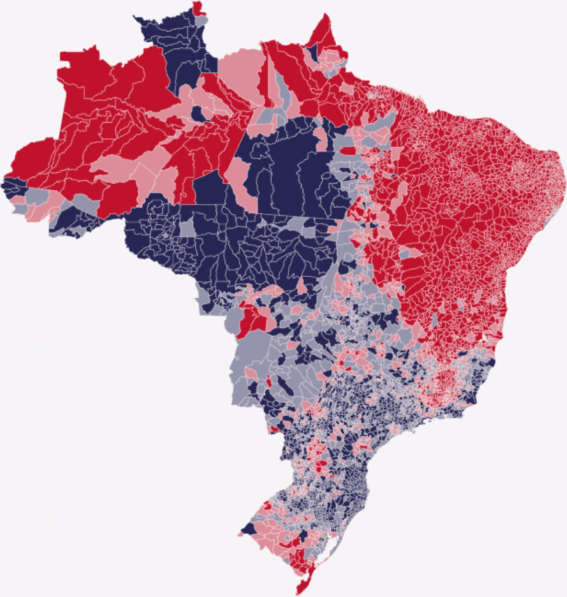

Esta análise refere-se as totalizações do 1° e 2° turnos das Eleições 2022 divulgadas pelo TSE e tem como objetivo, entre outras coisas, investigar o comportamento eleitoral de acordo com Modelo de Urna em Localidades que apresentem significativo percentual de ambos os modelos tanto das urnas Antigas "NÃO-UE2020" (UE2009, 2010, 2011, 2013 e 2015), quanto do Novo Modelo "UE2020"), e será Demonstrado e Provado que, quando comparado ao modelo Novo, TODOS os modelos ANTIGOS, de maneira uniforme apresentaram:
Estas 2 (duas) análises são significativas e inovadoras, visto que a demonstração do:
Portanto, se estas eleições tivessem usado apenas as urnas de Modelo Novo "UE2020", não só Bolsonaro teria sido reeleito, mas praticamente Todos seus apoiadores nos diversos cargos disputados, teriam sido eleitos visto que todos foram extremamente prejudicados nas urnas de modelos Antigos.
Foi divulgado que o Código Fonte da urna eletrônica brasileira possui mais de 17 MILHÕES de linhas! Para entendermos o Tamanho Físico do que seriam 17 milhões de linhas, vamos comparar com o formato padrão de texto usado nas Empresas e Órgãos Públicos no Brasil que é a folha de papel A4, com fonte de tamanho 12pt, margens de 2cm e espaçamento simples entre as linhas.
Neste formato padrão podem ser impressos até 51 linhas por folha; então se imprimirmos as 17 (dezessete) MILHÕES de Linhas precisaríamos de 334 MIL folhas (667 Resmas de 500 folhas). Para fins de comparação com a Bíblia, que é um livro popular, essas 17 Milhões de Linhas equivalem ao volume de 200 (duzentas) Bíblias!!!
Porém estamos falando de um programa de computador e não o texto de um livro, portanto para termos uma ideia de quão gigantesco é esse número de linhas em um programa de computador, vamos comparar qual a quantidade de linhas de outros softwares importantes e famosos. (Fonte: https://www.visualcapitalist.com/millions-lines-of-code/)
Ora, então quer dizer que a NASA tem um Robô funcionando de forma autônoma no Planeta Marte por mais de 10 (dez) anos, que sozinho gera a própria energia, se locomove, faz pesquisas, recolhe materiais, tira fotos, recebe e envia informações para Terra a mais de 400 MILHÕES de quilômetros, tudo isso com MENOS de 1/3 das linhas de código do Software da urna eletrônica brasileira que só precisa executar 5 vezes a MESMA operação de "Receber a digitação do Número do candidato e emitir um som". Percebe-se uma absurda discrepância entre as funções da urna e a necessidade de 17 Milhões de linhas de código.
Essa lista demostra que softwares extremamente mais Complexos, com inúmeros recursos e funcionalidades para Comunicação, Áudio, Vídeo, Segurança, Jogos e Aplicações em geral, possuem muito MENOS linhas que as 17 milhões de linhas do código fonte da urna eletrônica brasileira. De fato, uma aplicação de celular, tanto Apple iPhone, quanto Google Android, possui em Média 20 mil linhas de código fonte. E em diversas faculdades de computação é muito comum o desenvolvimento de projetos de software de urnas de votação que passem em todos os testes de segurança do mercado e na média esses programas completos e seguros dificilmente chegam perto das 3 mil linhas de código fonte.
Os programas de computador são escritos em Linguagens de Programação, sendo as mais famosas: C, C++, Python, Java, JavaScript, Assembly. TODOS os programas da lista acima são escritos em C ou C++ que são linguagens muito rápidas e poderosas, porém com poucas funções pré-programadas, sendo que um programa de 100 (cem) linhas de código C/C++, pode ser programado EXATAMENTE IGUAL em (aproximadamente) 40 (quarenta) linhas de Java, ou apenas 10 (dez) linhas de Python.
O TSE não divulgou qual é a linguagem de programação dos aplicativos *Sistemas de Apuração (SA), de Votação (VOTA), de Logs de Aplicações SA e VOTA, e de Totalização (SisTot), mas se NÃO for a linguagem C ou C++, então, de forma aproximada, podemos dizer que estas 17 milhões de linhas de programação corresponderiam a talvez 50 (CINQUENTA) MILHÕES DE LINHAS (ou até mais) de código fonte em C/C++, portanto, a quantidade de INSTRUÇÕES a serem EXECUTADAS seriam muito superiores aos maiores e mais complexos programas do mundo listados acima!!!*
A urna eletrônica certamente NÃO tem complexidade sequer próxima da complexidade e recursos dos programas citados acima, e se o código fonte do programa eleitoral da urna eletrônica realmente tivesse o inimaginável tamanho de 17 Milhões de linhas de programação, obrigatoriamente necessitaria de uma enorme e especializada equipe de manutenção e desenvolvimento, de alguns milhares de profissionais da mesma forma que qualquer empresa de tecnologia.
O Desenvolvimento, Aprimoramento, Manutenção de programas com Milhões de linhas de código fonte exigem Enormes Equipes especializadas de Engenheiros de software e Desenvolvedores. Constata-se no mercado que as empresas possuem em média 1 (um) programador para o desenvolvimento, melhorias e manutenção de programas com aproximadamente 10 Mil linhas de código, sendo muito comum encontrarmos no mercado equipes de 5 especialistas (programadores, designer, tester, gerente, etc) para softwares com aproximadamente 50 Mil linhas de código fonte.
Talvez o leitor pense que fazer um programa seja como "construir um prédio", onde precisam-se de muitos trabalhadores no começo, mas depois, apenas poucas pessoas. NÃO, NÃO Funciona assim. As equipes de desenvolvimento nas empresas de tecnologia são muito grandes e geralmente sempre crescem mais, pois muitas vezes a "simples" manutenção em um programa exige que centenas ou milhares de linhas de código sejam refeitas, excluídas ou escritas, é um processo de contínua "destruição" e "criação" de códigos que pode causar problemas de funcionamento e segurança em diversas outras partes do software que precisam ser retestadas e até alteradas, portanto TER e MANTER um Grande sistema, SEMPRE exigirá uma grande equipe, de vários especialistas, PERMANENTEMENTE.
O TSE só poderia ter controle da análise, desenvolvimento, correção, aprimoração, manutenção, etc de um código fonte de 17 Milhões de linhas se tivesse ao menos 2 (dois) Mil especialistas dedicados apenas a trabalharem nas 17 Milhões de linhas do código fonte, o que já daria o equivalente a quase 10 mil linhas ou 200 páginas para cada 1 (um) programador ser o único responsável e um gerente seria responsável por 50 mil a 100 mil linhas, assim como o fazem as maiores empresas de tecnologia do mundo, como na Alphabet (Google), Microsoft, Apple, Tencent, Meta (Facebook), Oracle, etc.
Para comparação, a Google e a Microsoft possuem mais de 180 Mil e 220 Mil funcionários respectivamente de forma CONSTANTE, grande parte, para manter, corrigir e continuamente aperfeiçoar seus principais softwares.
Portanto devido ao TSE apresentar informações que são TOTALMENTE INCOMPATÍVEIS com o Perfil de uma "Empresa/Órgão" desenvolvedor de um código fonte de 17 milhões de linhas, pois obrigatoriamente exigiria enorme Estrutura técnica, know-how, equipes com centenas ou milhares de especialistas (Engenheiros de Software, Segurança, Hardware, etc).
E também conhecendo a capacidade de qualquer Órgão Governamental (independente do país), em Desenvolvimento de Softwares Complexos, é altamente plausível que O TSE TERCEIRIZA O DESENVOLVIMENTO, TESTES, CORREÇÃO, MELHORIAS, ATUALIZAÇÕES, MANUTENÇÃO, ETC DOS SOFTWARES UTILIZADOS NAS URNAS QUE, CONFORME PROVADO, APRESENTARAM 2 VERSÕES DISTINTAS NAS ELEIÇÕES DE 2022.
Se o software da urna eletrônica for Completamente, ou em Parte, TERCEIRIZADO e desenvolvido por alguma Empresa Terceirizada, pelo tamanho da equipe exigida, poderia ser uma empresa de Origem Estrangeira, ou que tenha investidores ou funcionários estrangeiros ou até que RE-TERCEIRIZE parte do trabalho para estrangeiros, que imediatamente coloca em RISCO EXTREMO a Segurança e Soberania das Eleições no Brasil, visto que o TSE NÃO tem de forma alguma, nem know-how, nem especialistas suficientes e capacitados para Analisar e Entender esse COLOSSAL Código Fonte, que como demonstrado, é do tamanho aproximado de 200 Bíblias Completas, ou seja, o TSE teria que confiar cegamente no trabalho realizado pela empresa contratada.
Resta saber: QUEM É (OU "QUEM SÃO", POIS PODE SER MAIS DE UMA) A(S) EMPRESA(S) TERCEIRIZADA(S) RESPONSÁVEIS PELO SOFTWARE DAS URNAS ELETRÔNICAS?, visto que é altamente implausível ser o TSE sozinho, a não ser que o TSE seja 100 vezes mais eficiente que qualquer empresa de software que já existiu no planeta.
O TSE divulgou que as urnas eletrônicas utilizam uma variação do sistema operacional GNU/Linux chamada "UENUX". (GNU/Linux é a combinação de softwares livres e abertos formando um sistema operacional (como o Windows), por serem softwares com o código fonte aberto, permitem que qualquer pessoa faça modificações e crie uma nova variação do projeto principal.)
É uma hipótese bastante plausível que o TSE tenha se APROPRIADO, como se fossem suas, das milhões de linhas de código fonte do Linux para então dizer que "o código fonte da urna possua 17 milhões de linhas"! Porém, existe uma série de Problemas Graves a serem analisados:
Se alguém desenvolve um software (digamos, com mil linhas de código fonte) usando Linux, em hipótese alguma essa pessoa pode dizer que seu software tem 17 Milhões de linhas, ou seja, ela NÃO pode assumir para si o crédito do trabalho realizado por outras pessoas. Sendo assim, se o TSE está INCLUINDO as linhas de código do Linux, como se fossem suas, isso é caracterizado como crime de FALSIDADE IDEOLÓGICA, visto que estão se apropriando do trabalho de terceiros, se passando por seu autor e não cumprindo com a obrigatoriedade de informar os nomes dos criadores do software aberto usado.
Possivelmente as FFAA receberam do TSE apenas o puro código aberto Linux para ser analisado e NÃO o código do Software responsável pela COMPUTAÇÃO dos votos, o que demonstra uma atitude extremamente não-profissional e trapaceira, podendo ser classificada como ESTELIONATO por enganar os analistas e seu trabalho profissional.
Lembrando que para empresas estrangeiras, como a ORACLE, Smartmatic, DieBold, Indra, o TSE sempre liberou o Código Fonte Completo, e mesmo que fosse "apenas" uma parte, já comprometeria todo o sistema, pois conforme explicado, o TSE, por si só, NÃO possui capacidade técnica para a desenvolver e garantir a segurança de um sistema de 17 Milhões de linhas de código.
https://rumble.com/v1yo0ym-urnas-eletrnicas-controladas-por-empresas-estrangeiras.html
https://rumble.com/v1yo17i-urnas-eletrnicas-muito-alm-da-fraude.html
É espantoso que, empresas estrangeiras NÃO precisem agendar dia e horário restritos e limitados para "analisar o código usando apenas com um caderno e lápis", pelo contrário, elas recebem do TSE o Código Completo quando bem querem para fazer o que bem entenderem!!!
Enquanto as FFAA, que se submetem à todo um processo burocrático, pode lhes ter sido mostrado NÃO é o Real Código do Software Responsável pela Computação e Registro dos Votos, mas sim um apenas um CÓDIGO GENÉRICO do Sistema Operacional Linux. *Ou seja, deram para as FFAA uma quantidade enorme de código qualquer, como uma "cortina de fumaça", apenas para distração*.
Está provado que no Log da urna, quando acontece alguma falha, é informado o NOME COMPLETO do ELEITOR, portanto na urna eletrônica existem muito mais dados do eleitor que apenas o número do título do eleitor (que já é grave), permitindo que facilmente também se registre em um arquivo os Candidatos Votados por este Eleitor.
Como todos os arquivos da urna são fornecidos (e omitidos) pelo TSE, a sociedade nunca saberá se seus votos são realmente sigilosos, lembrando que em 2001 houve a violação do painel eletrônico do Senado, fato grave de quebra do sigilo para uso de controle e chantagem dos senadores.
Geralmente as distribuições (variações) Linux são 99% iguais umas às outras, pois não é necessário alterar as centenas de milhares de arquivos, mas apenas os poucos necessários para customizar, ou ajustar a distribuição para seus interesses. Esses arquivos alterados PERDEM a capacidade de serem automaticamente atualizados com as CORREÇÕES de SEGURANÇA, sendo assim, quem alterou o arquivo, passa a ser responsável por identificar as falhas de segurança e implementar futuras correções.
É crucial saber o que exatamente o TSE alterou e qual o controle que eles tem sobre as manutenções de segurança das partes alteradas, visto ser altamente implausível que o TSE possua equipe técnica própria para gerenciar 17 milhões de linhas de código fonte, e com a terceirização do código fonte (completo ou em partes), torna-se impossível para o TSE analisar adequadamente o código em busca de Brechas de Segurança, muitas vezes deixadas de propósito, como uma backdoor, para serem exploradas quando necessário, lembrando o fato da própria Polícia Federal ter prendido hacker por invasão dos computadores do TSE.
O Software Livre GNU/Linux (e demais) estão sob a licença GNU General Public License versão 2 (GPL-2.0), que resumidamente diz:
Como as próprias Urnas Eletrônicas e o Desenvolvimento do Software de Votação foram PAGOS com DINHEIRO PÚBLICO, integrando componentes GNU/Linux de licença GPL, e sendo DISTRIBUÍDO por TODO o PAÍS, torna-se Obrigatória a divulgação ao contribuinte do Código Fonte e das suas modificações! (veja: https://publiccode.eu/)
Se as maiores e mais avançadas empresas de software do mundo necessitam de MILHARES de profissionais e engenheiros para o Desenvolvimento e MANUTENÇÃO de seus softwares, pergunta-se ao TSE:
Como contribuinte que pagou pelas Urnas Eletrônicas e pelo desenvolvimento do Software de Votação que está sob a licença GPL, requer-se que o TSE publique IMEDIATAMENTE TODO o Código Fonte das urnas eletrônicas, separando e identificando o que é código de sistema operacional do que é Código dos Programas de Votação, assim como a documentação de todas as modificações, sob pena de INVALIDAÇÃO e ANULAÇÃO de qualquer resultado obtido pelo USO INDEVIDO de software livre, aberto, de domínio público e PAGO PELO POVO BRASILEIRO.
Este relatório é fiel em todos os estudos estatísticos e as Fraudes SÃO Evidentes, saltam aos olhos, gritam aos ouvidos, não é o primeiro e nem será o último relatório que comprova diversas irregularidades do processo eleitoral que já foram muitas antes do dia de votação:
Sobre a Análise dos Votos, este relatório apresenta em detalhes 2 (dois) Claros Indícios de Fraude:
Alguém poderia considerar todas essas peculiaridades como algo normal, sendo apenas uma mera coincidência do acaso???
Qualquer outra pessoa, mesmo de outros países, com o mínimo de bom senso sabe que um processo eleitoral dessa forma contém numerosos indícios de ser VICIADO e FRAUDULENTO, portanto DEVE SER ANULADO visto que prejudicou diretamente todos os candidatos para os cargos de Presidente, Governador, Senador (e possivelmente Deputados Federal e Estadual), todos de uma específica aliança política.
Diante dos fatos apresentados acima que provam que o TSE NÃO tem competência para gerenciar sozinho, e por seus meios próprios, um software de 17 Milhões de Linhas de código fonte, por não apresentar nenhuma das características mínimas compatíveis com empresas de software de tal porte, evidencia que o TSE só pode fazê-lo pela distribuição do trabalho para terceiros, cuja nacionalidade, código de sigilo e segurança são desconhecidos da sociedade e comprometem a Soberania do Brasil e todo seu processo eleitoral.
Além de negar a sociedade e as FFAA o acesso ao REAL código do Software de Votação da urna eletrônica para fiscalização da não existência de Mecanismos de Fraude, nem de Vazamento de Dados.
E também fundamentado no Fatos apresentados em detalhes a seguir, a distribuição de votos entre todos os candidatos e os modelos de urnas Antigas e Nova apresentam comportamentos completamente distintos em Favorecimento e Vantagem de Votos para Lula e seus candidatos alinhados e em Desfavorecimento e Desvantagem pela SUBTRAÇÃO de VOTOS do candidato Bolsonaro e seus alinhados para o Governo e Senado. Prova-se que se nessas eleições fossem usadas apenas as urnas de modelo Novo, na grande maioria dos estados (tanto nas capitais, quanto no interior) não só todos os alinhados ao candidato Bolsonaro seriam Novamente Eleitos, assim como seriam eleitos a grande maioria dos que não foram eleitos pelas Fraudes nas urnas Antigas.
É INCONTESTÁVEL QUE A VONTADE DA MAIORIA DO POVO NÃO FOI RESPEITADA, QUE AS ELEIÇÕES FORAM FRAUDADAS E QUE DEVEM SER ANULADAS E REFEITAS DE FORMA TRANSPARENTE CONFORME REGRA NOSSA CONSTITUIÇÃO.
O POVO REQUER QUE AS FFAA, EM CARÁTER EXCEPCIONAL E ÚNICO, REALIZEM AS ELEIÇÕES DE 2022 COM CÉDULAS DE PAPEL E COMANDEM A APURAÇÃO DOS VOTOS JUNTO COM A SOCIEDADE EM LOCAIS COM MONITORAMENTO DO PROCESSO DE CONTAGEM.
A MAIORIA DO POVO NÃO PODE E NÃO ACEITARÁ, EM HIPÓTESE ALGUMA PERMITIR ESTA TOMADA DE PODER ATRAVÉS DE UM PROCESSO ELEITORAL COMPLETAMENTE FRAUDULENTO EM TODAS AS ETAPAS.
SE AS FFAA SE ACOVARDAREM, EM POUCOS DIAS VERÃO SEU POVO, QUE NÃO FOGE À LUTA, NEM TEME A PRÓPRIA MORTE, SER ATACADO PELAS ORDENS DE UM GOVERNANTE CRIMINOSO, CORRUPTO E ILEGÍTIMO.
ESTE É O MOMENTO DAS FFAA HONRAREM SEU JURAMENTO E PROTEGER O PAÍS CONTRA QUAISQUER INIMIGOS, EXTERNOS OU INTERNOS.
Passaremos agora a Análise Técnica do dados das eleições divulgados pelo TSE nos arquivos de totalizações de cada estado dos 2 turnos eleitorais. Primeiramente apenas verificando, de forma geral, os dados obtidos.
As colunas para Presidente "vPresA22", "vPresB13", "vPresC15", "vPresD12" representam os votos para os Candidatos Bolsonaro, Lula, Simone e Ciro, respectivamente.
As colunas para Governador "vGovA", "vGovB" e Senador "vSenA", "vSenB" representam os votos dos candidatos a Governador e Senador mais Alinhados com cada candidato a presidente.
| Estado e Região | Estado | Candidatos a Governador | Candidatos a Senador | |
|---|---|---|---|---|
| DF | CO | Distrito Federal | ((15, Ibaneis Rocha (MDB)), (43, Leandro Grass (PV)) | ((10, Damares Alves (Republicanos)), (22, Flávia Arruda (PL))) |
| GO | CO | Goiás | ((22, Major Vitor Hugo (PL)), (44, Ronaldo Caiado (União Brasil))) | ((22, Wilder Morais (PL)), (45, Marconi Perillo (PSDB))) |
| MT | CO | Mato Grosso | ((44, Mauro Mendes (União Brasil)), (43, Márcia Pinheiro (PV))) | ((22, Wellington Fagundes (PL)), (14, Antônio Galvan (PTB))) |
| MS | CO | Mato Grosso do Sul | ((28, Capitão Contar (PRTB)), (45, Eduardo Riedel (PSDB))) | ((11, Tereza Cristina (PP)), (44, Mandetta (União Brasil))) |
| AL | NE | Alagoas | ((44, Rodrigo Cunha (União Brasil)), (15, Paulo Dantas (MDB))) | ((11, Davi Davino Filho (PP)), (15, Renan Filho (MDB))) |
| BA | NE | Bahia | ((44, ACM Neto (União Brasil)), (13, Jerônimo Rodrigues (PT))) | ((11, Cacá Leão (PP)), (55, Otto Alencar (PSD))) |
| CE | NE | Ceará | ((44, Capitão Wagner (União Brasil)), (13, Elmano de Freitas (PT))) | ((70, Kamila Cardoso (Avante)), (13, Camilo (PT))) |
| MA | NE | Maranhão | ((20, Lahesio Bonfim (PSC)), (40, Carlos Brandão (PSB))) | ((14, Roberto Rocha (PTB)), (40, Flávio Dino (PSB))) |
| PB | NE | Paraíba | ((45, Pedro Cunha Lima (PSDB)), (40, João Azevêdo (PSB))) | ((44, Efraim Filho (União Brasil)), (40, Pollyanna (PSB))) |
| PE | NE | Pernambuco | ((45, Raquel Lyra (PSDB)), (77, Marília Arraes (Solidariedade))) | ((22, Gilson Machado (PL)), (13, Teresa Leitão (PT))) |
| PI | NE | Piauí | ((44, Silvio Mendes (União Brasil)), (13, Rafael Fonteles (PT))) | ((11, Joel Rodrigues (PP)), (13, Wellington Dias (PT))) |
| RN | NE | Rio Grande do Norte | ((77, Fabio Dantas (Solidariedade)), (13, Fátima Bezerra (PT))) | ((22, Rogério Marinho (PL)), (12, Carlos Eduardo (PDT))) |
| SE | NE | Sergipe | ((55, Fábio Mitidieri (PSD)), (13, Rogério Carvalho (PT))) | ((11, Laércio (PP)), (40, Valadares Filho (PSB))) |
| AC | N | Acre | ((11, Gladson Cameli (PP)), (13, Jorge Viana (PT))) | ((44, Alan Rick (União Brasil)), (19, Ney Amorim)) |
| AP | N | Amapá | ((55, Jaime Nunes (PSD)), (77, Clécio (Solidariedade))) | ((15, Rayssa Furlan (MDB))), (44, Davi (União Brasil))) |
| AM | N | Amazonas | ((44, Wilson Lima (União Brasil)), (15, Eduardo Braga (MDB))) | ((22, Coronel Menezes (PL)), (55, Omar Aziz (PSD))) |
| PA | N | Pará | ((22, Zequina Marinho (PL)), (15, Helder Barbalho (MDB))) | ((22, Mario Couto (PL)), (13, Beto Faro (PT))) |
| RO | N | Rondônia | ((22, Marcos Rogério (PL)), (44, Coronel Marcos Rocha (União Brasil))) | ((22, Jaime Bagattoli (PL)), (10, Mariana Carvalho (Republicanos))) |
| RR | N | Roraima | ((11, Antônio Denarium (PP)), (15, Tereza Surita (MDB))) | ((11, Hiran Gonçalves (PP)), (15, Romero Jucá (MDB))) |
| TO | N | Tocantins | ((22, Ronaldo Dimas (PL)), (10, Wanderlei Barbosa (Republicanos))) | ((44, Dorinha (União Brasil)), (11, Katia (PP))) |
| ES | SE | Espírito Santo | ((22, Carlos Manato (PL)), (40, Renato Casagrande (PSB))) | ((22, Magno Malta (PL)), (15, Rose de Freitas (MDB))) |
| MG | SE | Minas Gerais | ((30, Romeu Zema (Novo)), (55, Kalil (PSD))) | ((20, Cleitinho (PSC)), (55, Alexandre Silveira (PSD))) |
| RJ | SE | Rio de Janeiro | ((22, Cláudio Castro (PL)), (40, Marcelo Freixo (PSB))) | ((22, Romário (PL)), (40, Alessandro Molon (PSB))) |
| SP | SE | São Paulo | ((10, Tarcísio de Freitas (Republicanos)), (13, Fernando Haddad (PT))) | ((22, Astronauta Marcos Pontes (PL)), (40, Márcio França (PSB))) |
| PR | S | Paraná | ((55, Ratinho Jr. (PSD)), (13, Requião (PT))) | ((22, Paulo Martins), (44, Sergio Moro (União Brasil))) |
| RS | S | Rio Grande do Sul | ((22, Onyx Lorenzoni (PL)), (45, Eduardo Leite (neutro) (PSDB))) | ((10, Hamilton Mourão (Republicanos)), (13, Olívio Dutra (PT))) |
| SC | S | Santa Catarina | ((22, Jorginho Mello (PL)), (13, Décio Lima (PT))) | ((22, Jorge Seif (PL)), (55, Raimundo Colombo (PSD))) |
| ZZ | EX | Exterior | ((0, Sem Governador), (0, Sem Governador)) | ((0, Sem Senador), (0, Sem Senador)) |
Total de Votos para Presidente, Governador e Senador em cada Estado durante o 1° Turno em Todos os estados e exterior
| vPresA22 | vPresB13 | vPresC15 | vPresD12 | vPresOutros | vPresBN | vGovA | vGovB | vGovOutros | vGovBN | vSenA | vSenB | vSenOutros | vSenBN | |
|---|---|---|---|---|---|---|---|---|---|---|---|---|---|---|
| (CO, DF) | 910,397.00 | 649,534.00 | 105,377.00 | 74,308.00 | 22,959.00 | 57,325.00 | 832,633.00 | 434,587.00 | 388,196.00 | 152,068.00 | 714,562.00 | 429,676.00 | 444,474.00 | 218,772.00 |
| (CO, GO) | 1,920,203.00 | 1,454,723.00 | 170,742.00 | 90,695.00 | 45,106.00 | 131,128.00 | 516,579.00 | 1,806,892.00 | 1,164,385.00 | 319,335.00 | 799,022.00 | 626,662.00 | 1,738,508.00 | 642,999.00 |
| (CO, MS) | 794,206.00 | 588,323.00 | 79,719.00 | 29,314.00 | 15,427.00 | 48,160.00 | 384,275.00 | 361,981.00 | 692,186.00 | 114,212.00 | 829,149.00 | 206,093.00 | 327,403.00 | 190,009.00 |
| (CO, MT) | 1,102,866.00 | 633,748.00 | 55,989.00 | 29,437.00 | 20,848.00 | 49,292.00 | 1,114,549.00 | 267,172.00 | 246,491.00 | 260,800.00 | 825,229.00 | 337,003.00 | 447,016.00 | 279,764.00 |
| (EX, ZZ) | 122,548.00 | 138,933.00 | 13,167.00 | 13,341.00 | 6,536.00 | 9,502.00 | ||||||||
| (N, AC) | 275,582.00 | 129,022.00 | 20,122.00 | 12,314.00 | 3,877.00 | 14,986.00 | 242,100.00 | 103,265.00 | 81,235.00 | 28,838.00 | 154,312.00 | 73,567.00 | 184,070.00 | 43,489.00 |
| (N, AM) | 880,198.00 | 1,019,684.00 | 87,060.00 | 44,527.00 | 25,207.00 | 57,095.00 | 819,784.00 | 401,817.00 | 692,799.00 | 196,475.00 | 737,875.00 | 784,007.00 | 370,888.00 | 218,105.00 |
| (N, AP) | 187,621.00 | 197,382.00 | 27,497.00 | 14,670.00 | 4,991.00 | 10,681.00 | 176,208.00 | 222,168.00 | 15,436.00 | 28,289.00 | 174,128.00 | 196,087.00 | 39,295.00 | 32,591.00 |
| (N, PA) | 1,884,673.00 | 2,443,730.00 | 204,075.00 | 116,057.00 | 31,401.00 | 109,375.00 | 1,201,079.00 | 3,117,276.00 | 109,132.00 | 357,785.00 | 1,485,453.00 | 1,781,582.00 | 920,326.00 | 597,911.00 |
| (N, RO) | 581,306.00 | 261,749.00 | 31,217.00 | 19,353.00 | 9,610.00 | 23,592.00 | 315,035.00 | 330,656.00 | 204,664.00 | 75,408.00 | 293,488.00 | 263,559.00 | 262,671.00 | 106,045.00 |
| (N, RR) | 207,587.00 | 68,760.00 | 12,956.00 | 6,709.00 | 2,357.00 | 7,035.00 | 163,167.00 | 118,856.00 | 6,910.00 | 15,386.00 | 118,760.00 | 91,431.00 | 71,143.00 | 22,985.00 |
| (N, TO) | 379,194.00 | 434,303.00 | 25,209.00 | 18,141.00 | 4,945.00 | 29,657.00 | 186,361.00 | 481,496.00 | 160,344.00 | 61,379.00 | 395,408.00 | 145,104.00 | 243,688.00 | 105,380.00 |
| (NE, AL) | 621,515.00 | 974,156.00 | 67,411.00 | 43,542.00 | 17,593.00 | 81,754.00 | 407,220.00 | 708,984.00 | 403,927.00 | 282,660.00 | 627,397.00 | 845,988.00 | 39,315.00 | 290,091.00 |
| (NE, BA) | 2,047,599.00 | 5,873,081.00 | 197,305.00 | 217,224.00 | 87,799.00 | 451,833.00 | 3,316,711.00 | 4,019,830.00 | 793,326.00 | 736,591.00 | 1,826,218.00 | 4,218,333.00 | 1,190,258.00 | 1,631,649.00 |
| (NE, CE) | 1,377,827.00 | 3,578,355.00 | 66,214.00 | 369,222.00 | 37,646.00 | 199,346.00 | 1,649,213.00 | 2,808,300.00 | 741,379.00 | 424,558.00 | 1,273,272.00 | 3,389,513.00 | 196,162.00 | 764,503.00 |
| (NE, MA) | 983,861.00 | 2,603,454.00 | 78,254.00 | 96,095.00 | 19,981.00 | 138,790.00 | 857,744.00 | 1,769,187.00 | 822,459.00 | 468,822.00 | 1,211,174.00 | 2,125,811.00 | 69,375.00 | 511,852.00 |
| (NE, PB) | 717,416.00 | 1,554,868.00 | 57,154.00 | 76,225.00 | 16,025.00 | 135,791.00 | 520,155.00 | 863,174.00 | 793,395.00 | 375,152.00 | 617,477.00 | 457,679.00 | 928,639.00 | 548,081.00 |
| (NE, PE) | 1,630,938.00 | 3,558,322.00 | 96,570.00 | 130,015.00 | 36,164.00 | 286,362.00 | 1,009,556.00 | 1,175,651.00 | 2,720,212.00 | 826,870.00 | 1,320,555.00 | 2,061,276.00 | 1,087,589.00 | 1,262,869.00 |
| (NE, PI) | 406,897.00 | 1,518,008.00 | 42,179.00 | 59,321.00 | 17,981.00 | 71,259.00 | 811,806.00 | 1,115,139.00 | 39,099.00 | 147,962.00 | 892,010.00 | 962,194.00 | 19,839.00 | 239,963.00 |
| (NE, RN) | 622,731.00 | 1,264,179.00 | 38,633.00 | 71,740.00 | 9,981.00 | 83,340.00 | 406,461.00 | 1,066,496.00 | 356,017.00 | 257,748.00 | 708,351.00 | 565,235.00 | 418,923.00 | 394,213.00 |
| (NE, SE) | 378,610.00 | 828,716.00 | 42,073.00 | 40,247.00 | 8,786.00 | 66,292.00 | 294,936.00 | 338,796.00 | 582,128.00 | 146,744.00 | 310,300.00 | 267,756.00 | 508,207.00 | 276,341.00 |
| (S, PR) | 3,628,612.00 | 2,363,492.00 | 309,685.00 | 180,599.00 | 84,376.00 | 261,779.00 | 4,243,292.00 | 1,598,204.00 | 251,363.00 | 722,830.00 | 1,697,962.00 | 1,953,188.00 | 2,179,427.00 | 985,112.00 |
| (S, RS) | 3,245,023.00 | 2,806,672.00 | 317,957.00 | 190,945.00 | 77,155.00 | 252,264.00 | 2,382,026.00 | 1,702,815.00 | 2,267,036.00 | 531,464.00 | 2,593,294.00 | 2,225,458.00 | 1,141,206.00 | 923,383.00 |
| (S, SC) | 2,694,406.00 | 1,279,216.00 | 191,310.00 | 88,672.00 | 77,380.00 | 156,490.00 | 1,575,912.00 | 710,859.00 | 1,795,081.00 | 389,767.00 | 1,484,110.00 | 608,213.00 | 1,640,871.00 | 738,425.00 |
| (SE, ES) | 1,160,030.00 | 897,348.00 | 85,325.00 | 56,221.00 | 22,206.00 | 94,759.00 | 800,598.00 | 976,652.00 | 303,398.00 | 230,981.00 | 821,189.00 | 747,104.00 | 389,057.00 | 354,279.00 |
| (SE, MG) | 5,239,264.00 | 5,802,571.00 | 500,658.00 | 310,324.00 | 163,816.00 | 638,595.00 | 6,094,136.00 | 3,805,182.00 | 947,248.00 | 1,797,125.00 | 4,268,193.00 | 3,679,392.00 | 2,347,004.00 | 2,349,102.00 |
| (SE, RJ) | 4,831,246.00 | 3,847,143.00 | 365,969.00 | 301,489.00 | 110,830.00 | 452,786.00 | 4,930,288.00 | 2,300,980.00 | 1,176,430.00 | 1,485,960.00 | 2,384,331.00 | 1,731,786.00 | 4,052,510.00 | 1,725,031.00 |
| (SE, SP) | 12,239,989.00 | 10,490,032.00 | 1,625,596.00 | 898,540.00 | 402,177.00 | 1,533,380.00 | 9,881,995.00 | 8,337,139.00 | 5,133,415.00 | 3,795,298.00 | 10,714,913.00 | 7,822,518.00 | 3,032,052.00 | 5,578,364.00 |
| TOTAL | 51,072,345.00 | 57,259,504.00 | 4,915,423.00 | 3,599,287.00 | 1,383,160.00 | 5,452,648.00 |
Todos os estados tiveram computados os votos dos 4 (quatro) primeiros colocados para Presidente, e os 2 (dois) primeiros colocados para Governador e Senador.
Total de Votos para Presidente, Governador e Senador em cada Estado durante o 2° Turno em Todos os estados e exterior
| vPresA22 | vPresB13 | vPresBN | vGovA | vGovB | vGovBN | |
|---|---|---|---|---|---|---|
| (CO, DF) | 1,041,331.00 | 729,295.00 | 67,866.00 | |||
| (CO, GO) | 2,193,041.00 | 1,542,115.00 | 125,195.00 | |||
| (CO, MS) | 880,606.00 | 599,547.00 | 69,720.00 | 612,113.00 | 808,210.00 | 127,287.00 |
| (CO, MT) | 1,216,730.00 | 652,786.00 | 43,715.00 | |||
| (EX, ZZ) | 145,264.00 | 152,905.00 | 11,979.00 | |||
| (N, AC) | 287,750.00 | 121,566.00 | 11,444.00 | |||
| (N, AM) | 961,741.00 | 1,004,991.00 | 101,143.00 | 1,039,192.00 | 795,098.00 | 230,789.00 |
| (N, AP) | 200,547.00 | 189,918.00 | 10,218.00 | |||
| (N, PA) | 2,073,895.00 | 2,509,084.00 | 118,761.00 | |||
| (N, RO) | 633,236.00 | 262,904.00 | 30,377.00 | 415,278.00 | 458,370.00 | 51,915.00 |
| (N, RR) | 213,518.00 | 67,128.00 | 5,623.00 | |||
| (N, TO) | 411,654.00 | 434,593.00 | 24,991.00 | |||
| (NE, AL) | 687,827.00 | 976,831.00 | 120,330.00 | 759,984.00 | 834,278.00 | 188,145.00 |
| (NE, BA) | 2,357,028.00 | 6,097,815.00 | 516,885.00 | 4,007,023.00 | 4,480,464.00 | 476,757.00 |
| (NE, CE) | 1,634,477.00 | 3,807,891.00 | 207,030.00 | |||
| (NE, MA) | 1,082,749.00 | 2,668,425.00 | 103,630.00 | |||
| (NE, PB) | 802,502.00 | 1,601,953.00 | 169,760.00 | 1,104,963.00 | 1,221,904.00 | 242,239.00 |
| (NE, PE) | 1,798,832.00 | 3,640,933.00 | 360,970.00 | 3,113,415.00 | 2,190,264.00 | 491,680.00 |
| (NE, PI) | 467,065.00 | 1,551,383.00 | 70,082.00 | |||
| (NE, RN) | 711,381.00 | 1,326,785.00 | 70,633.00 | |||
| (NE, SE) | 421,086.00 | 862,951.00 | 71,430.00 | 623,851.00 | 582,940.00 | 146,747.00 |
| (S, PR) | 4,159,343.00 | 2,506,605.00 | 234,472.00 | |||
| (S, RS) | 3,733,185.00 | 2,891,851.00 | 305,816.00 | 2,767,786.00 | 3,687,126.00 | 469,691.00 |
| (S, SC) | 3,047,630.00 | 1,351,918.00 | 143,269.00 | 2,983,949.00 | 1,237,016.00 | 306,816.00 |
| (SE, ES) | 1,282,145.00 | 926,767.00 | 113,357.00 | 1,006,021.00 | 1,171,288.00 | 141,041.00 |
| (SE, MG) | 6,141,310.00 | 6,190,960.00 | 534,014.00 | |||
| (SE, RJ) | 5,403,894.00 | 4,156,217.00 | 413,711.00 | |||
| (SE, SP) | 14,216,587.00 | 11,519,882.00 | 1,644,022.00 | 13,480,643.00 | 10,909,371.00 | 2,951,802.00 |
| TOTAL | 58,206,354.00 | 60,345,999.00 | 5,700,443.00 | 31,914,218.00 | 28,376,329.00 | 5,824,909.00 |
No 2° turno foram computados os dados dos candidatos Lula e Bolsonaro, assim como os 2 (dois) governadores de cada estado que teve 2° turno para governador.
As urnas eletrônicas utilizadas nas eleições no Brasil fornecem diversas informações de interesse estatístico. Armazenado no BU (Boletim de Urna) temos a mais importante informação que é a Quantidade de VOTOS recebidos por cada candidato. Armazenada no LOG da Urna temos a informação do MODELO de urna utilizado em cada seção eleitoral.
Neste estudo iremos analisar e correlacionar estas 2 informações, o Total de Votos e o Modelo de Urna utilizado na seção.
Segundo informações oficiais do TSE, todos os seis modelos de urna, os antigos UE 2009, 2010, 2011, 2013 e 2015 e o modelo melhorado UE2020, deveriam usar o mesmo software, que, por lógica, gera o mesmo formato de Log.
Porém como notoriamente divulgado e publicado na página dos Resultados no TSE, o Formato e as Informações dos Arquivos de LOG dos Modelos Antigos são DIFERENTES do Modelo Novo. O Software usado nos modelos Antigos não registra o código da urna nas linhas do Log da urna, apenas o modelo novo de urna registra corretamente o código da urna nas linhas de log. Os modelos antigos registram o mesmo código repetido para todas as urnas e que não permite identificar univocamente cada urna.
Essa é uma das diferenças entre os logs desses 2 (dois) grupos de urna e claramente indica, sem sombra de dúvidas que NÃO FORAM GERADOS PELO MESMO SOFTWARE ELEITORAL, visto que deveriam ser Exatamente Iguais.
Sendo assim, se o Software Eleitoral usado no Novo Modelo "UE2020" também fosse instalado nas urnas "NÃO-UE2020" de modelo Antigo, estas produziriam o mesmo formato de Log, assim como, de forma inversa, se o software eleitoral usado nas urnas Antigas fosse instalado no modelo Novo, estas reproduziriam o resultado igual as urnas antigas, se esses logs não seguem o mesmo padrão, não foram gerados pelo menos programa.
O tema deste estudo é verificar se a distribuição dos votos se mantém proporcional entre os diversos modelos de urna utilizados no pleito eleitoral, visto que existe forte evidência que os Softwares usados nos modelos Antigos e Novo SÃO DIFERENTES, por apresentarem REGISTROS de ESCRITA no Log completamente desiguais entre as urnas dos modelos Antigos e o Novo.
Com o objetivo de tornar fácil a leitura deste estudo, as análises usarão 2 (dois) layouts de tabelas para a apresentação dos dados analisados dos 2 (dois) tipos de Distribuições:
A "VARIAÇÃO %" é o principal dado desta análise pois mostra o quão diferente seria o resultado do candidato caso as eleições apenas utilizassem as urnas: ou dos modelos Antigos, ou do modelo Novo. Esta variação NÃO está relacionada com o número de votos depositados naquele modelo de urna, desde que esses votos representem um percentual significativo do Total, seguramente representam a decisão popular naquela região e portanto uma Variação Percentual significativa entre os modelos de urna pode ser um indício de que o equipamento possa estar influenciando o resultado, visto que a escolha da população em uma localidade corresponderia com o resultado médio dos modelos das urnas, independente do modelo, desde que com um percentual significativo de votos.
TODOS os dados foram obtidos dos arquivos de Totalizações do TSE, verificados e reverificados, todos os votos dos candidatos estão EXATOS, pois os votos por seção foram apenas copiados do TSE.
[1] Nos 2 turnos a soma de votos para todos os candidatos é exatamente igual ao resultado do TSE, a única exceção, são 4 (quatro) Votos Nulos para presidente de diferença no 1° Turno. Como os votos não foram somados, mas sim Lidos dos BUs, provavelmente existe um erro em um dos BUs, mas como dito apenas alterou em 4 voto Nulos e não afetou nenhum voto de candidatos.
Na análise da distribuição de votos para PRESIDENTE no 1° Turno foram listados apenas os 4 (quatro) candidatos melhores colocados sendo que os demais candidatos tiveram menos votos que Brancos e Nulos.
A Tabela 1 mostra que foram registrados uma considerável quantidade de "Votos Totais" em todos os modelos de urnas, sendo que o novo modelo de urnas "UE2020" foi o mais utilizado no país, recebendo 43.31% da soma dos dos votos no 1° Turno.
Ainda na Tabela 1 vemos que todos os candidatos (incluindo "Outros" e "Brancos/Nulos") receberam, de forma bem distribuída, votos de todos os modelos de urnas ao compararmos o percentual de votos indicado na linha "TOTAL" com o percentual de votos obtido em cada modelo de urna, portanto não há concentração de votos oriundos de apenas um único modelo de urna para nenhum candidato.
| qtd Urnas | % Votos Totais | Votos Pres | Votos Bolsonaro | Votos Lula | Votos Simone | Votos Ciro | Votos Outros | Votos BN | % Bolsonaro | % Lula | % Simone | % Ciro | % Outros | % BN | |
|---|---|---|---|---|---|---|---|---|---|---|---|---|---|---|---|
| modelUrna | |||||||||||||||
| UE2009 | 46,636 | 9.47 | 11,710,715 | 4,854,836 | 5,515,362 | 405,614 | 321,521 | 119,220 | 494,162 | 41.46 | 47.10 | 3.46 | 2.75 | 1.02 | 4.22 |
| UE2010 | 94,365 | 19.02 | 23,521,476 | 9,209,857 | 11,622,458 | 822,118 | 609,726 | 234,068 | 1,023,249 | 39.16 | 49.41 | 3.50 | 2.59 | 1.00 | 4.35 |
| UE2011 | 27,536 | 5.51 | 6,811,846 | 2,656,740 | 3,346,511 | 246,282 | 187,638 | 68,434 | 306,241 | 39.00 | 49.13 | 3.62 | 2.75 | 1.00 | 4.50 |
| UE2013 | 25,053 | 5.02 | 6,207,283 | 2,584,225 | 2,933,216 | 214,785 | 155,307 | 58,754 | 260,996 | 41.63 | 47.25 | 3.46 | 2.50 | 0.95 | 4.20 |
| UE2015 | 85,794 | 17.67 | 21,860,566 | 8,940,299 | 10,321,716 | 833,392 | 571,836 | 225,575 | 967,748 | 40.90 | 47.22 | 3.81 | 2.62 | 1.03 | 4.43 |
| UE2020 | 192,640 | 43.31 | 53,570,481 | 22,826,388 | 23,520,241 | 2,393,232 | 1,753,259 | 677,109 | 2,400,252 | 42.61 | 43.91 | 4.47 | 3.27 | 1.26 | 4.48 |
| TOTAL | 472,024 | 100.00 | 123,682,367 | 51,072,345 | 57,259,504 | 4,915,423 | 3,599,287 | 1,383,160 | 5,452,648 | 41.29 | 46.30 | 3.97 | 2.91 | 1.12 | 4.41 |
Na Tabela 1 também percebemos que, por alguma razão, com a exceção apenas do candidato Lula, todos os demais candidatos (incluindo Outros e Brancos/Nulos) receberam MENOS votos dos modelos de urna Anteriores ao modelo Novo "UE2020".
| qtd Urnas | % Votos Totais | Votos Pres | Votos Bolsonaro | Votos Lula | Votos Simone | Votos Ciro | Votos Outros | Votos BN | % Bolsonaro | % Lula | % Simone | % Ciro | % Outros | % BN | |
|---|---|---|---|---|---|---|---|---|---|---|---|---|---|---|---|
| modelUrna | |||||||||||||||
| NÃO-UE2020 | 279,384 | 56.69 | 70,111,886 | 28,245,957 | 33,739,263 | 2,522,191 | 1,846,028 | 706,051 | 3,052,396 | 40.29 | 48.12 | 3.60 | 2.63 | 1.01 | 4.35 |
| UE2020 | 192,640 | 43.31 | 53,570,481 | 22,826,388 | 23,520,241 | 2,393,232 | 1,753,259 | 677,109 | 2,400,252 | 42.61 | 43.91 | 4.47 | 3.27 | 1.26 | 4.48 |
| TOTAL | 472,024 | 100.00 | 123,682,367 | 51,072,345 | 57,259,504 | 4,915,423 | 3,599,287 | 1,383,160 | 5,452,648 | 41.29 | 46.30 | 3.97 | 2.91 | 1.12 | 4.41 |
| VARIAÇÃO % | -5.44 | 9.59 | -19.46 | -19.57 | -19.84 | -2.90 |
Na Tabela 2, todas as urnas anteriores ao modelo "UE2020" foram agrupadas em um grupo chamado "NÃO-UE2020" que recebeu 56.69% dos votos nas Eleições 2022. Com esse agrupamento fica mais perceptível que com a exceção do candidato Lula, todos os demais candidatos receberam um percentual menor de votos nesses modelos antigos "NÃO-UE2020".
A Tabela 2 também apresenta VARIAÇÃO PERCENTUAL entre o resultado das urnas Novas "UE2020" e as urnas Antigas "NÃO-UE2020", mostrando que as urnas antigas "NÃO-UE2020" apresentaram um resultado 9.59% favorável para o candidato Lula comparado com as urnas novas "UE2020", por outro lado todos os demais candidatos obtiveram um resultado desfavorável nas urnas "NÃO-UE2020". O candidato Bolsonaro perdeu -5.44% e, ainda pior, os demais candidatos Simone, Ciro e Outros, obtiveram quase 20% a Menos de votos nas urnas antigas quando comparado com as urnas novas. Da mesma forma os votos Brancos/Nulos também foram 2.90% menores nesses modelos de urna antigas.
Ou seja, se no 1° Turno, todas as urnas fossem os modelos antigos de urnas "NÃO-UE2020" (de 2009 até 2015, época do governo PT), o candidato Lula teria uma vantagem de 19.5% em relação ao candidato Bolsonaro. Por outro lado, se todas as urnas fossem os modelos novos "UE2020" a vantagem do Lula em relação ao Bolsonaro seria de apenas 3% (*).
(*) Votos do Lula Dividido pelos Votos do Bolsonaro no modelo "NÃO-UE2020" (33.739.263 / 28.245.957 = 19.5%) e no modelo "UE2020" (23.520.241 / 22.826.388 = 3%).
No 2° turno o número de votos foi um pouco superior ao 1° Turno e a distribuição dos votos se manteve muito similar ao 1° turno, com mínimas variações entre as urnas dos modelos antigos, sendo que no geral o grupo "NÃO-UE2020" teve uma variação percentual de apenas 0.02% ou seja, a distribuição dos votos entre estes 2 grupos de modelos de urnas é estritamente a mesma entre os 2 turnos.
Na Tabela 1 continua presente a relação de maior percentual de votos para o candidato Lula nas urnas antigas "NÃO-UE2020", sendo perceptível que todas em todas as urnas antigas "NÃO-UE2020" o candidato Lula obteve mais votos que nas urnas novas "UE2020" e de forma inversa o mesmo aconteceu ao candidato Bolsonaro recebendo mais votos nas urnas Novas "UE2020" e menos votos nas urnas Antigas "NÃO-UE2020".
| qtd Urnas | % Votos Totais | Votos Pres | Votos Bolsonaro | Votos Lula | Votos BN | % Bolsonaro | % Lula | % BN | |
|---|---|---|---|---|---|---|---|---|---|
| modelUrna | |||||||||
| UE2009 | 48,245 | 9.82 | 12,203,589 | 5,722,673 | 5,963,741 | 517,175 | 46.89 | 48.87 | 4.24 |
| UE2010 | 93,790 | 18.92 | 23,508,155 | 10,379,046 | 12,069,548 | 1,059,561 | 44.15 | 51.34 | 4.51 |
| UE2011 | 26,889 | 5.38 | 6,679,909 | 2,943,287 | 3,432,852 | 303,770 | 44.06 | 51.39 | 4.55 |
| UE2013 | 24,677 | 4.93 | 6,129,586 | 2,857,523 | 3,001,904 | 270,159 | 46.62 | 48.97 | 4.41 |
| UE2015 | 85,735 | 17.61 | 21,880,318 | 10,114,104 | 10,766,404 | 999,810 | 46.22 | 49.21 | 4.57 |
| UE2020 | 192,691 | 43.34 | 53,851,239 | 26,189,721 | 25,111,550 | 2,549,968 | 48.63 | 46.63 | 4.74 |
| TOTAL | 472,027 | 100.00 | 124,252,796 | 58,206,354 | 60,345,999 | 5,700,443 | 46.85 | 48.57 | 4.59 |
Na Tabela 2, as urnas antigas "NÃO-UE2020" mostram um percentual de 50.05% dos votos para Lula e 45.48% dos votos para Bolsonaro com 4.48% de votos Brancos ou Nulos, enquanto as urnas novas "UE2020" mostram um resultado contrário, sendo 48.63% para Bolsonaro e 46.63% para Lula com 4.74% de votos Brancos e Nulos.
| qtd Urnas | % Votos Totais | Votos Pres | Votos Bolsonaro | Votos Lula | Votos BN | % Bolsonaro | % Lula | % BN | |
|---|---|---|---|---|---|---|---|---|---|
| modelUrna | |||||||||
| NÃO-UE2020 | 279,336 | 56.66 | 70,401,557 | 32,016,633 | 35,234,449 | 3,150,475 | 45.48 | 50.05 | 4.48 |
| UE2020 | 192,691 | 43.34 | 53,851,239 | 26,189,721 | 25,111,550 | 2,549,968 | 48.63 | 46.63 | 4.74 |
| TOTAL | 472,027 | 100.00 | 124,252,796 | 58,206,354 | 60,345,999 | 5,700,443 | 46.85 | 48.57 | 4.59 |
| VARIAÇÃO % | -6.48 | 7.33 | -5.49 |
O grupo de urnas antigas "NÃO-UE2020", apresentaram uma vantagem de 10.1% para o candidato Lula em Relação ao candidato Bolsonaro. Enquanto novo modelo "UE2020", de forma inversa apresentara uma vantagem 4.3% para o candidato Bolsonaro em reação ao Lula. Sendo que as urnas antigas "NÃO-UE2020" dão uma Desvantagem de 6.5% para o Bolsonaro e uma Vantagem de 7.33% para o Lula em relação à urnas novas "UE2020"**.
Ambos os modelos de urnas obtiveram uma grande distribuição de 56.66% e 43.34%, portanto os números são bem consistentes e mostram que um modelo de urna elegeria um candidato e outro modelo outro candidato.
A primeira parte da tabela abaixo mostra a quantidade de cada modelo de urna por região, em seguida a coluna "TOTAL" mostra o total de urnas usadas na região.
A segunda parte da tabela mostra os percentuais de cada modelo de urna em relação ao total da região.
No final da tabela temos o a coluna "NÃO-UE2020" onde foram agrupadas as urnas de modelos antigos.
| UE2009 | UE2010 | UE2011 | UE2013 | UE2015 | UE2020 | TOTAL | UE2009 | UE2010 | UE2011 | UE2013 | UE2015 | NÃO-UE2020 | UE2020 | |
|---|---|---|---|---|---|---|---|---|---|---|---|---|---|---|
| regiao | ||||||||||||||
| CO | 3,966 | 5,933 | 1,401 | 2,097 | 6,019 | 16,516 | 35,932 | 11.04 | 16.51 | 3.90 | 5.84 | 16.75 | 54.04 | 45.96 |
| EX | 833 | 69 | 0 | 0 | 115 | 0 | 1,017 | |||||||
| N | 3,668 | 7,305 | 2,330 | 1,991 | 6,765 | 16,916 | 38,975 | 9.41 | 18.74 | 5.98 | 5.11 | 17.36 | 56.60 | 43.40 |
| NE | 13,746 | 27,236 | 8,041 | 7,418 | 21,740 | 54,397 | 132,578 | 10.37 | 20.54 | 6.07 | 5.60 | 16.40 | 58.98 | 41.03 |
| S | 5,974 | 14,373 | 3,459 | 5,163 | 12,301 | 27,894 | 69,164 | 8.64 | 20.78 | 5.00 | 7.46 | 17.79 | 59.67 | 40.33 |
| SE | 20,058 | 38,874 | 11,658 | 8,008 | 38,795 | 76,968 | 194,361 | 10.32 | 20.00 | 6.00 | 4.12 | 19.96 | 60.40 | 39.60 |
| MÉDIA | 9.96 | 19.31 | 5.39 | 5.63 | 17.65 | 57.94 | 42.06 | |||||||
| DESVIO | 0.94 | 1.75 | 0.94 | 1.22 | 1.40 | 2.60 | 2.60 |
A princípio percebe-se que todos os modelos de urnas tem a mesma Distribuição Percentual em todas regiões, com exceção da região "EX" (exterior), onde a maior parte é do modelo UE2009 e todas são "NÃO-UE2020". Como formam um pequeno número de urnas, vamos temporariamente remover essa região (e seu "estado" "ZZ") e calcular a média de cada modelo usado no país.
O cálculo da média e desvio padrão mostram que todas as regiões do país tiveram a mesma distribuição dos modelos de urnas com uma variação muito próxima da média, sendo esta variação entre as regiões insignificante desprezível.
Nessa seção listamos a Distribuição de Modelos de urnas e os Votos realizados em cada modelo, e faremos uma análise no final de cada turno eleitoral.
S - Sul - Turno: 1
| qtd Urnas | % Votos Totais | Votos Pres | Votos Bolsonaro | Votos Lula | Votos Simone | Votos Ciro | Votos Outros | Votos BN | % Bolsonaro | % Lula | % Simone | % Ciro | % Outros | % BN | |
|---|---|---|---|---|---|---|---|---|---|---|---|---|---|---|---|
| modelUrna | |||||||||||||||
| UE2009 | 5,528 | 7.53 | 1,371,710 | 689,290 | 544,713 | 50,416 | 27,225 | 11,789 | 48,277 | 50.25 | 39.71 | 3.68 | 1.98 | 0.86 | 3.52 |
| UE2010 | 14,571 | 19.72 | 3,590,094 | 1,936,353 | 1,288,003 | 137,047 | 71,785 | 34,260 | 122,646 | 53.94 | 35.88 | 3.82 | 2.00 | 0.95 | 3.42 |
| UE2011 | 3,566 | 4.83 | 879,624 | 475,795 | 308,114 | 37,043 | 19,497 | 9,036 | 30,139 | 54.09 | 35.03 | 4.21 | 2.22 | 1.03 | 3.43 |
| UE2013 | 5,253 | 7.48 | 1,361,481 | 755,458 | 446,064 | 62,442 | 33,591 | 15,504 | 48,422 | 55.49 | 32.76 | 4.59 | 2.47 | 1.14 | 3.56 |
| UE2015 | 12,353 | 17.47 | 3,180,739 | 1,730,266 | 1,093,432 | 134,096 | 72,590 | 35,541 | 114,814 | 54.40 | 34.38 | 4.22 | 2.28 | 1.12 | 3.61 |
| UE2020 | 27,893 | 42.97 | 7,822,385 | 3,980,879 | 2,769,054 | 397,908 | 235,528 | 132,781 | 306,235 | 50.89 | 35.40 | 5.09 | 3.01 | 1.70 | 3.91 |
| TOTAL | 69,164 | 100.00 | 18,206,033 | 9,568,041 | 6,449,380 | 818,952 | 460,216 | 238,911 | 670,533 | 52.55 | 35.42 | 4.50 | 2.53 | 1.31 | 3.68 |
| qtd Urnas | % Votos Totais | Votos Pres | Votos Bolsonaro | Votos Lula | Votos Simone | Votos Ciro | Votos Outros | Votos BN | % Bolsonaro | % Lula | % Simone | % Ciro | % Outros | % BN | |
|---|---|---|---|---|---|---|---|---|---|---|---|---|---|---|---|
| modelUrna | |||||||||||||||
| NÃO-UE2020 | 41,271 | 57.03 | 10,383,648 | 5,587,162 | 3,680,326 | 421,044 | 224,688 | 106,130 | 364,298 | 53.81 | 35.44 | 4.05 | 2.16 | 1.02 | 3.51 |
| UE2020 | 27,893 | 42.97 | 7,822,385 | 3,980,879 | 2,769,054 | 397,908 | 235,528 | 132,781 | 306,235 | 50.89 | 35.40 | 5.09 | 3.01 | 1.70 | 3.91 |
| TOTAL | 69,164 | 100.00 | 18,206,033 | 9,568,041 | 6,449,380 | 818,952 | 460,216 | 238,911 | 670,533 | 52.55 | 35.42 | 4.50 | 2.53 | 1.31 | 3.68 |
| VARIAÇÃO % | 5.74 | 0.11 | -20.43 | -28.24 | -40.00 | -10.23 |
No 1° turno na região Sul a distribuição dos modelos de urnas seguiu o padrão nacional e os candidatos Simone, Ciro, Outros e Brancos/Nulos obtiveram um resultado bastante negativo nas urnas Antigas em relação as urnas de modelo Novo. O candidato Lula não foi desfavorecido e pela primeira vez o candidato Bolsonaro aparece com um favorecimento de votos nas urnas antigas.
S - Sul - Turno: 2
| qtd Urnas | % Votos Totais | Votos Pres | Votos Bolsonaro | Votos Lula | Votos BN | % Bolsonaro | % Lula | % BN | |
|---|---|---|---|---|---|---|---|---|---|
| modelUrna | |||||||||
| UE2009 | 5,974 | 8.18 | 1,502,681 | 852,033 | 602,551 | 48,097 | 56.70 | 40.10 | 3.20 |
| UE2010 | 14,373 | 19.48 | 3,579,948 | 2,156,447 | 1,302,799 | 120,702 | 60.24 | 36.39 | 3.37 |
| UE2011 | 3,459 | 4.70 | 864,009 | 525,495 | 308,046 | 30,468 | 60.82 | 35.65 | 3.53 |
| UE2013 | 5,163 | 7.34 | 1,349,075 | 843,999 | 456,303 | 48,773 | 62.56 | 33.82 | 3.62 |
| UE2015 | 12,301 | 17.43 | 3,202,429 | 1,960,308 | 1,130,034 | 112,087 | 61.21 | 35.29 | 3.50 |
| UE2020 | 27,894 | 42.86 | 7,875,947 | 4,601,876 | 2,950,641 | 323,430 | 58.43 | 37.46 | 4.11 |
| TOTAL | 69,164 | 99.99 | 18,374,089 | 10,940,158 | 6,750,374 | 683,557 | 59.54 | 36.74 | 3.72 |
| qtd Urnas | % Votos Totais | Votos Pres | Votos Bolsonaro | Votos Lula | Votos BN | % Bolsonaro | % Lula | % BN | |
|---|---|---|---|---|---|---|---|---|---|
| modelUrna | |||||||||
| NÃO-UE2020 | 41,270 | 57.13 | 10,498,142 | 6,338,282 | 3,799,733 | 360,127 | 60.38 | 36.19 | 3.43 |
| UE2020 | 27,894 | 42.86 | 7,875,947 | 4,601,876 | 2,950,641 | 323,430 | 58.43 | 37.46 | 4.11 |
| TOTAL | 69,164 | 99.99 | 18,374,089 | 10,940,158 | 6,750,374 | 683,557 | 59.54 | 36.74 | 3.72 |
| VARIAÇÃO % | 3.34 | -3.39 | -16.55 |
O 2° turno na região Sul, pela primeira vez mostra o candidato Lula com um desfavorecimento de votos em relação aos modelos de urnas Antigas e Novas de -3.39% e o candidato Bolsonaro favorecido em 3.34%, como a quantidade de urnas não é tão elevada e existe a possibilidade de variações um pouco maiores, então podemos interpretar como uma variação normal ou "não-anormal".
SE - Sudeste - Turno: 1
| qtd Urnas | % Votos Totais | Votos Pres | Votos Bolsonaro | Votos Lula | Votos Simone | Votos Ciro | Votos Outros | Votos BN | % Bolsonaro | % Lula | % Simone | % Ciro | % Outros | % BN | |
|---|---|---|---|---|---|---|---|---|---|---|---|---|---|---|---|
| modelUrna | |||||||||||||||
| UE2009 | 19,431 | 9.85 | 5,127,645 | 2,378,396 | 2,045,307 | 234,005 | 143,818 | 66,386 | 259,733 | 46.38 | 39.89 | 4.56 | 2.80 | 1.29 | 5.07 |
| UE2010 | 39,200 | 19.42 | 10,110,210 | 4,484,712 | 4,201,571 | 474,742 | 291,158 | 130,505 | 527,522 | 44.36 | 41.56 | 4.70 | 2.88 | 1.29 | 5.22 |
| UE2011 | 11,990 | 5.95 | 3,099,100 | 1,351,471 | 1,292,514 | 153,893 | 89,635 | 41,018 | 170,569 | 43.61 | 41.71 | 4.97 | 2.89 | 1.32 | 5.50 |
| UE2013 | 8,001 | 3.90 | 2,029,646 | 903,074 | 856,944 | 88,494 | 54,107 | 23,709 | 103,318 | 44.49 | 42.22 | 4.36 | 2.67 | 1.17 | 5.09 |
| UE2015 | 38,818 | 19.90 | 10,359,879 | 4,699,998 | 4,188,597 | 504,444 | 295,711 | 132,994 | 538,135 | 45.37 | 40.43 | 4.87 | 2.85 | 1.28 | 5.19 |
| UE2020 | 76,921 | 40.99 | 21,343,814 | 9,652,878 | 8,452,161 | 1,121,970 | 692,145 | 304,417 | 1,120,243 | 45.23 | 39.60 | 5.26 | 3.24 | 1.43 | 5.25 |
| TOTAL | 194,361 | 100.01 | 52,070,294 | 23,470,529 | 21,037,094 | 2,577,548 | 1,566,574 | 699,029 | 2,719,520 | 45.07 | 40.40 | 4.95 | 3.01 | 1.34 | 5.22 |
| qtd Urnas | % Votos Totais | Votos Pres | Votos Bolsonaro | Votos Lula | Votos Simone | Votos Ciro | Votos Outros | Votos BN | % Bolsonaro | % Lula | % Simone | % Ciro | % Outros | % BN | |
|---|---|---|---|---|---|---|---|---|---|---|---|---|---|---|---|
| modelUrna | |||||||||||||||
| NÃO-UE2020 | 117,440 | 59.02 | 30,726,480 | 13,817,651 | 12,584,933 | 1,455,578 | 874,429 | 394,612 | 1,599,277 | 44.97 | 40.96 | 4.74 | 2.85 | 1.28 | 5.20 |
| UE2020 | 76,921 | 40.99 | 21,343,814 | 9,652,878 | 8,452,161 | 1,121,970 | 692,145 | 304,417 | 1,120,243 | 45.23 | 39.60 | 5.26 | 3.24 | 1.43 | 5.25 |
| TOTAL | 194,361 | 100.01 | 52,070,294 | 23,470,529 | 21,037,094 | 2,577,548 | 1,566,574 | 699,029 | 2,719,520 | 45.07 | 40.40 | 4.95 | 3.01 | 1.34 | 5.22 |
| VARIAÇÃO % | -0.57 | 3.43 | -9.89 | -12.04 | -10.49 | -0.95 |
A região Sudeste possui o maior colégio eleitoral do país com mais de 52 milhões de votos depositados em 194 mil urnas, correspondendo respectivamente a 42.1% dos 123.682.367 de votos e a 41.2% das 472 mil urnas usadas no 1° Turno. Apresentou uma distribuição das urnas nos modelos Antigos "NÃO-UE2020" e Novos "UE2020" de 59% e 41% respectivamente, compatível a distribuição nacional. Na região Sudeste o candidato Lula obteve um resultado 3.43% melhor nas urnas Antigas, uma diferença que deveria ser bem menor devido a grande quantidade de urnas. Porém os candidatos Simone, Ciro e Outros obtiveram um resultado desfavorável entre -10% e -12% nas urnas antigas quando comparado com as urnas novas.
SE - Sudeste - Turno: 2
| qtd Urnas | % Votos Totais | Votos Pres | Votos Bolsonaro | Votos Lula | Votos BN | % Bolsonaro | % Lula | % BN | |
|---|---|---|---|---|---|---|---|---|---|
| modelUrna | |||||||||
| UE2009 | 20,058 | 10.19 | 5,354,931 | 2,826,558 | 2,263,364 | 265,009 | 52.78 | 42.27 | 4.95 |
| UE2010 | 38,874 | 19.29 | 10,133,409 | 5,116,695 | 4,500,723 | 515,991 | 50.49 | 44.41 | 5.09 |
| UE2011 | 11,658 | 5.79 | 3,044,074 | 1,520,018 | 1,360,124 | 163,932 | 49.93 | 44.68 | 5.39 |
| UE2013 | 8,008 | 3.90 | 2,047,704 | 1,024,440 | 922,445 | 100,819 | 50.03 | 45.05 | 4.92 |
| UE2015 | 38,795 | 19.82 | 10,415,382 | 5,378,146 | 4,500,994 | 536,242 | 51.64 | 43.21 | 5.15 |
| UE2020 | 76,968 | 41.01 | 21,547,366 | 11,178,079 | 9,246,176 | 1,123,111 | 51.88 | 42.91 | 5.21 |
| TOTAL | 194,361 | 100.00 | 52,542,866 | 27,043,936 | 22,793,826 | 2,705,104 | 51.47 | 43.38 | 5.15 |
| qtd Urnas | % Votos Totais | Votos Pres | Votos Bolsonaro | Votos Lula | Votos BN | % Bolsonaro | % Lula | % BN | |
|---|---|---|---|---|---|---|---|---|---|
| modelUrna | |||||||||
| NÃO-UE2020 | 117,393 | 58.99 | 30,995,500 | 15,865,857 | 13,547,650 | 1,581,993 | 51.19 | 43.71 | 5.10 |
| UE2020 | 76,968 | 41.01 | 21,547,366 | 11,178,079 | 9,246,176 | 1,123,111 | 51.88 | 42.91 | 5.21 |
| TOTAL | 194,361 | 100.00 | 52,542,866 | 27,043,936 | 22,793,826 | 2,705,104 | 51.47 | 43.38 | 5.15 |
| VARIAÇÃO % | -1.33 | 1.86 | -2.11 |
No 2° turno a distribuição dos modelos de urna continua correspondendo com a distribuição nacional, o candidato Lula obteve um resultado favorável de +1.86% contra o resultado desfavorável do candidato Bolsonaro de -1.33%, a diferença não é muito grande, embora esperava-se que fosse mais próxima a zero. Votos Brancos e Nulos também foi 2.11% menor nas urnas Antigas.
CO - Centro-Oeste - Turno: 1
| qtd Urnas | % Votos Totais | Votos Pres | Votos Bolsonaro | Votos Lula | Votos Simone | Votos Ciro | Votos Outros | Votos BN | % Bolsonaro | % Lula | % Simone | % Ciro | % Outros | % BN | |
|---|---|---|---|---|---|---|---|---|---|---|---|---|---|---|---|
| modelUrna | |||||||||||||||
| UE2009 | 3,944 | 10.33 | 938,155 | 517,341 | 336,944 | 31,162 | 15,574 | 9,219 | 27,915 | 55.14 | 35.92 | 3.32 | 1.66 | 0.98 | 2.98 |
| UE2010 | 5,883 | 15.87 | 1,440,975 | 737,707 | 555,801 | 57,612 | 28,278 | 14,124 | 47,453 | 51.19 | 38.57 | 4.00 | 1.96 | 0.98 | 3.29 |
| UE2011 | 1,420 | 3.73 | 338,863 | 181,945 | 127,603 | 11,576 | 5,254 | 3,278 | 9,207 | 53.69 | 37.66 | 3.42 | 1.55 | 0.97 | 2.72 |
| UE2013 | 2,122 | 5.75 | 521,885 | 266,997 | 200,973 | 20,527 | 12,307 | 5,236 | 15,845 | 51.16 | 38.51 | 3.93 | 2.36 | 1.00 | 3.04 |
| UE2015 | 6,047 | 15.61 | 1,417,372 | 719,269 | 547,700 | 59,446 | 33,061 | 14,909 | 42,987 | 50.75 | 38.64 | 4.19 | 2.33 | 1.05 | 3.03 |
| UE2020 | 16,516 | 48.71 | 4,422,576 | 2,304,413 | 1,557,307 | 231,504 | 129,280 | 57,574 | 142,498 | 52.11 | 35.21 | 5.23 | 2.92 | 1.30 | 3.22 |
| TOTAL | 35,932 | 100.00 | 9,079,826 | 4,727,672 | 3,326,328 | 411,827 | 223,754 | 104,340 | 285,905 | 52.07 | 36.63 | 4.54 | 2.46 | 1.15 | 3.15 |
| qtd Urnas | % Votos Totais | Votos Pres | Votos Bolsonaro | Votos Lula | Votos Simone | Votos Ciro | Votos Outros | Votos BN | % Bolsonaro | % Lula | % Simone | % Ciro | % Outros | % BN | |
|---|---|---|---|---|---|---|---|---|---|---|---|---|---|---|---|
| modelUrna | |||||||||||||||
| NÃO-UE2020 | 19,416 | 51.29 | 4,657,250 | 2,423,259 | 1,769,021 | 180,323 | 94,474 | 46,766 | 143,407 | 52.03 | 37.98 | 3.87 | 2.03 | 1.00 | 3.08 |
| UE2020 | 16,516 | 48.71 | 4,422,576 | 2,304,413 | 1,557,307 | 231,504 | 129,280 | 57,574 | 142,498 | 52.11 | 35.21 | 5.23 | 2.92 | 1.30 | 3.22 |
| TOTAL | 35,932 | 100.00 | 9,079,826 | 4,727,672 | 3,326,328 | 411,827 | 223,754 | 104,340 | 285,905 | 52.07 | 36.63 | 4.54 | 2.46 | 1.15 | 3.15 |
| VARIAÇÃO % | -0.15 | 7.87 | -26.00 | -30.48 | -23.08 | -4.35 |
A região Centro-Oeste teve uma distribuição quase igual dos modelos de urna Antigos e Novo (51.29% x 48.71%), os modelos Antigos "NÃO-UE2020" apresentaram um favorecimento para o candidato Lula de quase 8% e desfavorecimento -26% para Simone e -30.5% para Ciro, porém como o candidato Ciro obteve um resultado muito baixo, possivelmente esta enorme diferença foi ao baixo número de votos que pode causar grande variação.
CO - Centro-Oeste - Turno: 2
| qtd Urnas | % Votos Totais | Votos Pres | Votos Bolsonaro | Votos Lula | Votos BN | % Bolsonaro | % Lula | % BN | |
|---|---|---|---|---|---|---|---|---|---|
| modelUrna | |||||||||
| UE2009 | 3,966 | 10.47 | 959,596 | 582,727 | 349,309 | 27,560 | 60.73 | 36.40 | 2.87 |
| UE2010 | 5,933 | 16.12 | 1,477,195 | 842,936 | 584,948 | 49,311 | 57.06 | 39.60 | 3.34 |
| UE2011 | 1,401 | 3.67 | 336,673 | 197,830 | 129,869 | 8,974 | 58.76 | 38.57 | 2.67 |
| UE2013 | 2,097 | 5.68 | 520,049 | 295,443 | 207,839 | 16,767 | 56.81 | 39.97 | 3.22 |
| UE2015 | 6,019 | 15.47 | 1,417,189 | 798,613 | 573,622 | 44,954 | 56.35 | 40.48 | 3.17 |
| UE2020 | 16,516 | 48.58 | 4,451,245 | 2,614,159 | 1,678,156 | 158,930 | 58.73 | 37.70 | 3.57 |
| TOTAL | 35,932 | 99.99 | 9,161,947 | 5,331,708 | 3,523,743 | 306,496 | 58.19 | 38.46 | 3.35 |
| qtd Urnas | % Votos Totais | Votos Pres | Votos Bolsonaro | Votos Lula | Votos BN | % Bolsonaro | % Lula | % BN | |
|---|---|---|---|---|---|---|---|---|---|
| modelUrna | |||||||||
| NÃO-UE2020 | 19,416 | 51.41 | 4,710,702 | 2,717,549 | 1,845,587 | 147,566 | 57.69 | 39.18 | 3.13 |
| UE2020 | 16,516 | 48.58 | 4,451,245 | 2,614,159 | 1,678,156 | 158,930 | 58.73 | 37.70 | 3.57 |
| TOTAL | 35,932 | 99.99 | 9,161,947 | 5,331,708 | 3,523,743 | 306,496 | 58.19 | 38.46 | 3.35 |
| VARIAÇÃO % | -1.77 | 3.93 | -12.32 |
Novamente o candidato Lula teve um desempenho 3.93% melhor nas urnas Antigas do que nas urnas Novas e de forma inversa o candidato Bolsonaro teve um resultado -1.77% menor nas urnas antigas.
É importante destacar que mesmo o candidato Bolsonaro tendo um resultado 20 pontos percentuais acima do candidato Lula na região Centro-Oeste, mostrando ser uma região de forte tendência de eleitores do Bolsonaro, ainda assim, as urnas Antigas parecem "favorecer" o candidato Lula em detrimento do Bolsonaro e como sempre tem acontecido, retirando votos Brancos e Nulos.
N - Norte - Turno: 1
| qtd Urnas | % Votos Totais | Votos Pres | Votos Bolsonaro | Votos Lula | Votos Simone | Votos Ciro | Votos Outros | Votos BN | % Bolsonaro | % Lula | % Simone | % Ciro | % Outros | % BN | |
|---|---|---|---|---|---|---|---|---|---|---|---|---|---|---|---|
| modelUrna | |||||||||||||||
| UE2009 | 3,393 | 8.04 | 797,628 | 413,629 | 312,960 | 27,873 | 17,286 | 6,088 | 19,792 | 51.86 | 39.24 | 3.49 | 2.17 | 0.76 | 2.48 |
| UE2010 | 7,361 | 17.97 | 1,783,639 | 734,444 | 905,588 | 57,537 | 35,294 | 11,151 | 39,625 | 41.18 | 50.77 | 3.23 | 1.98 | 0.63 | 2.22 |
| UE2011 | 2,441 | 5.97 | 592,845 | 240,250 | 302,925 | 20,643 | 12,139 | 4,000 | 12,888 | 40.52 | 51.10 | 3.48 | 2.05 | 0.67 | 2.17 |
| UE2013 | 2,049 | 4.89 | 485,633 | 236,700 | 211,952 | 14,294 | 8,084 | 3,024 | 11,579 | 48.74 | 43.64 | 2.94 | 1.66 | 0.62 | 2.38 |
| UE2015 | 6,816 | 15.84 | 1,572,634 | 616,570 | 831,136 | 52,820 | 28,216 | 9,771 | 34,121 | 39.21 | 52.85 | 3.36 | 1.79 | 0.62 | 2.17 |
| UE2020 | 16,915 | 47.28 | 4,693,128 | 2,154,568 | 1,990,069 | 234,969 | 130,752 | 48,354 | 134,416 | 45.91 | 42.40 | 5.01 | 2.79 | 1.03 | 2.86 |
| TOTAL | 38,975 | 99.99 | 9,925,507 | 4,396,161 | 4,554,630 | 408,136 | 231,771 | 82,388 | 252,421 | 44.29 | 45.89 | 4.11 | 2.34 | 0.83 | 2.54 |
| qtd Urnas | % Votos Totais | Votos Pres | Votos Bolsonaro | Votos Lula | Votos Simone | Votos Ciro | Votos Outros | Votos BN | % Bolsonaro | % Lula | % Simone | % Ciro | % Outros | % BN | |
|---|---|---|---|---|---|---|---|---|---|---|---|---|---|---|---|
| modelUrna | |||||||||||||||
| NÃO-UE2020 | 22,060 | 52.71 | 5,232,379 | 2,241,593 | 2,564,561 | 173,167 | 101,019 | 34,034 | 118,005 | 42.84 | 49.01 | 3.31 | 1.93 | 0.65 | 2.26 |
| UE2020 | 16,915 | 47.28 | 4,693,128 | 2,154,568 | 1,990,069 | 234,969 | 130,752 | 48,354 | 134,416 | 45.91 | 42.40 | 5.01 | 2.79 | 1.03 | 2.86 |
| TOTAL | 38,975 | 99.99 | 9,925,507 | 4,396,161 | 4,554,630 | 408,136 | 231,771 | 82,388 | 252,421 | 44.29 | 45.89 | 4.11 | 2.34 | 0.83 | 2.54 |
| VARIAÇÃO % | -6.69 | 15.59 | -33.93 | -30.82 | -36.89 | -20.98 |
O 1° turno na região Norte, a distribuição das urnas é bastante equilibrada de 52.71% e 47.29% (para as urna Antigas e Nova), e como sempre tem acontecido, até parecendo um padrão, TODOS os candidatos Simone, Ciro, Outros e Brancos/Nulos tem uma perda expressiva de votos nas urnas antigas entre -31% e -37%, o candidato Bolsonaro é desfavorecido em -6.69% e dessa vez o candidato Lula tem um forte favorecimento de 15.59%.
Ou seja, por alguma razão, as urnas Antigas "NÃO-UE2020" sempre retiram votos de Todos e sempre aumentam os votos do Lula.
N - Norte - Turno: 2
| qtd Urnas | % Votos Totais | Votos Pres | Votos Bolsonaro | Votos Lula | Votos BN | % Bolsonaro | % Lula | % BN | |
|---|---|---|---|---|---|---|---|---|---|
| modelUrna | |||||||||
| UE2009 | 3,668 | 8.76 | 847,345 | 477,106 | 345,720 | 24,519 | 56.31 | 40.80 | 2.89 |
| UE2010 | 7,305 | 17.71 | 1,713,460 | 780,253 | 883,163 | 50,044 | 45.54 | 51.54 | 2.92 |
| UE2011 | 2,330 | 5.68 | 549,415 | 246,944 | 287,008 | 15,463 | 44.95 | 52.24 | 2.81 |
| UE2013 | 1,991 | 4.75 | 459,491 | 242,761 | 202,793 | 13,937 | 52.83 | 44.13 | 3.03 |
| UE2015 | 6,765 | 15.44 | 1,493,823 | 647,655 | 803,707 | 42,461 | 43.36 | 53.80 | 2.84 |
| UE2020 | 16,916 | 47.66 | 4,611,548 | 2,387,622 | 2,067,793 | 156,133 | 51.77 | 44.84 | 3.39 |
| TOTAL | 38,975 | 100.00 | 9,675,082 | 4,782,341 | 4,590,184 | 302,557 | 49.43 | 47.44 | 3.13 |
| qtd Urnas | % Votos Totais | Votos Pres | Votos Bolsonaro | Votos Lula | Votos BN | % Bolsonaro | % Lula | % BN | |
|---|---|---|---|---|---|---|---|---|---|
| modelUrna | |||||||||
| NÃO-UE2020 | 22,059 | 52.34 | 5,063,534 | 2,394,719 | 2,522,391 | 146,424 | 47.29 | 49.81 | 2.89 |
| UE2020 | 16,916 | 47.66 | 4,611,548 | 2,387,622 | 2,067,793 | 156,133 | 51.77 | 44.84 | 3.39 |
| TOTAL | 38,975 | 100.00 | 9,675,082 | 4,782,341 | 4,590,184 | 302,557 | 49.43 | 47.44 | 3.13 |
| VARIAÇÃO % | -8.65 | 11.08 | -14.75 |
O 2° turno na região Norte mantém o padrão de forte favorecimento de 11.08% para o candidato Lula e o candidato Bolsonaro foi desfavorecido em -8.63%.
NE - Nordeste - Turno: 1
| qtd Urnas | % Votos Totais | Votos Pres | Votos Bolsonaro | Votos Lula | Votos Simone | Votos Ciro | Votos Outros | Votos BN | % Bolsonaro | % Lula | % Simone | % Ciro | % Outros | % BN | |
|---|---|---|---|---|---|---|---|---|---|---|---|---|---|---|---|
| modelUrna | |||||||||||||||
| UE2009 | 13,508 | 9.44 | 3,219,332 | 751,776 | 2,160,082 | 50,765 | 106,194 | 20,088 | 130,427 | 23.35 | 67.10 | 1.58 | 3.30 | 0.62 | 4.05 |
| UE2010 | 27,222 | 19.26 | 6,567,619 | 1,304,176 | 4,659,173 | 93,910 | 181,995 | 43,381 | 284,984 | 19.86 | 70.94 | 1.43 | 2.77 | 0.66 | 4.34 |
| UE2011 | 8,119 | 5.58 | 1,901,414 | 407,279 | 1,315,355 | 23,127 | 61,113 | 11,102 | 83,438 | 21.42 | 69.18 | 1.22 | 3.21 | 0.58 | 4.39 |
| UE2013 | 7,574 | 5.25 | 1,789,795 | 416,317 | 1,206,028 | 28,524 | 46,517 | 11,042 | 81,367 | 23.26 | 67.38 | 1.59 | 2.60 | 0.62 | 4.55 |
| UE2015 | 21,760 | 15.63 | 5,329,942 | 1,174,196 | 3,660,851 | 82,586 | 142,258 | 32,360 | 237,691 | 22.03 | 68.68 | 1.55 | 2.67 | 0.61 | 4.46 |
| UE2020 | 54,395 | 44.84 | 15,288,578 | 4,733,650 | 8,751,650 | 406,881 | 565,554 | 133,983 | 696,860 | 30.96 | 57.24 | 2.66 | 3.70 | 0.88 | 4.56 |
| TOTAL | 132,578 | 100.00 | 34,096,680 | 8,787,394 | 21,753,139 | 685,793 | 1,103,631 | 251,956 | 1,514,767 | 25.77 | 63.80 | 2.01 | 3.24 | 0.74 | 4.44 |
| qtd Urnas | % Votos Totais | Votos Pres | Votos Bolsonaro | Votos Lula | Votos Simone | Votos Ciro | Votos Outros | Votos BN | % Bolsonaro | % Lula | % Simone | % Ciro | % Outros | % BN | |
|---|---|---|---|---|---|---|---|---|---|---|---|---|---|---|---|
| modelUrna | |||||||||||||||
| NÃO-UE2020 | 78,183 | 55.16 | 18,808,102 | 4,053,744 | 13,001,489 | 278,912 | 538,077 | 117,973 | 817,907 | 21.55 | 69.13 | 1.48 | 2.86 | 0.63 | 4.35 |
| UE2020 | 54,395 | 44.84 | 15,288,578 | 4,733,650 | 8,751,650 | 406,881 | 565,554 | 133,983 | 696,860 | 30.96 | 57.24 | 2.66 | 3.70 | 0.88 | 4.56 |
| TOTAL | 132,578 | 100.00 | 34,096,680 | 8,787,394 | 21,753,139 | 685,793 | 1,103,631 | 251,956 | 1,514,767 | 25.77 | 63.80 | 2.01 | 3.24 | 0.74 | 4.44 |
| VARIAÇÃO % | -30.39 | 20.77 | -44.36 | -22.70 | -28.41 | -4.61 |
A região Nordeste também apresenta o mesmo percentual nacional de distribuição dos modelos de urnas, sendo 55.16% de urnas Antigas "NÃO-UE2020" e 44.84% de urnas do modelo Novo "UE-2020".
Porém esta região apresenta a maior diferença de resultados entre os modelos. Como aconteceu em TODAS as regiões os candidatos Simone, Ciro, Outros e Brancos/Nulos, novamente foram bastante desfavorecidos nos modelos antigos, chegando a -44.36% a diferença de votos que a candidata Simone recebeu nos modelos Antigos em relação ao modelo Novo.
Não muito atrás, o candidato Bolsonaro também foi fortemente desfavorecido em incríveis -30.39% nas urnas Antigas. E o candidato Lula, mais uma vez, foi muito favorecido pelos modelos antigos, dessa vez em +20.77%.
Existe um claro padrão nas regiões, os modelos Antigos de urnas "NÃO-UE2020" retiram votos de Brancos e Nulos e Todos os candidatos com exceção de Lula que sempre ganha votos, e todos estes percentuais são MUITO acima do que se espera em uma tendência natural, estamos falando de uma variação em pontos percentuais de 51% a favor de Lula e contra Bolsonaro.
NE - Nordeste - Turno: 2
| qtd Urnas | % Votos Totais | Votos Pres | Votos Bolsonaro | Votos Lula | Votos BN | % Bolsonaro | % Lula | % BN | |
|---|---|---|---|---|---|---|---|---|---|
| modelUrna | |||||||||
| UE2009 | 13,746 | 9.59 | 3,277,803 | 862,415 | 2,273,658 | 141,730 | 26.31 | 69.37 | 4.32 |
| UE2010 | 27,236 | 19.28 | 6,590,953 | 1,476,728 | 4,791,195 | 323,030 | 22.41 | 72.69 | 4.90 |
| UE2011 | 8,041 | 5.52 | 1,885,738 | 453,000 | 1,347,805 | 84,933 | 24.02 | 71.47 | 4.50 |
| UE2013 | 7,418 | 5.13 | 1,753,267 | 450,880 | 1,212,524 | 89,863 | 25.72 | 69.16 | 5.13 |
| UE2015 | 21,740 | 15.55 | 5,315,770 | 1,311,939 | 3,741,001 | 262,830 | 24.68 | 70.38 | 4.94 |
| UE2020 | 54,397 | 44.94 | 15,365,133 | 5,407,985 | 9,168,784 | 788,364 | 35.20 | 59.67 | 5.13 |
| TOTAL | 132,578 | 100.01 | 34,188,664 | 9,962,947 | 22,534,967 | 1,690,750 | 29.14 | 65.91 | 4.95 |
| qtd Urnas | % Votos Totais | Votos Pres | Votos Bolsonaro | Votos Lula | Votos BN | % Bolsonaro | % Lula | % BN | |
|---|---|---|---|---|---|---|---|---|---|
| modelUrna | |||||||||
| NÃO-UE2020 | 78,181 | 55.07 | 18,823,531 | 4,554,962 | 13,366,183 | 902,386 | 24.20 | 71.01 | 4.79 |
| UE2020 | 54,397 | 44.94 | 15,365,133 | 5,407,985 | 9,168,784 | 788,364 | 35.20 | 59.67 | 5.13 |
| TOTAL | 132,578 | 100.01 | 34,188,664 | 9,962,947 | 22,534,967 | 1,690,750 | 29.14 | 65.91 | 4.95 |
| VARIAÇÃO % | -31.25 | 19.00 | -6.63 |
O 2° turno mantém a notável diferença de resultado simplesmente pelo modelo de urna. As urnas Antigas "NÃO-UE2020" receberam 18.823.531 votos, sendo 24.20% dos votos para o candidato Bolsonaro e as urnas do modelo Novo "UE2020" receberam outra grande quantidade de votos 15,356,133 porém tendo o candidato Bolsonaro alcançado 35.20%, um resultado 45.45% SUPERIOR apenas pelo fato da urna ser de um modelo diferente, importante destacar que foram mais de 15.3 Milhões de votos nas urnas do Modelo Novo "UE2020", o que elimina qualquer possível ruído, visto que é quase metade de todos os votos da região Nordeste.
Como demonstrado nas análises existe um comportamento, similar à uma "transferência" de votos de todos os candidatos, até mesmo Brancos e Nulos para o candidato Lula, este padrão tem sido tão repetitivo e comum que desafia a lógica, ainda mais quando a diferença em pontos percentuais que impactou ambos os candidatos chega ao extremo de mais de 51.16pp (-30.39% para o Bolsonaro e +20.77% para o Lula) no 1° turno, algo que é tão improvável de acontecer que merece uma análise mais profunda nos estados da região Nordeste.
Outro ponto importante é observar a Variação do Percentual de votos dos candidatos no Grupo das urnas Antigas "NÃO-UE2020". Em Todos os modelos Antigos o percentual do candidato Bolsonaro está sempre próximo da média de 24.20%, com Variações máximas de -1.79pp (pontos percentuais) nas urnas "UE2010" e 2.11pp nas urnas "UE2009", da mesma forma o candidato Lula obteve em todas as urnas percentuais muito próximos a média de 71.01%, com variações máximas de -1.85pp para as urnas "UE2013" e +1.68pp para as urnas "UE2010".
Portanto Como Explicar que dentro do mesmo Grupo TODAS as urnas do modelo Antigo "NÃO-UE2020" apresentam variação insignificante ou desprezível para ambos os candidatos, mas quando se compara o grupo de urnas Antigas "NÃO-UE2020" com o Novo Modelo "UE-2020" essa diferença é -31.25% DESFAVORÁVEL para o candidato Bolsonaro e +19% FAVORÁVEL para o candidato Lula, ou seja, 50.25pp de diferença?
Portanto conclui-se que os diferentes softwares instalados nesses grupos de urnas, NÃO apenas apresentam um resultado de LOG completamente diferente, mas também influenciam no registro dos votos em favor de um determinado candidato.
Ao analisarmos as regiões, verificamos um padrão de favorecimento de votos para o candidato Lula em detrimento de todos os demais candidatos, inclusive brancos e nulos.
Nesta seção analisaremos como ocorreu a distribuição das urnas em Cada Estado conforme tabela a seguir:
| UE2009 | UE2010 | UE2011 | UE2013 | UE2015 | NÃO-UE2020 | UE2020 | |
|---|---|---|---|---|---|---|---|
| (CO, DF) | 0.00 | 7.51 | 0.00 | 9.25 | 24.97 | 41.73 | 58.27 |
| (CO, GO) | 11.91 | 20.85 | 3.71 | 5.65 | 15.40 | 57.52 | 42.47 |
| (CO, MS) | 11.62 | 22.22 | 2.46 | 5.83 | 13.70 | 55.83 | 44.17 |
| (CO, MT) | 18.58 | 10.99 | 8.99 | 3.19 | 14.83 | 56.58 | 43.41 |
| (N, AC) | 12.71 | 17.04 | 4.05 | 8.47 | 14.92 | 57.19 | 42.80 |
| (N, AM) | 5.46 | 18.74 | 7.69 | 5.37 | 20.17 | 57.43 | 42.57 |
| (N, AP) | 16.44 | 17.24 | 5.69 | 7.53 | 11.55 | 58.45 | 41.55 |
| (N, PA) | 6.53 | 21.22 | 6.93 | 4.63 | 17.97 | 57.28 | 42.71 |
| (N, RO) | 26.27 | 11.65 | 0.00 | 7.53 | 15.17 | 60.62 | 39.38 |
| (N, RR) | 0.00 | 0.00 | 0.00 | 0.24 | 18.45 | 18.69 | 81.31 |
| (N, TO) | 10.39 | 22.42 | 7.78 | 2.93 | 15.06 | 58.58 | 41.42 |
| (NE, AL) | 19.23 | 20.72 | 0.00 | 7.74 | 16.37 | 64.06 | 35.93 |
| (NE, BA) | 12.64 | 21.06 | 6.39 | 6.02 | 15.99 | 62.10 | 37.91 |
| (NE, CE) | 15.33 | 18.26 | 6.58 | 2.86 | 15.01 | 58.04 | 41.96 |
| (NE, MA) | 10.37 | 19.08 | 8.43 | 4.43 | 16.20 | 58.51 | 41.49 |
| (NE, PB) | 0.15 | 19.29 | 0.00 | 14.19 | 19.27 | 52.90 | 47.10 |
| (NE, PE) | 1.96 | 26.01 | 7.13 | 5.74 | 18.80 | 59.64 | 40.35 |
| (NE, PI) | 10.53 | 19.63 | 8.60 | 3.67 | 15.83 | 58.26 | 41.74 |
| (NE, RN) | 10.79 | 18.88 | 5.28 | 2.58 | 14.71 | 52.24 | 47.76 |
| (NE, SE) | 13.37 | 16.50 | 5.75 | 6.91 | 14.61 | 57.14 | 42.87 |
| (S, PR) | 15.14 | 18.92 | 1.98 | 7.00 | 16.44 | 59.48 | 40.52 |
| (S, RS) | 5.19 | 22.59 | 6.98 | 9.02 | 16.54 | 60.32 | 39.68 |
| (S, SC) | 4.11 | 20.69 | 6.47 | 5.60 | 22.00 | 58.87 | 41.13 |
| (SE, ES) | 18.00 | 18.26 | 3.00 | 6.94 | 17.66 | 63.86 | 36.14 |
| (SE, MG) | 11.87 | 22.43 | 6.35 | 4.08 | 15.92 | 60.65 | 39.35 |
| (SE, RJ) | 10.26 | 18.47 | 2.42 | 5.20 | 21.85 | 58.20 | 41.79 |
| (SE, SP) | 8.87 | 19.47 | 7.30 | 3.52 | 21.53 | 60.69 | 39.30 |
| MÉDIA | 10.66 | 18.15 | 4.81 | 5.78 | 17.07 | 56.48 | 43.52 |
| DESVIO | 6.39 | 5.27 | 3.01 | 2.74 | 3.00 | 8.63 | 8.63 |
A distribuição dos modelos das urnas apresentou a mesma proporção tanto no primeiro quanto no segundo turno (visto que foram usadas as mesmas urnas, com mínimas substituições), sendo que a distribuição dos modelos de urnas nos grupos "NÃO-UE2020" e "UE2020" segue a mesma proporção nacional na maioria dos estados, principalmente no Nordeste onde iremos investigar de detalhes. RR e DF são os únicos estados em que a quantidade de urnas "UE2020" é superior ao grupo "NÃO-UE2020", porém esses estados por possuírem um pequeno eleitorado, não influenciam significativamente suas regiões que permanecem seguindo a mesma distribuição nacional de modelos de urnas.
Apesar de simplificarmos a análise, dispensando a aplicação de modelos ou testes estatísticos mais elaborados e calculando a Média e o Desvio não ponderando o peso de cada estado (visto que as Distribuições Regionais e Nacional já foram calculadas), é claramente perceptível a Não existência de significativa variação na Distribuição dos Modelos de urnas nas Regiões e Estados, portanto, independentemente do número de eleitores podemos afirmar que nenhuma Região ou Estado influenciou no fato dos modelos "NÃO-UE2020" apresentarem um percentual maior de votos para o candidato Lula do que para o candidato Bolsonaro, visto que a distribuição foi uniforme.
Com o objetivo de aprofundar a análise anterior selecionaremos a Região Nordeste e alguns Estados para Análise Comparativa.
Primeiramente observaremos de forma gráfica a distribuição dos votos em cada cidade do país no 2° turno, sendo a cor vermelha aplicada às cidades de maioria de votos para o candidato Lula e a cor azul para as cidades de maioria de votos para o candidato Bolsonaro, tendo a variação de tonalidade de cor proporcional à votação de cada candidato na referida cidade.

Conforme facilmente observado na região Nordeste INTEIRA não há nem uma única cidade com votação significativa para o candidato Bolsonaro, de fato, conforme demonstrado, o candidato Bolsonaro obteve 29,14% dos votos, o candidato Lula 65,91% dos votos e Brancos/Nulos 4,95%, portando, considerando apenas os Votos Válidos Lula obteve 69,34% dos votos válidos, contra 30,66% de Bolsonaro na região Nordeste.
Como demonstrado anteriormente, todas as regiões apresentaram um comportamento similar aonde as Urnas Antigas "NÃO-UE2020" apresentaram maior percentual de votos para Lula e menor percentual para Bolsonaro. A maior divergência foi na Região Nordeste, portanto iremos analisá-la em detalhes, e dessa vez incluiremos os 2 candidatos mais votados para Governador e Senador.
Em nossa pré-análise verificamos que a maior parte das urnas antigas se encontra no interior do estado. Como precisamos comparar os 2 (dois) modelos de urnas (o Antigo e o Novo), analisaremos todos os municípios do interior, excluindo a capital e dessa forma teremos uma quantidade de urnas suficiente para comparar os 2 (dois) modelos de urnas e ao mesmo tempo. Ao focarmos no interior, ainda teremos a vantagem de encontrar grupos mais homogêneos de eleitores, ou seja, eleitores de uma mesma região que tendem a votar de forma mais uniforme, garantindo assim que o percentual de votos entre os candidatos não apresente significativas variações.
Serão analisados Todos os Estados do Nordeste, como a tabela anterior mostrou que em todos os estados do Brasil, a Distribuição dos Modelos de Urnas foi basicamente a mesma, com insignificantes variações. No 1° turno mostraremos as distribuições de cada modelo de urna e como praticamente não houve nenhuma variação para o 2° turno mostraremos apenas a tabela de Agrupamento das urnas "NÃO-UE2020" que são todos os modelos Antigos e o modelo "UE-2020", e em seguida nossa análise.
O que esperamos encontrar? Em uma situação livre de anomalias e fraudes, esperamos que os votos dos eleitores tenham a mesma distribuição percentual, independente do modelo de urna, ou seja, com uma "Diferença %" próxima a ZERO, visto que os eleitores da região escolherão seu candidato e o modelo de urna NÃO pode ter qualquer influência sobre essa escolha.
É importante entender que FAVORECIMENTO e DESFAVORECIMENTO significa a comparação entre os votos dos 2 (dois) modelos de Urnas (Antigas e Novo) e não tem relação com o percentual de votos recebido pelo candidato. O que se busca é verificar se a mudança do modelo foi responsável por apresentar mais ou menos Votos para o candidato o que prova ser um TENDÊNCIA da Urna em ALTERAR os votos.
Candidatos a Governador: vGovA: "Rodrigo Cunha (União Brasil)", vGovB: "Paulo Dantas (MDB)"
Candidatos a Senador: vSenA: "Davi Davino Filho (PP)", vSenvB: "Renan Filho (MDB)"
AL - Alagoas - Turno: 1 - Todos os 101 MUNICÍPIOS do estado (menos a capital).
| qtd Urnas | % Votos Totais | Votos Pres | Votos Bolso | Votos Lula | Votos Gov | Votos GovA | Votos GovB | Gov Outros | Gov BN | Votos SenA | Votos SenB | Sen Outros | Sen BN | % Bolso | % Lula | % GovA | % GovB | % Gv Outros | % Gov BN | % SenA | % SenB | % Sen Outros | % Sen BN | |
|---|---|---|---|---|---|---|---|---|---|---|---|---|---|---|---|---|---|---|---|---|---|---|---|---|
| modelUrna | ||||||||||||||||||||||||
| UE2009 | 1,266 | 24.89 | 322,656 | 82,408 | 207,145 | 322,492 | 69,106 | 154,141 | 49,486 | 49,759 | 82,363 | 186,778 | 3,537 | 49,814 | 25.54 | 64.20 | 21.43 | 47.80 | 15.34 | 15.43 | 25.54 | 57.92 | 1.10 | 15.45 |
| UE2010 | 1,374 | 27.18 | 352,348 | 100,795 | 215,252 | 352,174 | 78,567 | 159,112 | 60,476 | 54,019 | 97,123 | 196,388 | 4,242 | 54,421 | 28.61 | 61.09 | 22.31 | 45.18 | 17.17 | 15.34 | 27.58 | 55.76 | 1.20 | 15.45 |
| UE2013 | 539 | 10.52 | 136,362 | 36,500 | 85,619 | 136,262 | 32,346 | 58,790 | 23,758 | 21,368 | 40,035 | 73,230 | 1,500 | 21,497 | 26.77 | 62.79 | 23.74 | 43.14 | 17.44 | 15.68 | 29.38 | 53.74 | 1.10 | 15.78 |
| UE2015 | 1,066 | 21.31 | 276,251 | 79,637 | 167,923 | 276,145 | 65,823 | 115,305 | 52,015 | 43,002 | 85,113 | 143,621 | 3,312 | 44,099 | 28.83 | 60.79 | 23.84 | 41.76 | 18.84 | 15.57 | 30.82 | 52.01 | 1.20 | 15.97 |
| UE2020 | 783 | 16.11 | 208,904 | 82,122 | 102,503 | 208,897 | 45,537 | 76,411 | 52,717 | 34,232 | 83,870 | 86,479 | 4,439 | 34,109 | 39.31 | 49.07 | 21.80 | 36.58 | 25.24 | 16.39 | 40.15 | 41.40 | 2.12 | 16.33 |
| TOTAL | 5,028 | 100.01 | 1,296,521 | 381,462 | 778,442 | 1,295,970 | 291,379 | 563,759 | 238,452 | 202,380 | 388,504 | 686,496 | 17,030 | 203,940 | 29.42 | 60.04 | 22.48 | 43.50 | 18.40 | 15.62 | 29.98 | 52.97 | 1.31 | 15.74 |
| qtd Urnas | % Votos Totais | Votos Pres | Votos Bolso | Votos Lula | Votos Gov | Votos GovA | Votos GovB | Gov Outros | Gov BN | Votos SenA | Votos SenB | Sen Outros | Sen BN | % Bolso | % Lula | % GovA | % GovB | % Gov Outros | % Gov BN | % SenA | % SenB | % Sen Outros | % Sen BN | |
|---|---|---|---|---|---|---|---|---|---|---|---|---|---|---|---|---|---|---|---|---|---|---|---|---|
| modelUrna | ||||||||||||||||||||||||
| NÃO-UE2020 | 4,245 | 83.90 | 1,087,617 | 299,340 | 675,939 | 1,087,073 | 245,842 | 487,348 | 185,735 | 168,148 | 304,634 | 600,017 | 12,591 | 169,831 | 27.52 | 62.15 | 22.62 | 44.83 | 17.08 | 15.47 | 28.02 | 55.20 | 1.16 | 15.62 |
| UE2020 | 783 | 16.11 | 208,904 | 82,122 | 102,503 | 208,897 | 45,537 | 76,411 | 52,717 | 34,232 | 83,870 | 86,479 | 4,439 | 34,109 | 39.31 | 49.07 | 21.80 | 36.58 | 25.24 | 16.39 | 40.15 | 41.40 | 2.12 | 16.33 |
| TOTAL | 5,028 | 100.01 | 1,296,521 | 381,462 | 778,442 | 1,295,970 | 291,379 | 563,759 | 238,452 | 202,380 | 388,504 | 686,496 | 17,030 | 203,940 | 29.42 | 60.04 | 22.48 | 43.50 | 18.39 | 15.62 | 29.98 | 52.97 | 1.31 | 15.74 |
| VARIAÇÃO % | -29.99 | 26.66 | 3.76 | 22.55 | -32.33 | -5.61 | -30.21 | 33.33 | -45.28 | -4.35 |
AL - Alagoas - Turno: 2 - Todos os 101 MUNICÍPIOS do estado (menos a capital).
| qtd Urnas | % Votos Totais | Votos Pres | Votos Bolso | Votos Lula | Votos Gov | Votos GovA | Votos GovB | Gov BN | % Bolso | % Lula | % GovA | % GovB | % Gov BN | |
|---|---|---|---|---|---|---|---|---|---|---|---|---|---|---|
| modelUrna | ||||||||||||||
| NÃO-UE2020 | 4,245 | 84.07 | 1,069,625 | 325,432 | 672,065 | 1,069,133 | 387,532 | 574,316 | 107,285 | 30.42 | 62.83 | 36.25 | 53.72 | 10.03 |
| UE2020 | 783 | 15.92 | 202,569 | 88,846 | 99,879 | 202,562 | 92,010 | 88,433 | 22,119 | 43.86 | 49.31 | 45.42 | 43.66 | 10.92 |
| TOTAL | 5,028 | 99.99 | 1,272,194 | 414,278 | 771,944 | 1,271,695 | 479,542 | 662,749 | 129,404 | 32.56 | 60.68 | 37.71 | 52.12 | 10.18 |
| VARIAÇÃO % | -30.64 | 27.42 | -20.19 | 23.04 | -8.15 |
Alagoas no 1° turno, nas urnas Antigas "NÃO-UE2020" dos municípios do interior:
No 2° turno Bolsonaro foi Desfavorecido em -30.64% e o Governador alinhado com Bolsonaro foi Desfavorecido em -20.19%, por outro lado, Lula foi Favorecido em +27.42% e o Governador alinhado foi Favorecido em +23.04%, ou seja, nos Municípios do interior, com maior índice de homogeneidade.
NÃO há justificativas para as urnas de modelo Antigo "NÃO-UE2020" apresentarem um resultado MUITO mais favorável para o candidato Lula e o candidato ao Governo alinhado, inclusive com Desfavorecimento de todos, até de "Outros" e "Brancos e Nulos". Perceba que TODOS os modelos antigos apresentam resultado SIMILAR entre si, esse é o comportamento que esperamos em TODOS os modelos. Parece haver um padrão em que, nas urnas antigas, votos de todos os concorrentes e B/N são transferidos para os candidatos do grupo do Lula.
Candidatos a Governador: vGovA: "ACM Neto (União Brasil)", vGovB: "Jerônimo Rodrigues (PT)"
Candidatos a Senador: vSenA: "Cacá Leão (PP)", vSenvB: "Otto Alencar (PSD)"
BA - Bahia - Turno: 1 - Todos os 416 MUNICÍPIOS do estado (menos a capital).
| qtd Urnas | % Votos Totais | Votos Pres | Votos Bolso | Votos Lula | Votos Gov | Votos GovA | Votos GovB | Gov Outros | Gov BN | Votos SenA | Votos SenB | Sen Outros | Sen BN | % Bolso | % Lula | % GovA | % GovB | % Gv Outros | % Gov BN | % SenA | % SenB | % Sen Outros | % Sen BN | |
|---|---|---|---|---|---|---|---|---|---|---|---|---|---|---|---|---|---|---|---|---|---|---|---|---|
| modelUrna | ||||||||||||||||||||||||
| UE2009 | 4,295 | 14.28 | 1,034,664 | 263,292 | 679,527 | 1,033,770 | 337,215 | 509,621 | 105,180 | 81,754 | 227,241 | 493,337 | 142,755 | 170,437 | 25.45 | 65.68 | 32.62 | 49.30 | 10.17 | 7.91 | 21.98 | 47.72 | 13.81 | 16.49 |
| UE2010 | 7,249 | 24.07 | 1,743,981 | 321,841 | 1,256,454 | 1,743,751 | 614,132 | 884,993 | 106,504 | 138,122 | 358,737 | 930,240 | 151,907 | 302,867 | 18.45 | 72.05 | 35.22 | 50.75 | 6.11 | 7.92 | 20.57 | 53.35 | 8.71 | 17.37 |
| UE2011 | 2,213 | 6.90 | 500,183 | 93,662 | 359,875 | 500,168 | 170,066 | 262,790 | 27,113 | 40,199 | 108,397 | 264,000 | 37,831 | 89,940 | 18.73 | 71.95 | 34.00 | 52.54 | 5.42 | 8.04 | 21.67 | 52.78 | 7.56 | 17.98 |
| UE2013 | 2,114 | 6.98 | 505,727 | 133,479 | 327,349 | 504,239 | 148,543 | 252,090 | 59,550 | 44,056 | 90,977 | 237,975 | 88,332 | 86,955 | 26.39 | 64.73 | 29.46 | 49.99 | 11.81 | 8.74 | 18.04 | 47.19 | 17.52 | 17.24 |
| UE2015 | 5,503 | 19.62 | 1,420,987 | 349,770 | 928,806 | 1,420,147 | 500,419 | 641,219 | 156,101 | 122,408 | 276,430 | 669,118 | 215,867 | 258,732 | 24.61 | 65.36 | 35.24 | 45.15 | 10.99 | 8.62 | 19.46 | 47.12 | 15.20 | 18.22 |
| UE2020 | 8,027 | 28.14 | 2,038,685 | 518,103 | 1,298,342 | 2,036,477 | 762,587 | 921,586 | 185,461 | 166,843 | 423,710 | 967,253 | 287,103 | 358,411 | 25.41 | 63.69 | 37.45 | 45.25 | 9.11 | 8.19 | 20.81 | 47.50 | 14.10 | 17.60 |
| TOTAL | 29,401 | 99.99 | 7,244,227 | 1,680,147 | 4,850,353 | 7,238,552 | 2,532,962 | 3,472,299 | 639,909 | 593,382 | 1,485,492 | 3,561,923 | 923,795 | 1,267,342 | 23.19 | 66.95 | 34.99 | 47.97 | 8.84 | 8.20 | 20.52 | 49.21 | 12.76 | 17.51 |
| qtd Urnas | % Votos Totais | Votos Pres | Votos Bolso | Votos Lula | Votos Gov | Votos GovA | Votos GovB | Gov Outros | Gov BN | Votos SenA | Votos SenB | Sen Outros | Sen BN | % Bolso | % Lula | % GovA | % GovB | % Gov Outros | % Gov BN | % SenA | % SenB | % Sen Outros | % Sen BN | |
|---|---|---|---|---|---|---|---|---|---|---|---|---|---|---|---|---|---|---|---|---|---|---|---|---|
| modelUrna | ||||||||||||||||||||||||
| NÃO-UE2020 | 21,374 | 71.85 | 5,205,542 | 1,162,044 | 3,552,011 | 5,202,075 | 1,770,375 | 2,550,713 | 454,448 | 426,539 | 1,061,782 | 2,594,670 | 636,692 | 908,931 | 22.32 | 68.24 | 34.03 | 49.03 | 8.73 | 8.20 | 20.41 | 49.88 | 12.24 | 17.47 |
| UE2020 | 8,027 | 28.14 | 2,038,685 | 518,103 | 1,298,342 | 2,036,477 | 762,587 | 921,586 | 185,461 | 166,843 | 423,710 | 967,253 | 287,103 | 358,411 | 25.41 | 63.69 | 37.45 | 45.25 | 9.10 | 8.19 | 20.81 | 47.50 | 14.10 | 17.60 |
| TOTAL | 29,401 | 99.99 | 7,244,227 | 1,680,147 | 4,850,353 | 7,238,552 | 2,532,962 | 3,472,299 | 639,909 | 593,382 | 1,485,492 | 3,561,923 | 923,795 | 1,267,342 | 23.19 | 66.95 | 34.99 | 47.97 | 8.83 | 8.20 | 20.52 | 49.21 | 12.76 | 17.51 |
| VARIAÇÃO % | -12.16 | 7.14 | -9.13 | 8.35 | -4.07 | 0.12 | -1.92 | 5.01 | -13.19 | -0.74 |
BA - Bahia - Turno: 2 - Todos os 416 MUNICÍPIOS do estado (menos a capital).
| qtd Urnas | % Votos Totais | Votos Pres | Votos Bolso | Votos Lula | Votos Gov | Votos GovA | Votos GovB | Gov BN | % Bolso | % Lula | % GovA | % GovB | % Gov BN | |
|---|---|---|---|---|---|---|---|---|---|---|---|---|---|---|
| modelUrna | ||||||||||||||
| NÃO-UE2020 | 21,374 | 71.85 | 5,248,073 | 1,315,366 | 3,660,700 | 5,245,121 | 2,083,399 | 2,888,220 | 273,502 | 25.06 | 69.75 | 39.72 | 55.06 | 5.21 |
| UE2020 | 8,027 | 28.16 | 2,057,085 | 590,531 | 1,347,216 | 2,054,969 | 910,530 | 1,034,826 | 109,613 | 28.71 | 65.49 | 44.31 | 50.36 | 5.33 |
| TOTAL | 29,401 | 100.01 | 7,305,158 | 1,905,897 | 5,007,916 | 7,300,090 | 2,993,929 | 3,923,046 | 383,115 | 26.09 | 68.55 | 41.01 | 53.74 | 5.25 |
| VARIAÇÃO % | -12.71 | 6.50 | -10.36 | 9.33 | -2.25 |
Na Bahia ao analisarmos 416 Municípios do interior verificamos a permanência do mesmo padrão: Bolsonaro, o Governador e Senador Alinhados são Desfavorecidos, inclusive "outros". Mas Lula, seu governador e senador alinhados são favorecidos nas urnas Antigas.
Candidatos a Governador: vGovA: "Capitão Wagner (União Brasil)", vGovB: "Elmano de Freitas (PT)"
Candidatos a Senador: vSenA: "Kamila Cardoso (Avante)", vSenvB: "Camilo (PT)"
CE - Ceará - Turno: 1 - Todos os 183 MUNICÍPIOS do estado (menos a capital).
| qtd Urnas | % Votos Totais | Votos Pres | Votos Bolso | Votos Lula | Votos Gov | Votos GovA | Votos GovB | Gov Outros | Gov BN | Votos SenA | Votos SenB | Sen Outros | Sen BN | % Bolso | % Lula | % GovA | % GovB | % Gv Outros | % Gov BN | % SenA | % SenB | % Sen Outros | % Sen BN | |
|---|---|---|---|---|---|---|---|---|---|---|---|---|---|---|---|---|---|---|---|---|---|---|---|---|
| modelUrna | ||||||||||||||||||||||||
| UE2009 | 3,507 | 19.95 | 810,862 | 160,163 | 559,148 | 810,776 | 199,721 | 469,262 | 77,740 | 64,053 | 142,094 | 533,201 | 26,561 | 108,920 | 19.75 | 68.96 | 24.63 | 57.88 | 9.59 | 7.90 | 17.53 | 65.76 | 3.28 | 13.43 |
| UE2010 | 4,136 | 22.96 | 933,522 | 161,318 | 678,539 | 932,801 | 201,166 | 555,497 | 105,106 | 71,032 | 133,465 | 637,606 | 38,877 | 122,853 | 17.28 | 72.69 | 21.57 | 59.55 | 11.27 | 7.61 | 14.31 | 68.35 | 4.17 | 13.17 |
| UE2011 | 1,496 | 8.53 | 346,963 | 66,091 | 237,092 | 346,775 | 81,463 | 190,016 | 49,136 | 26,160 | 57,352 | 229,998 | 12,309 | 47,116 | 19.05 | 68.33 | 23.49 | 54.80 | 14.17 | 7.54 | 16.54 | 66.32 | 3.55 | 13.59 |
| UE2013 | 666 | 3.62 | 147,146 | 27,924 | 102,066 | 147,139 | 40,398 | 82,108 | 13,617 | 11,016 | 29,354 | 96,266 | 2,452 | 19,067 | 18.98 | 69.36 | 27.46 | 55.80 | 9.25 | 7.49 | 19.95 | 65.43 | 1.67 | 12.96 |
| UE2015 | 3,426 | 17.84 | 725,358 | 123,095 | 530,860 | 725,332 | 142,848 | 434,058 | 96,843 | 51,583 | 97,434 | 504,642 | 34,781 | 88,475 | 16.97 | 73.19 | 19.69 | 59.84 | 13.35 | 7.11 | 13.43 | 69.57 | 4.80 | 12.20 |
| UE2020 | 4,330 | 27.09 | 1,101,414 | 309,074 | 668,641 | 1,100,925 | 381,567 | 531,682 | 96,144 | 91,532 | 290,251 | 619,567 | 34,190 | 156,917 | 28.06 | 60.71 | 34.66 | 48.29 | 8.73 | 8.31 | 26.36 | 56.28 | 3.11 | 14.25 |
| TOTAL | 17,561 | 99.99 | 4,065,265 | 847,665 | 2,776,346 | 4,063,748 | 1,047,163 | 2,262,623 | 438,586 | 315,376 | 749,950 | 2,621,280 | 149,170 | 543,348 | 20.85 | 68.29 | 25.77 | 55.68 | 10.79 | 7.76 | 18.45 | 64.50 | 3.67 | 13.37 |
| qtd Urnas | % Votos Totais | Votos Pres | Votos Bolso | Votos Lula | Votos Gov | Votos GovA | Votos GovB | Gov Outros | Gov BN | Votos SenA | Votos SenB | Sen Outros | Sen BN | % Bolso | % Lula | % GovA | % GovB | % Gov Outros | % Gov BN | % SenA | % SenB | % Sen Outros | % Sen BN | |
|---|---|---|---|---|---|---|---|---|---|---|---|---|---|---|---|---|---|---|---|---|---|---|---|---|
| modelUrna | ||||||||||||||||||||||||
| NÃO-UE2020 | 13,231 | 72.90 | 2,963,851 | 538,591 | 2,107,705 | 2,962,823 | 665,596 | 1,730,941 | 342,442 | 223,844 | 459,699 | 2,001,713 | 114,980 | 386,431 | 18.17 | 71.11 | 22.46 | 58.42 | 11.55 | 7.56 | 15.52 | 67.56 | 3.88 | 13.04 |
| UE2020 | 4,330 | 27.09 | 1,101,414 | 309,074 | 668,641 | 1,100,925 | 381,567 | 531,682 | 96,144 | 91,532 | 290,251 | 619,567 | 34,190 | 156,917 | 28.06 | 60.71 | 34.66 | 48.29 | 8.73 | 8.31 | 26.36 | 56.28 | 3.11 | 14.25 |
| TOTAL | 17,561 | 99.99 | 4,065,265 | 847,665 | 2,776,346 | 4,063,748 | 1,047,163 | 2,262,623 | 438,586 | 315,376 | 749,950 | 2,621,280 | 149,170 | 543,348 | 20.85 | 68.29 | 25.77 | 55.68 | 10.79 | 7.76 | 18.45 | 64.50 | 3.67 | 13.37 |
| VARIAÇÃO % | -35.25 | 17.13 | -35.20 | 20.98 | 32.30 | -9.03 | -41.12 | 20.04 | 24.76 | -8.49 |
CE - Ceará - Turno: 2 - Todos os 183 MUNICÍPIOS do estado (menos a capital).
| qtd Urnas | % Votos Totais | Votos Pres | Votos Bolso | Votos Lula | Votos Gov | Votos GovA | Votos GovB | Gov BN | % Bolso | % Lula | % GovA | % GovB | % Gov BN | |
|---|---|---|---|---|---|---|---|---|---|---|---|---|---|---|
| modelUrna | ||||||||||||||
| NÃO-UE2020 | 13,231 | 72.98 | 2,973,570 | 641,560 | 2,225,573 | 0 | 0 | 0 | 0 | 21.58 | 74.85 | |||
| UE2020 | 4,330 | 27.02 | 1,101,154 | 359,908 | 701,759 | 0 | 0 | 0 | 0 | 32.68 | 63.73 | |||
| TOTAL | 17,561 | 100.00 | 4,074,724 | 1,001,468 | 2,927,332 | 0 | 0 | 0 | 0 | 24.58 | 71.84 | |||
| VARIAÇÃO % | -33.97 | 17.45 |
Ceará o padrão mais uma vez se repete, agora o Desfavorecimento é bastante acentuado. Nas urnas Antigas, Bolsonaro fez -35.25% de votos a menos, o mesmo prejuízo para seu governador alinhado e muito pior para o senador alinhado.
E mais uma vez, Lula, seu governador e senador alinhados fizeram +17%, +21% e +20%. Por algum motivo, as urnas Antigas sempre dão mais votos para Lula e seus alinhados, retirando votos de todos os outros.
Candidatos a Governador: vGovA: "Lahesio Bonfim (PSC)", vGovB: "Carlos Brandão (PSB)"
Candidatos a Senador: vSenA: "Roberto Rocha (PTB)", vSenvB: "Flávio Dino (PSB)"
MA - Maranhão - Turno: 1 - Todos os 216 MUNICÍPIOS do estado (menos a capital).
| qtd Urnas | % Votos Totais | Votos Pres | Votos Bolso | Votos Lula | Votos Gov | Votos GovA | Votos GovB | Gov Outros | Gov BN | Votos SenA | Votos SenB | Sen Outros | Sen BN | % Bolso | % Lula | % GovA | % GovB | % Gv Outros | % Gov BN | % SenA | % SenB | % Sen Outros | % Sen BN | |
|---|---|---|---|---|---|---|---|---|---|---|---|---|---|---|---|---|---|---|---|---|---|---|---|---|
| modelUrna | ||||||||||||||||||||||||
| UE2009 | 1,655 | 11.39 | 374,421 | 85,921 | 260,686 | 374,399 | 75,843 | 183,104 | 70,611 | 44,841 | 106,250 | 216,613 | 4,173 | 47,363 | 22.95 | 69.62 | 20.26 | 48.91 | 18.86 | 11.98 | 28.38 | 57.86 | 1.11 | 12.65 |
| UE2010 | 3,133 | 21.74 | 714,476 | 150,777 | 511,328 | 714,448 | 136,527 | 345,256 | 147,291 | 85,374 | 208,301 | 408,936 | 7,314 | 89,897 | 21.10 | 71.57 | 19.11 | 48.32 | 20.62 | 11.95 | 29.16 | 57.24 | 1.02 | 12.58 |
| UE2011 | 1,419 | 9.47 | 311,332 | 68,647 | 220,926 | 311,324 | 66,473 | 151,614 | 56,211 | 37,026 | 89,364 | 181,012 | 2,783 | 38,165 | 22.05 | 70.96 | 21.35 | 48.70 | 18.06 | 11.89 | 28.70 | 58.14 | 0.89 | 12.26 |
| UE2013 | 735 | 4.80 | 157,706 | 33,215 | 113,140 | 157,696 | 29,853 | 77,562 | 31,193 | 19,088 | 40,876 | 96,331 | 1,208 | 19,281 | 21.06 | 71.74 | 18.93 | 49.18 | 19.78 | 12.10 | 25.92 | 61.09 | 0.77 | 12.23 |
| UE2015 | 2,663 | 17.48 | 574,516 | 110,796 | 423,505 | 574,492 | 106,662 | 287,730 | 111,635 | 68,465 | 155,757 | 344,909 | 4,699 | 69,127 | 19.29 | 73.72 | 18.57 | 50.08 | 19.43 | 11.92 | 27.11 | 60.04 | 0.82 | 12.03 |
| UE2020 | 4,668 | 35.13 | 1,154,713 | 324,365 | 728,746 | 1,153,943 | 285,168 | 467,892 | 256,959 | 143,924 | 393,520 | 583,214 | 21,528 | 155,681 | 28.09 | 63.11 | 24.71 | 40.55 | 22.27 | 12.47 | 34.10 | 50.54 | 1.87 | 13.49 |
| TOTAL | 14,273 | 100.01 | 3,287,164 | 773,721 | 2,258,331 | 3,286,302 | 700,526 | 1,513,158 | 673,900 | 398,718 | 994,068 | 1,831,015 | 41,705 | 419,514 | 23.54 | 68.70 | 21.32 | 46.04 | 20.51 | 12.13 | 30.25 | 55.72 | 1.27 | 12.77 |
| qtd Urnas | % Votos Totais | Votos Pres | Votos Bolso | Votos Lula | Votos Gov | Votos GovA | Votos GovB | Gov Outros | Gov BN | Votos SenA | Votos SenB | Sen Outros | Sen BN | % Bolso | % Lula | % GovA | % GovB | % Gov Outros | % Gov BN | % SenA | % SenB | % Sen Outros | % Sen BN | |
|---|---|---|---|---|---|---|---|---|---|---|---|---|---|---|---|---|---|---|---|---|---|---|---|---|
| modelUrna | ||||||||||||||||||||||||
| NÃO-UE2020 | 9,605 | 64.88 | 2,132,451 | 449,356 | 1,529,585 | 2,132,359 | 415,358 | 1,045,266 | 416,941 | 254,794 | 600,548 | 1,247,801 | 20,177 | 263,833 | 21.07 | 71.73 | 19.48 | 49.02 | 19.55 | 11.95 | 28.16 | 58.52 | 0.95 | 12.37 |
| UE2020 | 4,668 | 35.13 | 1,154,713 | 324,365 | 728,746 | 1,153,943 | 285,168 | 467,892 | 256,959 | 143,924 | 393,520 | 583,214 | 21,528 | 155,681 | 28.09 | 63.11 | 24.71 | 40.55 | 22.25 | 12.47 | 34.10 | 50.54 | 1.87 | 13.49 |
| TOTAL | 14,273 | 100.01 | 3,287,164 | 773,721 | 2,258,331 | 3,286,302 | 700,526 | 1,513,158 | 673,900 | 398,718 | 994,068 | 1,831,015 | 41,705 | 419,514 | 23.54 | 68.70 | 21.32 | 46.04 | 20.50 | 12.13 | 30.25 | 55.72 | 1.27 | 12.77 |
| VARIAÇÃO % | -24.99 | 13.66 | -21.17 | 20.89 | -12.13 | -4.17 | -17.42 | 15.79 | -49.20 | -8.30 |
MA - Maranhão - Turno: 2 - Todos os 216 MUNICÍPIOS do estado (menos a capital).
| qtd Urnas | % Votos Totais | Votos Pres | Votos Bolso | Votos Lula | Votos Gov | Votos GovA | Votos GovB | Gov BN | % Bolso | % Lula | % GovA | % GovB | % Gov BN | |
|---|---|---|---|---|---|---|---|---|---|---|---|---|---|---|
| modelUrna | ||||||||||||||
| NÃO-UE2020 | 9,605 | 64.63 | 2,088,798 | 484,872 | 1,551,232 | 0 | 0 | 0 | 0 | 23.21 | 74.26 | |||
| UE2020 | 4,668 | 35.37 | 1,143,287 | 359,592 | 754,062 | 0 | 0 | 0 | 0 | 31.45 | 65.96 | |||
| TOTAL | 14,273 | 100.00 | 3,232,085 | 844,464 | 2,305,294 | 0 | 0 | 0 | 0 | 26.13 | 71.33 | |||
| VARIAÇÃO % | -26.20 | 12.58 |
Maranhão, nada de diferente, Bolsonaro Desfavorecido em -25%, seu governador -21% e seu senador -17.4%.
Lula Favorecido em +13.66%, seu governador em +21% e seu senador em +16%. Novamente, parece que as urnas antigas influenciam os eleitores a votarem mais no Lula e seus candidatos do que as urnas novas. Essa diferença não poderia existir, deveria ser próximo de Zero visto que as urnas Novas receberam 35.37% dos votos, ou seja, tiveram uma votação bastante significativa, portando eliminando ruídos.
Candidatos a Governador: vGovA: "Pedro Cunha Lima (PSDB)", vGovB: "João Azevêdo (PSB)"
Candidatos a Senador: vSenA: "Efraim Filho (União Brasil)", vSenvB: "Pollyanna (PSB)"
PB - Paraíba - Turno: 1 - Todos os 222 MUNICÍPIOS do estado (menos a capital).
| qtd Urnas | % Votos Totais | Votos Pres | Votos Bolso | Votos Lula | Votos Gov | Votos GovA | Votos GovB | Gov Outros | Gov BN | Votos SenA | Votos SenB | Sen Outros | Sen BN | % Bolso | % Lula | % GovA | % GovB | % Gv Outros | % Gov BN | % SenA | % SenB | % Sen Outros | % Sen BN | |
|---|---|---|---|---|---|---|---|---|---|---|---|---|---|---|---|---|---|---|---|---|---|---|---|---|
| modelUrna | ||||||||||||||||||||||||
| UE2010 | 1,831 | 21.89 | 454,914 | 94,646 | 310,124 | 454,849 | 76,505 | 184,499 | 117,803 | 76,042 | 120,997 | 70,520 | 159,624 | 103,708 | 20.81 | 68.17 | 16.82 | 40.56 | 25.90 | 16.72 | 26.60 | 15.50 | 35.09 | 22.80 |
| UE2013 | 1,391 | 15.73 | 326,842 | 58,679 | 236,376 | 326,796 | 54,965 | 150,324 | 73,036 | 48,471 | 105,340 | 55,136 | 105,767 | 60,553 | 17.95 | 72.32 | 16.82 | 46.00 | 22.35 | 14.83 | 32.23 | 16.87 | 32.36 | 18.53 |
| UE2015 | 1,859 | 22.84 | 474,725 | 92,437 | 335,885 | 474,639 | 79,404 | 212,376 | 111,656 | 71,203 | 134,576 | 117,866 | 134,638 | 87,559 | 19.47 | 70.75 | 16.73 | 44.74 | 23.52 | 15.00 | 28.35 | 24.83 | 28.37 | 18.45 |
| UE2020 | 3,063 | 39.54 | 821,641 | 267,683 | 455,240 | 820,509 | 197,515 | 192,801 | 304,072 | 126,121 | 188,384 | 126,436 | 302,650 | 203,039 | 32.58 | 55.41 | 24.07 | 23.50 | 37.06 | 15.37 | 22.96 | 15.41 | 36.89 | 24.75 |
| TOTAL | 8,144 | 100.00 | 2,078,122 | 513,445 | 1,337,625 | 2,076,793 | 408,389 | 740,000 | 606,567 | 321,837 | 549,297 | 369,958 | 702,679 | 454,859 | 24.71 | 64.37 | 19.66 | 35.63 | 29.21 | 15.50 | 26.45 | 17.81 | 33.83 | 21.90 |
| qtd Urnas | % Votos Totais | Votos Pres | Votos Bolso | Votos Lula | Votos Gov | Votos GovA | Votos GovB | Gov Outros | Gov BN | Votos SenA | Votos SenB | Sen Outros | Sen BN | % Bolso | % Lula | % GovA | % GovB | % Gov Outros | % Gov BN | % SenA | % SenB | % Sen Outros | % Sen BN | |
|---|---|---|---|---|---|---|---|---|---|---|---|---|---|---|---|---|---|---|---|---|---|---|---|---|
| modelUrna | ||||||||||||||||||||||||
| NÃO-UE2020 | 5,081 | 60.46 | 1,256,481 | 245,762 | 882,385 | 1,256,284 | 210,874 | 547,199 | 302,495 | 195,716 | 360,913 | 243,522 | 400,029 | 251,820 | 19.56 | 70.23 | 16.79 | 43.56 | 24.07 | 15.58 | 28.73 | 19.38 | 31.84 | 20.04 |
| UE2020 | 3,063 | 39.54 | 821,641 | 267,683 | 455,240 | 820,509 | 197,515 | 192,801 | 304,072 | 126,121 | 188,384 | 126,436 | 302,650 | 203,039 | 32.58 | 55.41 | 24.07 | 23.50 | 37.01 | 15.37 | 22.96 | 15.41 | 36.89 | 24.75 |
| TOTAL | 8,144 | 100.00 | 2,078,122 | 513,445 | 1,337,625 | 2,076,793 | 408,389 | 740,000 | 606,567 | 321,837 | 549,297 | 369,958 | 702,679 | 454,859 | 24.71 | 64.37 | 19.66 | 35.63 | 29.19 | 15.50 | 26.45 | 17.81 | 33.83 | 21.90 |
| VARIAÇÃO % | -39.96 | 26.75 | -30.25 | 85.36 | -34.96 | 1.37 | 25.13 | 25.76 | -13.69 | -19.03 |
PB - Paraíba - Turno: 2 - Todos os 222 MUNICÍPIOS do estado (menos a capital).
| qtd Urnas | % Votos Totais | Votos Pres | Votos Bolso | Votos Lula | Votos Gov | Votos GovA | Votos GovB | Gov BN | % Bolso | % Lula | % GovA | % GovB | % Gov BN | |
|---|---|---|---|---|---|---|---|---|---|---|---|---|---|---|
| modelUrna | ||||||||||||||
| NÃO-UE2020 | 5,079 | 60.35 | 1,260,622 | 274,874 | 903,775 | 1,260,429 | 429,941 | 717,464 | 113,024 | 21.80 | 71.69 | 34.11 | 56.92 | 8.97 |
| UE2020 | 3,065 | 39.65 | 828,111 | 299,302 | 468,927 | 826,999 | 419,758 | 320,393 | 86,848 | 36.14 | 56.63 | 50.76 | 38.74 | 10.50 |
| TOTAL | 8,144 | 100.00 | 2,088,733 | 574,176 | 1,372,702 | 2,087,428 | 849,699 | 1,037,857 | 199,872 | 27.49 | 65.72 | 40.71 | 49.72 | 9.58 |
| VARIAÇÃO % | -39.68 | 26.59 | -32.80 | 46.93 | -14.57 |
Paraíba o desfavorecimento foi muito grande, Bolsonaro teve quase 40% a menos de votos nas urnas Antigas, seu governador -30.25% de desfavorecimento, e Outros perdeu -35% dos votos.
Lula mais uma vez foi muito beneficiado pelas urnas antigas, com 26.75% e seu candidato ao Governo, incríveis +85.36% de Favorecimento nos votos!!!
Percebe-se que os candidatos ao senado tiveram Votos IGUAIS nos 2 modelos de urnas. Fica a critério do leitor analisar qual o alinhamento político dos candidatos ao Senado A e B. Porém ressalta-se que este percentual igualitário é o que se espera ver, não importa quem tem mais ou menos votos, o que importa é que, independentemente do modelo da urna, ambos tenham os mesmos percentuais.
É importante também perceber que todas as urnas Antigas tiveram resultados para Bolsonaro e Lula muito parecidos: para Bolsonaro entre 17.95% e 20.81% e para Lula, entre 68.17% e 72.32%, porém, justo nas urnas Novas, nesses 222 municípios do interior, por algum motivo deram para Bolsonaro 32.58% e Lula 55.41%. Sim, é um fato que Lula teve mais votos, mas é um Fato que as urnas Antigas Sempre Dão MUITO mais votos para o Lula, como isso é possível?
Candidatos a Governador: vGovA: "Raquel Lyra (PSDB)", vGovB: "Marília Arraes (Solidariedade)"
Candidatos a Senador: vSenA: "Gilson Machado (PL)", vSenvB: "Teresa Leitão (PT)"
PE - Pernambuco - Turno: 1 - Todos os 184 MUNICÍPIOS do estado (menos a capital).
| qtd Urnas | % Votos Totais | Votos Pres | Votos Bolso | Votos Lula | Votos Gov | Votos GovA | Votos GovB | Gov Outros | Gov BN | Votos SenA | Votos SenB | Sen Outros | Sen BN | % Bolso | % Lula | % GovA | % GovB | % Gv Outros | % Gov BN | % SenA | % SenB | % Sen Outros | % Sen BN | |
|---|---|---|---|---|---|---|---|---|---|---|---|---|---|---|---|---|---|---|---|---|---|---|---|---|
| modelUrna | ||||||||||||||||||||||||
| UE2009 | 290 | 1.64 | 76,952 | 18,556 | 51,704 | 76,940 | 11,224 | 18,575 | 35,516 | 11,625 | 14,529 | 26,379 | 18,803 | 17,229 | 24.11 | 67.19 | 14.59 | 24.14 | 46.16 | 15.11 | 18.88 | 34.29 | 24.44 | 22.39 |
| UE2010 | 5,388 | 29.72 | 1,395,266 | 261,379 | 1,019,023 | 1,394,332 | 101,079 | 336,798 | 768,468 | 187,987 | 184,993 | 512,455 | 428,296 | 268,588 | 18.73 | 73.03 | 7.25 | 24.15 | 55.11 | 13.48 | 13.27 | 36.75 | 30.72 | 19.26 |
| UE2011 | 1,487 | 8.53 | 400,360 | 110,884 | 252,000 | 400,355 | 60,665 | 113,855 | 163,787 | 62,048 | 85,663 | 133,437 | 90,462 | 90,793 | 27.70 | 62.94 | 15.15 | 28.44 | 40.91 | 15.50 | 21.40 | 33.33 | 22.60 | 22.68 |
| UE2013 | 1,207 | 6.17 | 289,841 | 70,138 | 193,883 | 289,831 | 48,798 | 71,355 | 123,717 | 45,961 | 60,253 | 109,215 | 53,972 | 66,391 | 24.20 | 66.89 | 16.84 | 24.62 | 42.69 | 15.86 | 20.79 | 37.68 | 18.62 | 22.91 |
| UE2015 | 3,899 | 22.86 | 1,072,924 | 280,366 | 690,262 | 1,072,258 | 288,147 | 204,353 | 414,990 | 164,768 | 233,521 | 411,020 | 166,510 | 261,207 | 26.13 | 64.33 | 26.87 | 19.06 | 38.70 | 15.37 | 21.78 | 38.33 | 15.53 | 24.36 |
| UE2020 | 4,895 | 31.08 | 1,458,746 | 498,711 | 812,888 | 1,457,032 | 277,212 | 260,212 | 692,359 | 227,249 | 417,827 | 506,414 | 186,434 | 346,357 | 34.19 | 55.73 | 19.03 | 17.86 | 47.52 | 15.60 | 28.68 | 34.76 | 12.80 | 23.77 |
| TOTAL | 17,166 | 100.00 | 4,694,089 | 1,240,034 | 3,019,760 | 4,690,748 | 787,125 | 1,005,148 | 2,198,837 | 699,638 | 996,786 | 1,698,920 | 944,477 | 1,050,565 | 26.42 | 64.33 | 16.78 | 21.43 | 46.88 | 14.92 | 21.25 | 36.22 | 20.13 | 22.40 |
| qtd Urnas | % Votos Totais | Votos Pres | Votos Bolso | Votos Lula | Votos Gov | Votos GovA | Votos GovB | Gov Outros | Gov BN | Votos SenA | Votos SenB | Sen Outros | Sen BN | % Bolso | % Lula | % GovA | % GovB | % Gov Outros | % Gov BN | % SenA | % SenB | % Sen Outros | % Sen BN | |
|---|---|---|---|---|---|---|---|---|---|---|---|---|---|---|---|---|---|---|---|---|---|---|---|---|
| modelUrna | ||||||||||||||||||||||||
| NÃO-UE2020 | 12,271 | 68.92 | 3,235,343 | 741,323 | 2,206,872 | 3,233,716 | 509,913 | 744,936 | 1,506,478 | 472,389 | 578,959 | 1,192,506 | 758,043 | 704,208 | 22.91 | 68.21 | 15.77 | 23.04 | 46.56 | 14.61 | 17.90 | 36.88 | 23.44 | 21.78 |
| UE2020 | 4,895 | 31.08 | 1,458,746 | 498,711 | 812,888 | 1,457,032 | 277,212 | 260,212 | 692,359 | 227,249 | 417,827 | 506,414 | 186,434 | 346,357 | 34.19 | 55.73 | 19.03 | 17.86 | 47.46 | 15.60 | 28.68 | 34.76 | 12.80 | 23.77 |
| TOTAL | 17,166 | 100.00 | 4,694,089 | 1,240,034 | 3,019,760 | 4,690,748 | 787,125 | 1,005,148 | 2,198,837 | 699,638 | 996,786 | 1,698,920 | 944,477 | 1,050,565 | 26.42 | 64.33 | 16.78 | 21.43 | 46.84 | 14.92 | 21.25 | 36.22 | 20.13 | 22.40 |
| VARIAÇÃO % | -32.99 | 22.39 | -17.13 | 29.00 | -1.90 | -6.35 | -37.59 | 6.10 | 83.12 | -8.37 |
PE - Pernambuco - Turno: 2 - Todos os 184 MUNICÍPIOS do estado (menos a capital).
| qtd Urnas | % Votos Totais | Votos Pres | Votos Bolso | Votos Lula | Votos Gov | Votos GovA | Votos GovB | Gov BN | % Bolso | % Lula | % GovA | % GovB | % Gov BN | |
|---|---|---|---|---|---|---|---|---|---|---|---|---|---|---|
| modelUrna | ||||||||||||||
| NÃO-UE2020 | 12,271 | 68.97 | 3,274,041 | 817,681 | 2,250,863 | 3,272,474 | 1,633,012 | 1,365,158 | 274,304 | 24.97 | 68.75 | 49.90 | 41.72 | 8.38 |
| UE2020 | 4,895 | 31.02 | 1,472,645 | 547,834 | 831,380 | 1,471,129 | 847,953 | 489,266 | 133,910 | 37.20 | 56.45 | 57.64 | 33.26 | 9.10 |
| TOTAL | 17,166 | 99.99 | 4,746,686 | 1,365,515 | 3,082,243 | 4,743,603 | 2,480,965 | 1,854,424 | 408,214 | 28.77 | 64.93 | 52.30 | 39.09 | 8.61 |
| VARIAÇÃO % | -32.88 | 21.79 | -13.43 | 25.44 | -7.91 |
Mais uma vez uma enorme diferença de -33% de Desfavorecimento para Bolsonaro, -17% para seu governador e quase -38% para seu senador.
E mais uma vez Lula tem nas urnas Antigas uma vantagem de +22.4%, seu governador +29% e seu senador +6.1%.
As urnas novas receberam 31% dos votos, foram 1.5 milhões de votos, ou seja, foram bem distribuídas entre os municípios do interior.
Candidatos a Governador: vGovA: "Silvio Mendes (União Brasil)", vGovB: "Rafael Fonteles (PT)"
Candidatos a Senador: vSenA: "Joel Rodrigues (PP)", vSenvB: "Wellington Dias (PT)"
PI - Piauí - Turno: 1 - Todos os 223 MUNICÍPIOS do estado (menos a capital).
| qtd Urnas | % Votos Totais | Votos Pres | Votos Bolso | Votos Lula | Votos Gov | Votos GovA | Votos GovB | Gov Outros | Gov BN | Votos SenA | Votos SenB | Sen Outros | Sen BN | % Bolso | % Lula | % GovA | % GovB | % Gv Outros | % Gov BN | % SenA | % SenB | % Sen Outros | % Sen BN | |
|---|---|---|---|---|---|---|---|---|---|---|---|---|---|---|---|---|---|---|---|---|---|---|---|---|
| modelUrna | ||||||||||||||||||||||||
| UE2009 | 943 | 13.27 | 214,426 | 35,520 | 161,811 | 214,403 | 77,242 | 119,839 | 2,372 | 14,950 | 86,343 | 102,515 | 1,095 | 24,450 | 16.57 | 75.46 | 36.03 | 55.89 | 1.11 | 6.97 | 40.27 | 47.81 | 0.51 | 11.40 |
| UE2010 | 1,749 | 23.43 | 378,700 | 57,138 | 290,835 | 378,650 | 132,113 | 215,473 | 4,025 | 27,039 | 145,020 | 187,302 | 1,564 | 44,764 | 15.09 | 76.80 | 34.89 | 56.91 | 1.06 | 7.14 | 38.30 | 49.47 | 0.41 | 11.82 |
| UE2011 | 774 | 10.23 | 165,299 | 28,256 | 123,415 | 165,257 | 57,142 | 94,660 | 1,979 | 11,476 | 61,719 | 84,251 | 669 | 18,618 | 17.09 | 74.66 | 34.58 | 57.28 | 1.20 | 6.94 | 37.35 | 50.98 | 0.40 | 11.27 |
| UE2013 | 338 | 5.22 | 84,428 | 24,346 | 51,394 | 83,849 | 35,246 | 39,610 | 1,988 | 7,005 | 39,851 | 32,097 | 1,321 | 10,580 | 28.84 | 60.87 | 42.04 | 47.24 | 2.37 | 8.35 | 47.53 | 38.28 | 1.58 | 12.62 |
| UE2015 | 1,418 | 19.27 | 311,467 | 49,834 | 238,809 | 311,432 | 113,200 | 175,352 | 3,272 | 19,608 | 124,001 | 154,827 | 1,006 | 31,598 | 16.00 | 76.67 | 36.35 | 56.31 | 1.05 | 6.30 | 39.82 | 49.71 | 0.32 | 10.15 |
| UE2020 | 2,063 | 28.57 | 461,708 | 73,483 | 350,435 | 461,694 | 163,270 | 260,773 | 5,791 | 31,860 | 179,936 | 228,321 | 2,855 | 50,582 | 15.92 | 75.90 | 35.36 | 56.48 | 1.25 | 6.90 | 38.97 | 49.45 | 0.62 | 10.96 |
| TOTAL | 7,285 | 99.99 | 1,616,028 | 268,577 | 1,216,699 | 1,615,285 | 578,213 | 905,707 | 19,427 | 111,938 | 636,870 | 789,313 | 8,510 | 180,592 | 16.62 | 75.29 | 35.80 | 56.07 | 1.20 | 6.93 | 39.43 | 48.87 | 0.53 | 11.18 |
| qtd Urnas | % Votos Totais | Votos Pres | Votos Bolso | Votos Lula | Votos Gov | Votos GovA | Votos GovB | Gov Outros | Gov BN | Votos SenA | Votos SenB | Sen Outros | Sen BN | % Bolso | % Lula | % GovA | % GovB | % Gov Outros | % Gov BN | % SenA | % SenB | % Sen Outros | % Sen BN | |
|---|---|---|---|---|---|---|---|---|---|---|---|---|---|---|---|---|---|---|---|---|---|---|---|---|
| modelUrna | ||||||||||||||||||||||||
| NÃO-UE2020 | 5,222 | 71.42 | 1,154,320 | 195,094 | 866,264 | 1,153,591 | 414,943 | 644,934 | 13,636 | 80,078 | 456,934 | 560,992 | 5,655 | 130,010 | 16.90 | 75.05 | 35.97 | 55.91 | 1.18 | 6.94 | 39.61 | 48.63 | 0.49 | 11.27 |
| UE2020 | 2,063 | 28.57 | 461,708 | 73,483 | 350,435 | 461,694 | 163,270 | 260,773 | 5,791 | 31,860 | 179,936 | 228,321 | 2,855 | 50,582 | 15.92 | 75.90 | 35.36 | 56.48 | 1.25 | 6.90 | 38.97 | 49.45 | 0.62 | 10.96 |
| TOTAL | 7,285 | 99.99 | 1,616,028 | 268,577 | 1,216,699 | 1,615,285 | 578,213 | 905,707 | 19,427 | 111,938 | 636,870 | 789,313 | 8,510 | 180,592 | 16.62 | 75.29 | 35.80 | 56.07 | 1.20 | 6.93 | 39.43 | 48.87 | 0.53 | 11.18 |
| VARIAÇÃO % | 6.16 | -1.12 | 1.73 | -1.01 | -5.60 | 0.58 | 1.64 | -1.66 | -20.97 | 2.83 |
PI - Piauí - Turno: 2 - Todos os 223 MUNICÍPIOS do estado (menos a capital).
| qtd Urnas | % Votos Totais | Votos Pres | Votos Bolso | Votos Lula | Votos Gov | Votos GovA | Votos GovB | Gov BN | % Bolso | % Lula | % GovA | % GovB | % Gov BN | |
|---|---|---|---|---|---|---|---|---|---|---|---|---|---|---|
| modelUrna | ||||||||||||||
| NÃO-UE2020 | 5,222 | 71.51 | 1,138,451 | 221,721 | 878,423 | 0 | 0 | 0 | 0 | 19.48 | 77.16 | |||
| UE2020 | 2,063 | 28.50 | 453,888 | 84,786 | 355,042 | 0 | 0 | 0 | 0 | 18.68 | 78.22 | |||
| TOTAL | 7,285 | 100.01 | 1,592,339 | 306,507 | 1,233,465 | 0 | 0 | 0 | 0 | 19.25 | 77.46 | |||
| VARIAÇÃO % | 4.28 | -1.36 |
Piauí é o ÚNICO estado de todo o Nordeste que todos os modelos de urnas se comportaram exatamente como se esperava, não pelo fato de Bolsonaro ter tido um leve favorecimento de 6%, pois se nas outras análises tivéssemos encontrado números baixos, poderíamos relacionar à casualidade.
Candidatos a Governador: vGovA: "Fabio Dantas (Solidariedade)", vGovB: "Fátima Bezerra (PT)"
Candidatos a Senador: vSenA: "Rogério Marinho (PL)", vSenvB: "Carlos Eduardo (PDT)"
RN - Rio Grande do Norte - Turno: 1 - Todos os 166 MUNICÍPIOS do estado (menos a capital).
| qtd Urnas | % Votos Totais | Votos Pres | Votos Bolso | Votos Lula | Votos Gov | Votos GovA | Votos GovB | Gov Outros | Gov BN | Votos SenA | Votos SenB | Sen Outros | Sen BN | % Bolso | % Lula | % GovA | % GovB | % Gv Outros | % Gov BN | % SenA | % SenB | % Sen Outros | % Sen BN | |
|---|---|---|---|---|---|---|---|---|---|---|---|---|---|---|---|---|---|---|---|---|---|---|---|---|
| modelUrna | ||||||||||||||||||||||||
| UE2009 | 826 | 12.96 | 210,268 | 58,426 | 131,922 | 210,227 | 55,595 | 98,901 | 27,289 | 28,442 | 79,876 | 48,471 | 37,325 | 44,555 | 27.79 | 62.74 | 26.45 | 47.04 | 12.98 | 13.53 | 38.00 | 23.06 | 17.75 | 21.19 |
| UE2010 | 1,462 | 23.84 | 386,864 | 108,277 | 239,889 | 386,404 | 53,517 | 207,058 | 74,460 | 51,369 | 122,616 | 87,505 | 95,068 | 81,215 | 27.99 | 62.01 | 13.85 | 53.59 | 19.27 | 13.29 | 31.73 | 22.65 | 24.60 | 21.02 |
| UE2011 | 399 | 6.38 | 103,495 | 21,785 | 72,853 | 103,476 | 17,987 | 59,634 | 14,153 | 11,702 | 27,481 | 24,292 | 33,449 | 18,254 | 21.05 | 70.39 | 17.38 | 57.63 | 13.68 | 11.31 | 26.56 | 23.48 | 32.33 | 17.64 |
| UE2013 | 197 | 3.13 | 50,808 | 11,003 | 35,414 | 50,800 | 6,177 | 28,816 | 8,259 | 7,548 | 16,808 | 9,336 | 13,422 | 11,234 | 21.66 | 69.70 | 12.16 | 56.72 | 16.26 | 14.86 | 33.09 | 18.38 | 26.42 | 22.11 |
| UE2015 | 1,125 | 17.13 | 278,013 | 47,633 | 207,020 | 277,961 | 41,763 | 174,528 | 25,736 | 35,934 | 92,029 | 69,511 | 60,981 | 55,440 | 17.13 | 74.46 | 15.02 | 62.79 | 9.26 | 12.93 | 33.11 | 25.01 | 21.94 | 19.95 |
| UE2020 | 2,251 | 36.56 | 593,387 | 186,665 | 351,552 | 592,673 | 131,997 | 291,625 | 99,017 | 70,034 | 208,966 | 162,342 | 115,885 | 105,480 | 31.46 | 59.24 | 22.27 | 49.21 | 16.71 | 11.82 | 35.26 | 27.39 | 19.55 | 17.80 |
| TOTAL | 6,260 | 100.00 | 1,622,835 | 433,789 | 1,038,650 | 1,621,541 | 307,036 | 860,562 | 248,914 | 205,029 | 547,776 | 401,457 | 356,130 | 316,178 | 26.73 | 64.00 | 18.93 | 53.07 | 15.35 | 12.64 | 33.78 | 24.76 | 21.96 | 19.50 |
| qtd Urnas | % Votos Totais | Votos Pres | Votos Bolso | Votos Lula | Votos Gov | Votos GovA | Votos GovB | Gov Outros | Gov BN | Votos SenA | Votos SenB | Sen Outros | Sen BN | % Bolso | % Lula | % GovA | % GovB | % Gov Outros | % Gov BN | % SenA | % SenB | % Sen Outros | % Sen BN | |
|---|---|---|---|---|---|---|---|---|---|---|---|---|---|---|---|---|---|---|---|---|---|---|---|---|
| modelUrna | ||||||||||||||||||||||||
| NÃO-UE2020 | 4,009 | 63.44 | 1,029,448 | 247,124 | 687,098 | 1,028,868 | 175,039 | 568,937 | 149,897 | 134,995 | 338,810 | 239,115 | 240,245 | 210,698 | 24.01 | 66.74 | 17.01 | 55.30 | 14.56 | 13.12 | 32.93 | 23.24 | 23.35 | 20.48 |
| UE2020 | 2,251 | 36.56 | 593,387 | 186,665 | 351,552 | 592,673 | 131,997 | 291,625 | 99,017 | 70,034 | 208,966 | 162,342 | 115,885 | 105,480 | 31.46 | 59.24 | 22.27 | 49.21 | 16.69 | 11.82 | 35.26 | 27.39 | 19.55 | 17.80 |
| TOTAL | 6,260 | 100.00 | 1,622,835 | 433,789 | 1,038,650 | 1,621,541 | 307,036 | 860,562 | 248,914 | 205,029 | 547,776 | 401,457 | 356,130 | 316,178 | 26.73 | 64.00 | 18.93 | 53.07 | 15.34 | 12.64 | 33.78 | 24.76 | 21.96 | 19.50 |
| VARIAÇÃO % | -23.68 | 12.66 | -23.62 | 12.38 | -12.76 | 11.00 | -6.61 | -15.15 | 19.44 | 15.06 |
RN - Rio Grande do Norte - Turno: 2 - Todos os 166 MUNICÍPIOS do estado (menos a capital).
| qtd Urnas | % Votos Totais | Votos Pres | Votos Bolso | Votos Lula | Votos Gov | Votos GovA | Votos GovB | Gov BN | % Bolso | % Lula | % GovA | % GovB | % Gov BN | |
|---|---|---|---|---|---|---|---|---|---|---|---|---|---|---|
| modelUrna | ||||||||||||||
| NÃO-UE2020 | 4,009 | 63.58 | 1,034,051 | 282,643 | 715,665 | 0 | 0 | 0 | 0 | 27.33 | 69.21 | |||
| UE2020 | 2,251 | 36.41 | 592,178 | 209,432 | 364,239 | 0 | 0 | 0 | 0 | 35.37 | 61.51 | |||
| TOTAL | 6,260 | 99.99 | 1,626,229 | 492,075 | 1,079,904 | 0 | 0 | 0 | 0 | 30.26 | 66.41 | |||
| VARIAÇÃO % | -22.73 | 12.52 |
No Rio Grande do Norte, mais uma vez Bolsonaro tem -23.68% dos votos nas urnas Antigas, seu candidato a governador alinhado.
Lula tem +12.66% de favorecimento, seu candidato a governador +12.38%.
Os 2 candidatos a senador apresentaram menos votos nas urnas Novas que os demais concorrentes, fica a critério do leitor analisar o quanto o candidato ao senado "B" é alinhado ao Lula.
Candidatos a Governador: vGovA: "Fábio Mitidieri (PSD)", vGovB: "Rogério Carvalho (PT)"
Candidatos a Senador: vSenA: "Laércio (PP)", vSenvB: "Valadares Filho (PSB)"
SE - Sergipe - Turno: 1 - Todos os 74 MUNICÍPIOS do estado (menos a capital).
| qtd Urnas | % Votos Totais | Votos Pres | Votos Bolso | Votos Lula | Votos Gov | Votos GovA | Votos GovB | Gov Outros | Gov BN | Votos SenA | Votos SenB | Sen Outros | Sen BN | % Bolso | % Lula | % GovA | % GovB | % Gv Outros | % Gov BN | % SenA | % SenB | % Sen Outros | % Sen BN | |
|---|---|---|---|---|---|---|---|---|---|---|---|---|---|---|---|---|---|---|---|---|---|---|---|---|
| modelUrna | ||||||||||||||||||||||||
| UE2009 | 726 | 17.29 | 175,083 | 47,490 | 108,139 | 175,068 | 43,652 | 35,025 | 78,650 | 17,741 | 37,718 | 25,663 | 74,749 | 36,938 | 27.12 | 61.76 | 24.93 | 20.01 | 44.93 | 10.13 | 21.54 | 14.66 | 42.70 | 21.10 |
| UE2010 | 900 | 20.50 | 207,548 | 48,005 | 137,729 | 207,508 | 54,911 | 56,379 | 73,177 | 23,041 | 52,173 | 43,804 | 67,580 | 43,951 | 23.13 | 66.36 | 26.46 | 27.17 | 35.26 | 11.10 | 25.14 | 21.11 | 32.57 | 21.18 |
| UE2011 | 331 | 7.29 | 73,782 | 17,954 | 49,194 | 73,745 | 22,527 | 17,717 | 26,412 | 7,089 | 20,150 | 15,609 | 24,050 | 13,936 | 24.33 | 66.67 | 30.55 | 24.02 | 35.82 | 9.61 | 27.32 | 21.17 | 32.61 | 18.90 |
| UE2013 | 387 | 8.98 | 90,935 | 21,033 | 60,787 | 90,915 | 22,946 | 34,141 | 23,529 | 10,299 | 22,047 | 28,879 | 21,859 | 18,130 | 23.13 | 66.85 | 25.24 | 37.55 | 25.88 | 11.33 | 24.25 | 31.76 | 24.04 | 19.94 |
| UE2015 | 797 | 19.23 | 194,670 | 40,231 | 137,282 | 194,589 | 61,343 | 57,911 | 56,536 | 18,799 | 56,212 | 44,488 | 58,860 | 35,029 | 20.67 | 70.52 | 31.52 | 29.76 | 29.05 | 9.66 | 28.89 | 22.86 | 30.25 | 18.00 |
| UE2020 | 1,060 | 26.70 | 270,316 | 79,051 | 158,604 | 270,193 | 44,120 | 65,583 | 127,235 | 33,255 | 60,647 | 51,186 | 96,912 | 61,448 | 29.24 | 58.67 | 16.33 | 24.27 | 47.09 | 12.31 | 22.45 | 18.94 | 35.87 | 22.74 |
| TOTAL | 4,201 | 99.99 | 1,012,334 | 253,764 | 651,735 | 1,012,018 | 249,499 | 266,756 | 385,539 | 110,224 | 248,947 | 209,629 | 344,010 | 209,432 | 25.07 | 64.38 | 24.65 | 26.36 | 38.10 | 10.89 | 24.60 | 20.71 | 33.99 | 20.69 |
| qtd Urnas | % Votos Totais | Votos Pres | Votos Bolso | Votos Lula | Votos Gov | Votos GovA | Votos GovB | Gov Outros | Gov BN | Votos SenA | Votos SenB | Sen Outros | Sen BN | % Bolso | % Lula | % GovA | % GovB | % Gov Outros | % Gov BN | % SenA | % SenB | % Sen Outros | % Sen BN | |
|---|---|---|---|---|---|---|---|---|---|---|---|---|---|---|---|---|---|---|---|---|---|---|---|---|
| modelUrna | ||||||||||||||||||||||||
| NÃO-UE2020 | 3,141 | 73.29 | 742,018 | 174,713 | 493,131 | 741,825 | 205,379 | 201,173 | 258,304 | 76,969 | 188,300 | 158,443 | 247,098 | 147,984 | 23.55 | 66.46 | 27.69 | 27.12 | 34.81 | 10.38 | 25.38 | 21.36 | 33.31 | 19.95 |
| UE2020 | 1,060 | 26.70 | 270,316 | 79,051 | 158,604 | 270,193 | 44,120 | 65,583 | 127,235 | 33,255 | 60,647 | 51,186 | 96,912 | 61,448 | 29.24 | 58.67 | 16.33 | 24.27 | 47.07 | 12.31 | 22.45 | 18.94 | 35.87 | 22.74 |
| TOTAL | 4,201 | 99.99 | 1,012,334 | 253,764 | 651,735 | 1,012,018 | 249,499 | 266,756 | 385,539 | 110,224 | 248,947 | 209,629 | 344,010 | 209,432 | 25.07 | 64.38 | 24.65 | 26.36 | 38.08 | 10.89 | 24.60 | 20.71 | 33.99 | 20.69 |
| VARIAÇÃO % | -19.46 | 13.28 | 69.57 | 11.74 | -26.05 | -15.68 | 13.05 | 12.78 | -7.14 | -12.27 |
SE - Sergipe - Turno: 2 - Todos os 74 MUNICÍPIOS do estado (menos a capital).
| qtd Urnas | % Votos Totais | Votos Pres | Votos Bolso | Votos Lula | Votos Gov | Votos GovA | Votos GovB | Gov BN | % Bolso | % Lula | % GovA | % GovB | % Gov BN | |
|---|---|---|---|---|---|---|---|---|---|---|---|---|---|---|
| modelUrna | ||||||||||||||
| NÃO-UE2020 | 3,141 | 73.30 | 735,278 | 190,350 | 507,366 | 735,095 | 314,152 | 350,528 | 70,415 | 25.89 | 69.00 | 42.74 | 47.68 | 9.58 |
| UE2020 | 1,060 | 26.70 | 267,828 | 88,247 | 164,710 | 267,707 | 122,651 | 111,622 | 33,434 | 32.95 | 61.50 | 45.82 | 41.70 | 12.49 |
| TOTAL | 4,201 | 100.00 | 1,003,106 | 278,597 | 672,076 | 1,002,802 | 436,803 | 462,150 | 103,849 | 27.77 | 67.00 | 43.56 | 46.09 | 10.36 |
| VARIAÇÃO % | -21.43 | 12.20 | -6.72 | 14.34 | -23.30 |
Em Sergipe o candidato Bolsonaro, novamente foi Desfavorecido pelas urnas Antigas e Lula Favorecido. Fica a critério do leitor analisar o grau de alinhamento com cada candidato dos candidatos ao governo e senado, pois ambos apresentaram favorecimento pelas urnas antigas.
Candidatos a Governador: vGovA: "Tarcísio de Freitas (Republicanos)", vGovB: "Fernando Haddad (PT)"
Candidatos a Senador: vSenA: "Astronauta Marcos Pontes (PL)", vSenvB: "Márcio França (PSB)"
SP - São Paulo - Turno: 1 - Todos os 644 MUNICÍPIOS do estado (menos a capital).
| qtd Urnas | % Votos Totais | Votos Pres | Votos Bolso | Votos Lula | Votos Gov | Votos GovA | Votos GovB | Gov Outros | Gov BN | Votos SenA | Votos SenB | Sen Outros | Sen BN | % Bolso | % Lula | % GovA | % GovB | % Gv Outros | % Gov BN | % SenA | % SenB | % Sen Outros | % Sen BN | |
|---|---|---|---|---|---|---|---|---|---|---|---|---|---|---|---|---|---|---|---|---|---|---|---|---|
| modelUrna | ||||||||||||||||||||||||
| UE2009 | 6,058 | 8.05 | 1,597,943 | 758,577 | 592,665 | 1,595,835 | 616,175 | 455,033 | 295,937 | 228,690 | 672,364 | 430,444 | 163,912 | 329,115 | 47.47 | 37.09 | 38.61 | 28.51 | 18.54 | 14.33 | 42.13 | 26.97 | 10.27 | 20.62 |
| UE2010 | 14,846 | 19.82 | 3,934,834 | 1,900,316 | 1,440,612 | 3,930,813 | 1,542,585 | 1,100,443 | 723,019 | 564,766 | 1,686,785 | 1,038,105 | 397,669 | 808,254 | 48.29 | 36.61 | 39.24 | 28.00 | 18.39 | 14.37 | 42.91 | 26.41 | 10.12 | 20.56 |
| UE2011 | 5,640 | 7.65 | 1,518,742 | 729,373 | 559,420 | 1,516,906 | 589,497 | 425,903 | 283,711 | 217,795 | 645,737 | 402,650 | 155,793 | 312,726 | 48.02 | 36.83 | 38.86 | 28.08 | 18.70 | 14.36 | 42.57 | 26.54 | 10.27 | 20.62 |
| UE2013 | 2,705 | 3.70 | 735,111 | 351,256 | 273,131 | 734,433 | 282,794 | 207,164 | 136,630 | 107,845 | 311,153 | 194,764 | 73,741 | 154,775 | 47.78 | 37.16 | 38.51 | 28.21 | 18.60 | 14.68 | 42.37 | 26.52 | 10.04 | 21.07 |
| UE2015 | 16,159 | 22.16 | 4,398,716 | 2,104,400 | 1,640,281 | 4,394,396 | 1,695,322 | 1,246,008 | 812,397 | 640,669 | 1,856,077 | 1,177,580 | 442,264 | 918,475 | 47.84 | 37.29 | 38.58 | 28.35 | 18.49 | 14.58 | 42.24 | 26.80 | 10.06 | 20.90 |
| UE2020 | 29,377 | 38.61 | 7,664,836 | 3,777,474 | 2,707,411 | 7,654,321 | 3,097,657 | 2,097,604 | 1,423,668 | 1,035,392 | 3,372,824 | 2,002,833 | 803,586 | 1,475,078 | 49.28 | 35.32 | 40.47 | 27.40 | 18.60 | 13.53 | 44.06 | 26.17 | 10.50 | 19.27 |
| TOTAL | 74,785 | 99.99 | 19,850,182 | 9,621,396 | 7,213,520 | 19,826,704 | 7,824,030 | 5,532,155 | 3,675,362 | 2,795,157 | 8,544,940 | 5,246,376 | 2,036,965 | 3,998,423 | 48.47 | 36.34 | 39.46 | 27.90 | 18.54 | 14.10 | 43.10 | 26.46 | 10.27 | 20.17 |
| qtd Urnas | % Votos Totais | Votos Pres | Votos Bolso | Votos Lula | Votos Gov | Votos GovA | Votos GovB | Gov Outros | Gov BN | Votos SenA | Votos SenB | Sen Outros | Sen BN | % Bolso | % Lula | % GovA | % GovB | % Gov Outros | % Gov BN | % SenA | % SenB | % Sen Outros | % Sen BN | |
|---|---|---|---|---|---|---|---|---|---|---|---|---|---|---|---|---|---|---|---|---|---|---|---|---|
| modelUrna | ||||||||||||||||||||||||
| NÃO-UE2020 | 45,408 | 61.38 | 12,185,346 | 5,843,922 | 4,506,109 | 12,172,383 | 4,726,373 | 3,434,551 | 2,251,694 | 1,759,765 | 5,172,116 | 3,243,543 | 1,233,379 | 2,523,345 | 47.96 | 36.98 | 38.83 | 28.22 | 18.48 | 14.46 | 42.49 | 26.65 | 10.13 | 20.73 |
| UE2020 | 29,377 | 38.61 | 7,664,836 | 3,777,474 | 2,707,411 | 7,654,321 | 3,097,657 | 2,097,604 | 1,423,668 | 1,035,392 | 3,372,824 | 2,002,833 | 803,586 | 1,475,078 | 49.28 | 35.32 | 40.47 | 27.40 | 18.57 | 13.53 | 44.06 | 26.17 | 10.50 | 19.27 |
| TOTAL | 74,785 | 99.99 | 19,850,182 | 9,621,396 | 7,213,520 | 19,826,704 | 7,824,030 | 5,532,155 | 3,675,362 | 2,795,157 | 8,544,940 | 5,246,376 | 2,036,965 | 3,998,423 | 48.47 | 36.34 | 39.46 | 27.90 | 18.52 | 14.10 | 43.10 | 26.46 | 10.27 | 20.17 |
| VARIAÇÃO % | -2.68 | 4.70 | -4.05 | 2.99 | -0.48 | 6.87 | -3.56 | 1.83 | -3.52 | 7.58 |
SP - São Paulo - Turno: 2 - Todos os 644 MUNICÍPIOS do estado (menos a capital).
| qtd Urnas | % Votos Totais | Votos Pres | Votos Bolso | Votos Lula | Votos Gov | Votos GovA | Votos GovB | Gov BN | % Bolso | % Lula | % GovA | % GovB | % Gov BN | |
|---|---|---|---|---|---|---|---|---|---|---|---|---|---|---|
| modelUrna | ||||||||||||||
| NÃO-UE2020 | 45,389 | 61.38 | 12,283,009 | 6,700,184 | 4,878,727 | 12,270,975 | 6,369,733 | 4,550,444 | 1,350,798 | 54.55 | 39.72 | 51.91 | 37.08 | 11.01 |
| UE2020 | 29,396 | 38.61 | 7,725,358 | 4,324,919 | 2,963,234 | 7,715,842 | 4,123,612 | 2,793,007 | 799,223 | 55.98 | 38.36 | 53.44 | 36.20 | 10.36 |
| TOTAL | 74,785 | 99.99 | 20,008,367 | 11,025,103 | 7,841,961 | 19,986,817 | 10,493,345 | 7,343,451 | 2,150,021 | 55.10 | 39.19 | 52.50 | 36.74 | 10.76 |
| VARIAÇÃO % | -2.55 | 3.55 | -2.86 | 2.43 | 6.27 |
Após analisarmos todos os Municípios do interior de todos os Estados do Nordeste e termos confirmado um forte favorecimento do Lula (e seus candidatos alinhados para o Governo e Estado) nas urnas Antigas e de forma oposta, as mesmas urnas antigas dão forte Desfavorecimento do Bolsonaro (e seus candidatos alinhados para o Governo e Senado), apenas como comparação analisaremos São Paulo que é o Maior Colégio Eleitoral do Brasil.
Existe uma interpretação que o conservadorismo é mais forte no interior de São Paulo e conforme vemos na tabela acima, Bolsonaro obteve 48.47% dos votos no interior, contra 36.34% do Lula, mas mesmo com grande distribuição das urnas de todos os modelos, é nítido que Todas as urnas antigas deram um menos Votos para Bolsonaro e um mais votos para Lula, não só eles, mas o Governador e Senador alinhados ao Bolsonaro também perderam votos nas urnas Antigas em comparação com as urnas Novas.
Após analisarmos todos os municípios do interior, em 10 estados, onde se constata que a distribuição de todos os modelos de urnas ainda é muito similar aos planos Regional e Estadual.
Mesmo em cidades pequenas/médias do interior, onde existe menos heterogeneidade e geralmente a maioria dos habitantes do município compartilham de visões políticas muito semelhantes devido ao meio comum que se encontram, é um fato nítido que as urnas Antigas "NÃO-UE2020" em quase todas as análises apresentaram Forte VANTAGEM para Lula (e seus candidatos ao Governo e Senado) e DESVANTAGEM para Bolsonaro (e seus candidatos ao governo e senado).
Aliás, se as eleições tivessem usado apenas as urnas de modelo um modelo (antigo ou novo), o cenário eleitoral para Presidente, Governador e Senador seria completamente diferente conforme provado.
Perceba que estamos falando de 3 (três) cargos: Presidente, Governador e Senador. Já é Extremamente Improvável que o candidato Lula seja sempre favorecido, agora além dele, os candidatos a Governo e Senado apoiados por ele também sempre tem forte favorecimento nas Urnas ANTIGAS? Isso é o mesmo que Jogar 3 (três) moedas 10 vezes e Todas as vezes termos Sempre a Mesma face em Todas as 3 (três) moedas.
Em todos os estados do Nordeste, Bolsonaro foi sempre Desfavorecido pelas urnas Antigas e Lula Favorecido por elas, com fraca exceção apenas no Piauí. Portanto existem 2 (duas) hipóteses a se pensar:
Talvez alguém possa imaginar que estas hipóteses sejam "teorias da conspiração", mas qual a explicação lógica para urnas Antigas, nos municípios do interior que possuem regiões mais homogêneas, apresentarem acima de 40% a mais de votos em favor do candidato Lula, quando comparado com as urnas Novas.
Portando indaga-se às autoridades eleitorais, como pode em todos as localidades comparadas, Região, Estado, Cidades (pequenas/médias de ideologia política mais homogênea) TODAS as Urnas Eletrônicas do Modelo "Não-UE2020" terem um percentual Bastante SUPERIOR de VANTAGEM de VOTOS ao candidato Lula e seus alinhados ao Governo e Senado?
Urnas de modelos diferentes NUNCA deveriam apresentar distorções no percentual de votos. ISSO SIMPLESMENTE NÃO ACONTECE DE FORMA NATURAL, É IMPOSSÍVEL. Está Evidente que as Urnas Antigas SÃO Tendenciosas.
Foi amplamente divulgado que o candidato Bolsonaro teve 0 (zero) votos em 143 urnas. Informaram que 1 (uma) dessas 143 urnas seria em uma reserva indígena, e a princípio, todos os eleitores votaram apenas no candidato Lula.
Iremos inicialmente verificar em quantas urnas cada candidato obteve o máximo de "X" número de votos, iniciando pela análise do 1° turno:
| Votos Max | Urnas Lula | Urnas Bolsonaro | Diferença (Vezes) |
|---|---|---|---|
| 0 | 1 | 161 | 161.00 |
| 1 | 5 | 417 | 83.40 |
| 2 | 13 | 746 | 57.38 |
| 3 | 19 | 1134 | 59.68 |
| 4 | 35 | 1571 | 44.89 |
| 5 | 48 | 2071 | 43.15 |
A tabela acima lê-se:
No 1° turno, em toda a eleição, o candidato Lula obteve 0 (zero) voto em apenas 1 (uma) urna, 1 (um) voto em 5 (cinco) urnas e até 5 (cinco) votos em 48 urnas.
Por outro lado, o candidato Bolsonaro obteve 0 (zero) voto em 161 urnas, apenas 1 (um) voto em 417 urnas e até 5 (cinco) votos em 2.071 urnas, ou seja Bolsonaro teve de 43 a 161 vezes mais urnas com baixa votação que o Lula.
Percebe-se a enorme diferença na quantidade de urnas com baixo número de votos CONTRA o candidato Bolsonaro.
Vamos verificar a mesma distribuição de "poucos votos" para cada candidato no 2° turno:
| Votos Max | Urnas Lula | Urnas Bolsonaro | Diferença (Vezes) |
|---|---|---|---|
| 0 | 4 | 143 | 35.75 |
| 1 | 8 | 352 | 44.00 |
| 2 | 13 | 617 | 47.46 |
| 3 | 18 | 883 | 49.06 |
| 4 | 28 | 1191 | 42.54 |
| 5 | 44 | 1590 | 36.14 |
No 2° turno, o candidato Lula obteve 0 (zero) voto em 4 (quatro) urnas, 1 (um) voto em 8 (oito) urnas e até 5 (cinco) votos em 44 urnas.
Por outro lado, o candidato Bolsonaro obteve 0 (zero) votos em 143 urnas, apenas 1 (um) voto em 352 urnas e até 5 (cinco) votos em 1.590 urnas, ou seja Bolsonaro teve de 36 vezes mais urnas com baixa votação que o Lula.
Percebe-se que ainda existe uma enorme diferença na quantidade de urnas com baixo número de votos e portanto iremos analisar em mais detalhes este comportamento, verificando quantos votos o outro candidato recebeu na MESMA urna que o concorrente.
| Votos Max | Urnas | Total Votos Bolsonaro | Total Votos Lula | Diferença de Votos |
|---|---|---|---|---|
| 0 | 161 | 0 | 17531 | |
| 1 | 417 | 256 | 45011 | 44755 |
| 2 | 746 | 914 | 80575 | 79661 |
| 3 | 1134 | 2078 | 127748 | 125670 |
| 4 | 1571 | 3826 | 183582 | 179756 |
| 5 | 2071 | 6326 | 247131 | 240805 |
No 1° turno, em toda eleição, Bolsonaro obteve 0 (zero) voto em 161 urnas, e nessas Mesmas Urnas Lula obteve 17.531 votos
Bolsonaro obteve até 1 (um) voto em 417 urnas, total de 256 votos, enquanto Lula obteve 45.011 votos, nessas Mesmas Urnas. (uma média de 176 votos para o Lula nas Mesmas urnas que Bolsonaro recebeu 0 (zero) ou 1 (um) voto).
Bolsonaro obteve até 5 (cinco) votos, total de 6.326 votos nas MESMAS urnas que Lula obteve 247.131 votos, ou seja, 39 vezes mais votos que Bolsonaro por urna!
Agora analisando o número de votos no 1° turno, fica mais evidente que nas Mesmas urnas que Bolsonaro teve um péssimo desempenho, Lula teve um desempenho de 39 a 176 vezes melhor, ou seja, 241 MIL Votos a Mais!!!
Vamos ver quantos votos Bolsonaro teve a mais nas urnas que Lula teve a menor votação:
| Votos Max | Urnas | Total Votos Bolsonaro | Total Votos Lula | Diferença de Votos |
|---|---|---|---|---|
| 0 | 1 | 58 | 0 | |
| 1 | 5 | 255 | 4 | 251 |
| 2 | 13 | 619 | 20 | 599 |
| 3 | 19 | 996 | 38 | 958 |
| 4 | 35 | 2023 | 102 | 1921 |
| 5 | 48 | 2922 | 167 | 2755 |
Nas urnas que Lula teve sua menor votação, que foram bem poucas, a diferença de votos a mais para Bolsonaro foi de apenas 2.755 votos, ou seja, Lula teve 87.4 VEZES (ou 8.800%) mais votos que Bolsonaro teve nas urnas quem ambos tiveram baixa votação.
Esse fato é importante, pois caso a baixa votação fosse devido ao baixo número de eleitores, por exemplo: 2 (dois) eleitores, com 2 (dois) votos para Lula e 0 (zero) Votos para Bolsonaro, dessa forma mesmo Bolsonaro tendo 0 (zero) votos naquela urna, o Lula só teve 2 (dois) votos, então é algo coerente e normal.
Mas o que dizer de nas urnas de baixa votação (até 5 (cinco) votos) para AMBOS os candidatos, Lula, ainda assim, teve uma diferença de quase 88 Votos a mais para cada 1 voto que o Bolsonaro recebeu?
Também no 2° turno, nas Mesmas urnas que Bolsonaro teve um péssimo desempenho, por outro lado Lula teve um desempenho de 39 a 187 vezes maior que Bolsonaro, recebendo 179 MIL votos a mais, conforme vemos na tabela abaixo.
| Votos Max | Urnas | Total Votos Bolsonaro | Total Votos Lula | Diferença de Votos |
|---|---|---|---|---|
| 0 | 143 | 0 | 16455 | |
| 1 | 352 | 209 | 39019 | 38810 |
| 2 | 617 | 739 | 68962 | 68223 |
| 3 | 883 | 1537 | 99870 | 98333 |
| 4 | 1191 | 2769 | 136323 | 133554 |
| 5 | 1590 | 4764 | 183826 | 179062 |
Então fica a pergunta. Será que os candidatos apoiados por Bolsonaro também tiveram um péssimo desempenho nessas mesmas urnas? A lógica é que quem vota em um candidato a Senador e a Governador que sejam Alinhados com o candidato a Presidente, também votaria no candidato a Presidente. Ou será que o Eleitor votaria no Governador/Senador apoiado por Bolsonaro, mas não votaria no próprio Bolsonaro e sim no Lula?
o TSE já se manifestou sobre esse fenômeno chamado "Voto de Rebanho", e sem dúvida é bem possível que um eleitor vote para Senador, Governador e Presidente, candidatos que sejam adversários, portanto não se discute se é ou não possível, mas sim, esta seria a Regra, ou se seria uma Exceção.
O TSE de forma simplista e incompleta ignora que mesmo que alguns eleitores votem de forma distinta, a grande maioria mantém sua preferência política para com todos os candidatos, então o TSE NÃO pode desconsiderar esse efeito quando analisado em um grupo maior de eleitores, pois o maior percentual de eleitores seguiria com sua ideologia política, ainda mais se o Senador e o Governador escolhidos são alinhados com o Presidente. Portanto, independente da opinião do TSE, ao analisarmos os dados podemos confirmar esse efeito.
Vamos analisar os votos de alguns estados que esperamos que com o alinhamento entre o candidato a presidente Bolsonaro e os candidatos a Governador A e Senador A, os eleitores sigam a sua mesma ideologia política para todos os cargos. Como nem todos estados tiveram 2° turno para governador e como o voto para Senador é apenas no 1° turno, então iremos analisar apenas o 1° turno, para englobar todos os candidatos a Governo e Senado alinhados com o candidato a presidente.
A tabelas abaixo apresentam as informações que buscamos analisar, nas primeiras linhas é informado que a 1ª tabela é sobre "Menor Votação de Bolsonaro nas Urnas de Modelo Novo "UE2020"" e a 2ª tabela "Menor Votação de Bolsonaro nas Urnas de Modelos Antigos "NÃO-UE2020"", ou seja, em todo o estado estas são a urnas que Bolsonaro obteve a Menor votação, separada em 2 tabelas: a primeira são as urnas de modelo Novo "UE-2020" e a segunda tabela são as de modelos Antigos "NÃO-UE2020".
As duas tabelas são do mesmo Estado e Turno: "SP - São Paulo - Turno: 1", e o Nome dos 2 (dois) candidatos ao Governo e ao Senado são listados, sendo os candidatos "A" (GovA e SenA), mais alinhados ao candidato Bolsonarro, e os candidatos "B" (GovB e SenB), mais alinhados ao candidato Lula. É importante o leitor fazer sua própria interpretação do nível de alinhamento dos candidatos. Quanto às colunas:
Menor votação de Bolsonaro nas urnas de modelo Novo "UE2020"
SP - São Paulo - Turno: 1
Candidatos a Governador: vGovA: "Tarcísio de Freitas (Republicanos)", vGovB: "Fernando Haddad (PT)"
Candidatos a Senador: vSenA: "Astronauta Marcos Pontes (PL)", vSenvB: "Márcio França (PSB)"
| Votos Max | Urnas | Votos Bolso | Votos Lula | Votos Outros | Votos B/N | Lula / Bolso | Votos GovA | Bolso / GovA | Votos GovB | Lula / GovB | Votos SenA | Bolso / SenA | Votos SenB | Lula / SenB |
|---|---|---|---|---|---|---|---|---|---|---|---|---|---|---|
| 1 | 1 | 1 | 49 | 0 | 2 | 49.0x | 0 | 47 | 104.3% | 1 | 100.0% | 40 | 122.5% | |
| 2 | 1 | 1 | 49 | 0 | 2 | 49.0x | 0 | 47 | 104.3% | 1 | 100.0% | 40 | 122.5% | |
| 3 | 3 | 7 | 104 | 0 | 6 | 14.86x | 5 | 140.0% | 102 | 102.0% | 6 | 116.7% | 72 | 144.4% |
| 4 | 5 | 15 | 271 | 4 | 9 | 18.07x | 11 | 136.4% | 257 | 105.4% | 13 | 115.4% | 170 | 159.4% |
| 5 | 7 | 25 | 352 | 4 | 13 | 14.08x | 15 | 166.7% | 323 | 109.0% | 22 | 113.6% | 215 | 163.7% |
| 10 | 17 | 107 | 736 | 14 | 31 | 6.88x | 87 | 123.0% | 639 | 115.2% | 102 | 104.9% | 456 | 161.4% |
Menor votação de Bolsonaro nas urnas de modelos Antigos "NÃO-UE2020"
| Votos Max | Urnas | Votos Bolso | Votos Lula | Votos Outros | Votos B/N | Lula / Bolso | Votos GovA | Bolso / GovA | Votos GovB | Lula / GovB | Votos SenA | Bolso / SenA | Votos SenB | Lula / SenB |
|---|---|---|---|---|---|---|---|---|---|---|---|---|---|---|
| 0 | 4 | 0 | 103 | 2 | 1 | 0 | 89 | 115.7% | 2 | 0.0% | 44 | 234.1% | ||
| 1 | 7 | 3 | 190 | 3 | 6 | 63.33x | 5 | 60.0% | 164 | 115.9% | 5 | 60.0% | 108 | 175.9% |
| 2 | 19 | 27 | 713 | 9 | 22 | 26.41x | 22 | 122.7% | 648 | 110.0% | 41 | 65.9% | 442 | 161.3% |
| 3 | 26 | 48 | 1004 | 11 | 35 | 20.92x | 42 | 114.3% | 916 | 109.6% | 69 | 69.6% | 653 | 153.8% |
| 4 | 34 | 80 | 1205 | 15 | 44 | 15.06x | 71 | 112.7% | 1094 | 110.1% | 102 | 78.4% | 760 | 158.6% |
| 5 | 42 | 120 | 1561 | 18 | 49 | 13.01x | 104 | 115.4% | 1399 | 111.6% | 139 | 86.3% | 955 | 163.5% |
| 10 | 56 | 224 | 2055 | 24 | 71 | 9.17x | 199 | 112.6% | 1825 | 112.6% | 236 | 94.9% | 1275 | 161.2% |
Conforme mostrado antes, no Estado de São Paulo, assim como em todos os estados a distribuição dos modelos Antigos e Novo foi bastante proporcional e estável com aproximadamente 60% de urnas dos modelos Antigos "NÃO-UE2020" e 40% de urnas do Novo Modelo "UE-2020".
No modelo Novo "UE2020" Bolsonaro obteve 0 (zero) votos em nenhuma urna, 1 (um) voto em 1 (uma) urna e até 10 (dez) votos em 17 urnas.
No modelo Antigo "NÃO-UE2020", Bolsonaro obteve 0 (zero) votos em 4 (quatro) urnas, 1 (um) voto em 7 (sete) urnas e até 10 votos em 56 urnas.
Nos modelos Antigos e Novo, Lula teve quase a mesma vantagem de votos, entre 6.88 a 9.17 vezes mais votos que Bolsonaro, nas urnas de baixa votação de Bolsonaro.
Nos modelos Antigos e Novo, Ambos candidatos conseguiram "receber" todos os votos de seus candidatos ao Governo e ao Senado e esse é justamente o resultado esperado em estados de forte alinhamento com os candidatos a presidente. Portando consideramos um comportamento normal e sem anomalias em São Paulo.
Menor votação de Lula nas urnas de modelo Novo "UE2020"
SP - São Paulo - Turno: 1
Candidatos a Governador: vGovA: "Tarcísio de Freitas (Republicanos)", vGovB: "Fernando Haddad (PT)"
Candidatos a Senador: vSenA: "Astronauta Marcos Pontes (PL)", vSenvB: "Márcio França (PSB)"
| Votos Max | Urnas | Votos Bolso | Votos Lula | Votos Outros | Votos B/N | Bolso / Lula | Votos GovA | Bolso / GovA | Votos GovB | Lula / GovB | Votos SenA | Bolso / SenA | Votos SenB | Lula / SenB |
|---|---|---|---|---|---|---|---|---|---|---|---|---|---|---|
| 2 | 1 | 52 | 2 | 3 | 3 | 26.0x | 49 | 106.1% | 4 | 50.0% | 48 | 108.3% | 6 | 33.3% |
| 3 | 1 | 52 | 2 | 3 | 3 | 26.0x | 49 | 106.1% | 4 | 50.0% | 48 | 108.3% | 6 | 33.3% |
| 4 | 2 | 80 | 6 | 3 | 3 | 13.33x | 78 | 102.6% | 8 | 75.0% | 74 | 108.1% | 11 | 54.5% |
| 5 | 3 | 134 | 11 | 3 | 5 | 12.18x | 127 | 105.5% | 13 | 84.6% | 128 | 104.7% | 17 | 64.7% |
| 10 | 13 | 540 | 95 | 9 | 28 | 5.68x | 485 | 111.3% | 78 | 121.8% | 521 | 103.6% | 86 | 110.5% |
Menor votação de Lula nas urnas de modelos Antigos "NÃO-UE2020"
| Votos Max | Urnas | Votos Bolso | Votos Lula | Votos Outros | Votos B/N | Bolso / Lula | Votos GovA | Bolso / GovA | Votos GovB | Lula / GovB | Votos SenA | Bolso / SenA | Votos SenB | Lula / SenB |
|---|---|---|---|---|---|---|---|---|---|---|---|---|---|---|
| 4 | 1 | 10 | 4 | 0 | 0 | 2.5x | 8 | 125.0% | 4 | 100.0% | 10 | 100.0% | 3 | 133.3% |
| 5 | 2 | 16 | 9 | 0 | 0 | 1.78x | 16 | 100.0% | 8 | 112.5% | 19 | 84.2% | 5 | 180.0% |
| 10 | 7 | 60 | 52 | 2 | 3 | 1.15x | 60 | 100.0% | 51 | 102.0% | 60 | 100.0% | 32 | 162.5% |
Analisando as urnas que Lula obteve menor votação, constatamos uma grande diferença. Enquanto Bolsonaro teve baixa votação (até mesmo Zero votos) nas urnas Antigas, Lula, o contrário teve baixa votação nas urnas de modelo Novo, enquanto as urnas de modelos Antigos, foram poucas com baixos votos e a menor votação foi 1 (uma urna) com 4 (quatro) votos, só para comparar, Bolsonaro obteve nas urnas antigas até 4 (quatro) votos em 37 urnas, ou seja, parece que as urnas antigas DESFAVORECEM mais Bolsonaro e FAVORECEM mais Lula.
Quanto ao percentual de "transferência" de votos, Tanto Bolsonaro quanto Lula continuaram recebendo todos os votos de seus alinhados ao Governo e ao Senado, e este é o comportamento esperado como normal.
Analisamos inicialmente São Paulo para mostrar como é um Comportamento NORMAL de eleitores que votam em seus candidatos ao Senado, Governo e Presidência seguindo sua ideologia política. Concordamos que o eleitor pode escolher quem desejar, mesmo candidatos adversários, porém são exceção, e normalmente a regra é a escolha de candidatos com ideologia política alinhada.
Agora verificaremos outros estados com alinhamento do candidato a presidente com os candidatos ao governo e senado, e já antecipando ao leitor o que verificamos, as urnas de Modelos Antigos e Modelo Novo apresentam comportamentos bastante distintos.
Menor votação de Bolsonaro nas urnas de modelo Novo "UE2020"
AM - Amazonas - Turno: 1
Candidatos a Governador: vGovA: "Wilson Lima (União Brasil)", vGovB: "Eduardo Braga (MDB)"
Candidatos a Senador: vSenA: "Coronel Menezes (PL)", vSenvB: "Omar Aziz (PSD)"
| Votos Max | Urnas | Votos Bolso | Votos Lula | Votos Outros | Votos B/N | Lula / Bolso | Votos GovA | Bolso / GovA | Votos GovB | Lula / GovB | Votos SenA | Bolso / SenA | Votos SenB | Lula / SenB |
|---|---|---|---|---|---|---|---|---|---|---|---|---|---|---|
| 1 | 1 | 1 | 6 | 0 | 0 | 6.0x | 0 | 1 | 600.0% | 1 | 100.0% | 6 | 100.0% | |
| 2 | 2 | 3 | 42 | 2 | 2 | 14.0x | 4 | 75.0% | 9 | 466.7% | 7 | 42.9% | 14 | 300.0% |
| 3 | 2 | 3 | 42 | 2 | 2 | 14.0x | 4 | 75.0% | 9 | 466.7% | 7 | 42.9% | 14 | 300.0% |
| 4 | 2 | 3 | 42 | 2 | 2 | 14.0x | 4 | 75.0% | 9 | 466.7% | 7 | 42.9% | 14 | 300.0% |
| 5 | 2 | 3 | 42 | 2 | 2 | 14.0x | 4 | 75.0% | 9 | 466.7% | 7 | 42.9% | 14 | 300.0% |
| 10 | 4 | 19 | 151 | 6 | 3 | 7.95x | 53 | 35.8% | 43 | 351.2% | 26 | 73.1% | 101 | 149.5% |
Menor votação de Bolsonaro nas urnas de modelos Antigos "NÃO-UE2020"
| Votos Max | Urnas | Votos Bolso | Votos Lula | Votos Outros | Votos B/N | Lula / Bolso | Votos GovA | Bolso / GovA | Votos GovB | Lula / GovB | Votos SenA | Bolso / SenA | Votos SenB | Lula / SenB |
|---|---|---|---|---|---|---|---|---|---|---|---|---|---|---|
| 0 | 27 | 0 | 4794 | 35 | 131 | 2201 | 0.0% | 2038 | 235.2% | 24 | 0.0% | 3861 | 124.2% | |
| 1 | 52 | 25 | 9970 | 68 | 187 | 398.8x | 4571 | 0.5% | 4503 | 221.4% | 46 | 54.3% | 8199 | 121.6% |
| 2 | 67 | 55 | 13207 | 101 | 273 | 240.13x | 6215 | 0.9% | 5923 | 223.0% | 69 | 79.7% | 11141 | 118.5% |
| 3 | 93 | 133 | 19098 | 151 | 385 | 143.59x | 8982 | 1.5% | 8711 | 219.2% | 137 | 97.1% | 16485 | 115.9% |
| 4 | 112 | 209 | 23327 | 175 | 449 | 111.61x | 11528 | 1.8% | 10097 | 231.0% | 207 | 101.0% | 20284 | 115.0% |
| 5 | 135 | 324 | 27848 | 222 | 551 | 85.95x | 14103 | 2.3% | 11678 | 238.5% | 290 | 111.7% | 23908 | 116.5% |
| 10 | 233 | 1117 | 46449 | 369 | 902 | 41.58x | 24537 | 4.6% | 18268 | 254.3% | 909 | 122.9% | 40362 | 115.1% |
Iniciando pelo estado do Amazonas, nas urnas de modelo Novo, Bolsonaro obteve 1 (um) voto em 1 (uma) urna e até 10 (dez) votos em apenas 4 (quatro) urnas, enquanto nos modelos Antigos, Bolsonaro obteve 0 (zero) votos em 27 urnas, até 1 (um) voto em 52 urnas e até 10 (dez) votos em 233 urnas. Sendo que a diferença de votos entre Bolsonaro e Lula foi de quase 8 votos para cara 1 (um) voto do Bolsonaro nas urnas de modelo Novo, incríveis quase 42 votos para cada 1 (um) voto do Bolsonaro nas urnas de modelos Antigos.
Outro número que chama a atenção é que nas urnas de Modelo Novo, Bolsonaro obteve e entre aproximadamente de 36% a 73% dos votos recebidos pelo candidato ao Governo e ao Senado, porém é este valor não e muito confiável visto que estamos falando de poucos votos (19) e poucas urnas (4), pois como verificado, Bolsonaro não obteve significativa baixa votação no modelo Novo.
Porém nas urnas de Modelos Antigos, Bolsonaro obteve baixa votação em 233 urnas e recebeu do seu candidato ao governo a transferência de apenas 4.6% dos votos, enquanto Lula recebeu 254%, ou seja, Todos os Votos do seu candidato ao governo e também os votos dos outros candidatos ao governo. E isso NÃO é comum.
De fato, o que nos levou a fazer esse estudo foi os resultados conflitantes e inexplicáveis verificados, veja por exemplo os 2 (dois) links abaixo, diretamente do site do TSE:
Em São Paulo de Olivença (AM), Zona 22, Seção 44 e Bolsonaro obteve 0 (zero) votos, mas seu candidato ao governo obteve 165 votos e Lula obteve 277 votos. Na Zona 22, Seção 80, Bolsonaro também obteve 0 (zero) votos, seu candidato ao governo obteve 193 votos e Lula 347 votos.
Não tem lógica alguma, já seria pouco provável que Lula obtivesse 624 votos e Bolsonaro Zero votos, e ainda mais impossível é seu candidato ao governo ter obtido 358 votos sem que Bolsonaro, cuja ideologia política é muito similar, não tenha obtido nem ao menos 1 (um) único voto. Importante citar que Ambas as urnas são do Modelo Antigo "NÃO-UE2020".
Menor votação de Bolsonaro nas urnas de modelo Novo "UE2020"
AM - Amazonas - Turno: 2
Candidatos a Governador: vGovA: "Wilson Lima (União Brasil)", vGovB: "Eduardo Braga (MDB)"
Candidatos a Senador: vSenA: "Coronel Menezes (PL)", vSenvB: "Omar Aziz (PSD)"
| Votos Max | Urnas | Votos Bolso | Votos Lula | Votos B/N | Lula / Bolso | Votos GovA | Bolso / GovA | Votos GovB | Lula / GovB |
|---|---|---|---|---|---|---|---|---|---|
| 2 | 1 | 2 | 5 | 0 | 2.5x | 2 | 100.0% | 4 | 125.0% |
| 3 | 2 | 5 | 39 | 4 | 7.8x | 5 | 100.0% | 35 | 111.4% |
| 4 | 2 | 5 | 39 | 4 | 7.8x | 5 | 100.0% | 35 | 111.4% |
| 5 | 2 | 5 | 39 | 4 | 7.8x | 5 | 100.0% | 35 | 111.4% |
| 10 | 3 | 11 | 60 | 6 | 5.45x | 9 | 122.2% | 55 | 109.1% |
Menor votação de Bolsonaro nas urnas de modelos Antigos "NÃO-UE2020"
| Votos Max | Urnas | Votos Bolso | Votos Lula | Votos B/N | Lula / Bolso | Votos GovA | Bolso / GovA | Votos GovB | Lula / GovB |
|---|---|---|---|---|---|---|---|---|---|
| 0 | 23 | 0 | 4221 | 303 | 1395 | 0.0% | 2849 | 148.2% | |
| 1 | 49 | 26 | 8992 | 520 | 345.85x | 3203 | 0.8% | 5837 | 154.1% |
| 2 | 77 | 82 | 14626 | 819 | 178.37x | 5286 | 1.6% | 9440 | 154.9% |
| 3 | 100 | 151 | 19965 | 1130 | 132.22x | 7515 | 2.0% | 12636 | 158.0% |
| 4 | 115 | 211 | 23366 | 1327 | 110.74x | 8883 | 2.4% | 14697 | 159.0% |
| 5 | 135 | 311 | 26711 | 1445 | 85.89x | 10213 | 3.0% | 16788 | 159.1% |
| 10 | 236 | 1134 | 44733 | 2417 | 39.45x | 17174 | 6.6% | 28584 | 156.5% |
Aqueles links do TSE (e outros) motivaram este estudo e conforme vemos, no 2° turno nas urnas NOVAS, Bolsonaro teve uma baixa votação de até 10 Votos em apenas 3 (três) urnas, e seu candidato ao Governo também teve a mesma baixa votação.
Agora veja as urnas de Modelos Antigos "NÃO-UE2020". Bolsonaro teve 0 (ZERO) votos em 23 Urnas, seu candidato ao governo teve 1395 votos (média de 61 votos por una) e Lula obteve 4221 Votos!!! Como isso é possível? 1395 Eleitores votaram no Candidato apoiado e que apoia Bolsonaro e ZERO votaram no próprio Bolsonaro.
Ainda nas urnas antigas, Bolsonaro obteve o total de 26 votos em 49 urnas, Lula obteve 8992 votos nessas mesmas urnas, ou seja, 346 votos para cara 1 voto do Bolsonaro e o candidato ao governo Apoiado e que Apoia Bolsonaro, obteve 3203 votos nas mesmas urnas, ou seja, Bolsonaro recebeu Menos de 0.8% dos votos. E veja que Lula Sempre recebe todos os votos de seu candidato ao governo e ainda mais metade de todos os outros.
Perceba que nessas urnas todas, brancos e nulos receberam muito mais votos que Bolsonaro. Ou seja, Milhares de Eleitores votam no Candidato apoiado e que apoia o Bolsonaro, mas Não votam no próprio Bolsonaro, mas sim no Lula ou em Branco/Nulo, e tudo isso, APENAS ocorreu nas urnas de modelos ANTIGOS. Como pode um modelo de urna apresentar uma absurda e inexplicada mudança de comportamento do eleitor???
Menor votação de Bolsonaro nas urnas de modelo Novo "UE2020"
AL - Alagoas - Turno: 1
Candidatos a Governador: vGovA: "Rodrigo Cunha (União Brasil)", vGovB: "Paulo Dantas (MDB)"
Candidatos a Senador: vSenA: "Davi Davino Filho (PP)", vSenvB: "Renan Filho (MDB)"
Menor votação de Bolsonaro nas urnas de modelos Antigos "NÃO-UE2020"
| Votos Max | Urnas | Votos Bolso | Votos Lula | Votos Outros | Votos B/N | Lula / Bolso | Votos GovA | Bolso / GovA | Votos GovB | Lula / GovB | Votos SenA | Bolso / SenA | Votos SenB | Lula / SenB |
|---|---|---|---|---|---|---|---|---|---|---|---|---|---|---|
| 5 | 2 | 10 | 291 | 0 | 13 | 29.1x | 18 | 55.6% | 265 | 109.8% | 12 | 83.3% | 281 | 103.6% |
| 10 | 25 | 208 | 3752 | 23 | 207 | 18.04x | 538 | 38.7% | 2963 | 126.6% | 532 | 39.1% | 3231 | 116.1% |
Em Alagoas, Bolsonaro não obteve baixa votação em nenhuma urna de Modelo Novo, porém no Modelo antigo obteve 25 urnas com até 10 votos, Lula teve 18 vezes mais votos e Bolsonaro recebeu só 38.7% dos votos do seu candidato ao Governo e 39.1% do seu candidato ao Senado. Mais uma vez, os Votos das urnas de Modelos Antigos não se comportam como votos de "Eleitores Reais", não faz sentido essa grande divergência.
Menor votação de Bolsonaro nas urnas de modelo Novo "UE2020"
BA - Bahia - Turno: 1
Candidatos a Governador: vGovA: "ACM Neto (União Brasil)", vGovB: "Jerônimo Rodrigues (PT)"
Candidatos a Senador: vSenA: "Cacá Leão (PP)", vSenvB: "Otto Alencar (PSD)"
| Votos Max | Urnas | Votos Bolso | Votos Lula | Votos Outros | Votos B/N | Lula / Bolso | Votos GovA | Bolso / GovA | Votos GovB | Lula / GovB | Votos SenA | Bolso / SenA | Votos SenB | Lula / SenB |
|---|---|---|---|---|---|---|---|---|---|---|---|---|---|---|
| 0 | 1 | 0 | 42 | 0 | 2 | 6 | 0.0% | 35 | 120.0% | 0 | 37 | 113.5% | ||
| 1 | 8 | 7 | 605 | 7 | 35 | 86.43x | 107 | 6.5% | 506 | 119.6% | 88 | 8.0% | 447 | 135.3% |
| 2 | 13 | 17 | 1132 | 11 | 68 | 66.59x | 183 | 9.3% | 932 | 121.5% | 173 | 9.8% | 816 | 138.7% |
| 3 | 16 | 26 | 1306 | 13 | 73 | 50.23x | 230 | 11.3% | 1068 | 122.3% | 213 | 12.2% | 946 | 138.1% |
| 4 | 29 | 78 | 3037 | 25 | 163 | 38.94x | 630 | 12.4% | 2415 | 125.8% | 414 | 18.8% | 2327 | 130.5% |
| 5 | 45 | 158 | 4864 | 40 | 275 | 30.78x | 970 | 16.3% | 3939 | 123.5% | 755 | 20.9% | 3694 | 131.7% |
| 10 | 140 | 940 | 15747 | 169 | 1023 | 16.75x | 3657 | 25.7% | 12690 | 124.1% | 2531 | 37.1% | 12000 | 131.2% |
Menor votação de Bolsonaro nas urnas de modelos Antigos "NÃO-UE2020"
| Votos Max | Urnas | Votos Bolso | Votos Lula | Votos Outros | Votos B/N | Lula / Bolso | Votos GovA | Bolso / GovA | Votos GovB | Lula / GovB | Votos SenA | Bolso / SenA | Votos SenB | Lula / SenB |
|---|---|---|---|---|---|---|---|---|---|---|---|---|---|---|
| 0 | 26 | 0 | 2104 | 14 | 93 | 341 | 0.0% | 1740 | 120.9% | 255 | 0.0% | 1648 | 127.7% | |
| 1 | 64 | 38 | 5774 | 46 | 268 | 151.95x | 1103 | 3.4% | 4650 | 124.2% | 915 | 4.2% | 4338 | 133.1% |
| 2 | 125 | 160 | 11924 | 91 | 560 | 74.53x | 2445 | 6.5% | 9520 | 125.3% | 1938 | 8.3% | 8947 | 133.3% |
| 3 | 196 | 373 | 20494 | 144 | 957 | 54.94x | 4222 | 8.8% | 16442 | 124.6% | 3225 | 11.6% | 15494 | 132.3% |
| 4 | 281 | 713 | 32101 | 245 | 1543 | 45.02x | 6915 | 10.3% | 25471 | 126.0% | 5190 | 13.7% | 24114 | 133.1% |
| 5 | 384 | 1228 | 45594 | 388 | 2259 | 37.13x | 10149 | 12.1% | 36057 | 126.4% | 7873 | 15.6% | 33889 | 134.5% |
| 10 | 1062 | 6773 | 146749 | 1341 | 7475 | 21.67x | 36696 | 18.5% | 114407 | 128.3% | 26937 | 25.1% | 109206 | 134.4% |
Na Bahia, o eleitor deverá analisar qual o grau de alinhamento dos candidatos ao Governo e ao Senado, porém é nítido que a diferença entre as urnas Antigas e Novas é enorme, mesmo havendo uma boa distribuição de 38% de urnas do modelo Novo. Bolsonaro teve 0 (zero) votos em 26 urnas Antigas, contra 1 (uma) urna Nova com 0 (zero) votos, obteve até 1 (um) voto em 64 urnas Antigas e o mesmo em 8 (oito) urnas novas, ou seja, as mais baixas votações em muito mais urnas foram sempre nas urnas Antigas. Também observamos que quando Bolsonaro fez 38 votos em 64 urnas, nessas mesmas urnas seu candidato ao Governo já tinha feito 1.103 votos (29 vezes mais votos) e seu candidato ao Senado fez 915 votos (24 vezes mais votos), diferenças de votos duas vezes maiores que nas urnas Novas.
Menor votação de Bolsonaro nas urnas de modelo Novo "UE2020"
CE - Ceará - Turno: 1
Candidatos a Governador: vGovA: "Capitão Wagner (União Brasil)", vGovB: "Elmano de Freitas (PT)"
Candidatos a Senador: vSenA: "Kamila Cardoso (Avante)", vSenvB: "Camilo (PT)"
| Votos Max | Urnas | Votos Bolso | Votos Lula | Votos Outros | Votos B/N | Lula / Bolso | Votos GovA | Bolso / GovA | Votos GovB | Lula / GovB | Votos SenA | Bolso / SenA | Votos SenB | Lula / SenB |
|---|---|---|---|---|---|---|---|---|---|---|---|---|---|---|
| 0 | 1 | 0 | 117 | 0 | 1 | 1 | 0.0% | 114 | 102.6% | 0 | 115 | 101.7% | ||
| 1 | 2 | 1 | 147 | 0 | 1 | 147.0x | 2 | 50.0% | 137 | 107.3% | 1 | 100.0% | 138 | 106.5% |
| 2 | 3 | 3 | 182 | 0 | 5 | 60.67x | 4 | 75.0% | 171 | 106.4% | 1 | 300.0% | 173 | 105.2% |
| 3 | 8 | 18 | 639 | 0 | 18 | 35.5x | 27 | 66.7% | 607 | 105.3% | 12 | 150.0% | 605 | 105.6% |
| 4 | 11 | 30 | 807 | 0 | 21 | 26.9x | 44 | 68.2% | 719 | 112.2% | 21 | 142.9% | 708 | 114.0% |
| 5 | 17 | 60 | 1199 | 1 | 43 | 19.98x | 79 | 75.9% | 1012 | 118.5% | 48 | 125.0% | 1005 | 119.3% |
| 10 | 51 | 347 | 5033 | 22 | 209 | 14.5x | 614 | 56.5% | 4426 | 113.7% | 354 | 98.0% | 4577 | 110.0% |
Menor votação de Bolsonaro nas urnas de modelos Antigos "NÃO-UE2020"
| Votos Max | Urnas | Votos Bolso | Votos Lula | Votos Outros | Votos B/N | Lula / Bolso | Votos GovA | Bolso / GovA | Votos GovB | Lula / GovB | Votos SenA | Bolso / SenA | Votos SenB | Lula / SenB |
|---|---|---|---|---|---|---|---|---|---|---|---|---|---|---|
| 0 | 10 | 0 | 914 | 2 | 26 | 25 | 0.0% | 872 | 104.8% | 14 | 0.0% | 877 | 104.2% | |
| 1 | 30 | 20 | 2630 | 4 | 66 | 131.5x | 105 | 19.0% | 2357 | 111.6% | 32 | 62.5% | 2415 | 108.9% |
| 2 | 61 | 82 | 5851 | 11 | 173 | 71.35x | 247 | 33.2% | 5301 | 110.4% | 94 | 87.2% | 5437 | 107.6% |
| 3 | 108 | 223 | 11216 | 24 | 339 | 50.3x | 609 | 36.6% | 9864 | 113.7% | 238 | 93.7% | 10428 | 107.6% |
| 4 | 162 | 439 | 17314 | 44 | 547 | 39.44x | 996 | 44.1% | 15060 | 115.0% | 428 | 102.6% | 16027 | 108.0% |
| 5 | 215 | 704 | 24074 | 73 | 767 | 34.2x | 1528 | 46.1% | 20883 | 115.3% | 733 | 96.0% | 22251 | 108.2% |
| 10 | 798 | 5445 | 104557 | 400 | 3772 | 19.2x | 9680 | 56.2% | 88325 | 118.4% | 5607 | 97.1% | 95830 | 109.1% |
No Ceará, como mostrado antes, as urnas do Modelo Antigo Representam 58% do total e as urnas do Novo Modelo representam 42%, portando é uma distribuição equilibrada, porém quanto à baixa votação, Bolsonaro teve nas urnas de Modelo Novo, 0 (zero) votos em 1 (uma) urna, até 1 (um) voto em 2 urnas e até 10 (dez) votos em 51 urnas, muito diferente dos Modelos Antigos onde Bolsonaro obteve 0 (zero) votos em 10 (dez) urnas, até 1 (um) voto em 30 urnas e até 10 votos em 798 urnas, ou seja, as urnas Antigas favoreceram Lula em até 20 Vezes mais Votos que Bolsonaro nessas últimas.
Menor votação de Bolsonaro nas urnas de modelo Novo "UE2020"
MA - Maranhão - Turno: 1
Candidatos a Governador: vGovA: "Lahesio Bonfim (PSC)", vGovB: "Carlos Brandão (PSB)"
Candidatos a Senador: vSenA: "Roberto Rocha (PTB)", vSenvB: "Flávio Dino (PSB)"
| Votos Max | Urnas | Votos Bolso | Votos Lula | Votos Outros | Votos B/N | Lula / Bolso | Votos GovA | Bolso / GovA | Votos GovB | Lula / GovB | Votos SenA | Bolso / SenA | Votos SenB | Lula / SenB |
|---|---|---|---|---|---|---|---|---|---|---|---|---|---|---|
| 0 | 1 | 0 | 75 | 0 | 2 | 1 | 0.0% | 53 | 141.5% | 10 | 0.0% | 61 | 123.0% | |
| 1 | 7 | 6 | 687 | 0 | 23 | 114.5x | 11 | 54.5% | 406 | 169.2% | 135 | 4.4% | 483 | 142.2% |
| 2 | 12 | 16 | 1308 | 2 | 53 | 81.75x | 19 | 84.2% | 739 | 177.0% | 265 | 6.0% | 892 | 146.6% |
| 3 | 20 | 40 | 2230 | 5 | 86 | 55.75x | 47 | 85.1% | 1288 | 173.1% | 428 | 9.3% | 1566 | 142.4% |
| 4 | 38 | 112 | 4701 | 11 | 224 | 41.97x | 166 | 67.5% | 2814 | 167.1% | 762 | 14.7% | 3509 | 134.0% |
| 5 | 49 | 167 | 6265 | 12 | 322 | 37.51x | 229 | 72.9% | 3720 | 168.4% | 995 | 16.8% | 4753 | 131.8% |
| 10 | 162 | 1104 | 23693 | 100 | 1269 | 21.46x | 1290 | 85.6% | 14057 | 168.5% | 4491 | 24.6% | 18027 | 131.4% |
Menor votação de Bolsonaro nas urnas de modelos Antigos "NÃO-UE2020"
| Votos Max | Urnas | Votos Bolso | Votos Lula | Votos Outros | Votos B/N | Lula / Bolso | Votos GovA | Bolso / GovA | Votos GovB | Lula / GovB | Votos SenA | Bolso / SenA | Votos SenB | Lula / SenB |
|---|---|---|---|---|---|---|---|---|---|---|---|---|---|---|
| 0 | 50 | 0 | 5279 | 8 | 107 | 63 | 0.0% | 3816 | 138.3% | 672 | 0.0% | 4400 | 120.0% | |
| 1 | 93 | 43 | 9582 | 18 | 236 | 222.84x | 172 | 25.0% | 6837 | 140.1% | 1091 | 3.9% | 8053 | 119.0% |
| 2 | 159 | 175 | 17117 | 36 | 478 | 97.81x | 393 | 44.5% | 11750 | 145.7% | 2244 | 7.8% | 14106 | 121.3% |
| 3 | 223 | 367 | 25515 | 64 | 829 | 69.52x | 689 | 53.3% | 17823 | 143.2% | 3196 | 11.5% | 21155 | 120.6% |
| 4 | 297 | 663 | 35258 | 98 | 1238 | 53.18x | 1092 | 60.7% | 24772 | 142.3% | 4367 | 15.2% | 29475 | 119.6% |
| 5 | 393 | 1143 | 48400 | 153 | 1822 | 42.34x | 1588 | 72.0% | 33378 | 145.0% | 6255 | 18.3% | 40309 | 120.1% |
| 10 | 890 | 5149 | 120662 | 447 | 5216 | 23.43x | 6047 | 85.1% | 82234 | 146.7% | 18975 | 27.1% | 98303 | 122.7% |
No Maranhão, o padrão de baixa votação nas urnas de Modelo Novo ser bem mais baixo do que nas urnas de Modelos Antigos continua. Bolsonaro teve 0 (zero votos) em apenas 1 (uma) urna, até 1 (um) voto em 7 (sete) urnas e até 10 (dez) votos em 162 urnas. Porém nos Modelos Antigos Bolsonaro obteve 0 (zero) votos em 50 urnas (onde Lula fez 5279 votos), até 1 (um) voto em 93 urnas e até 10 (dez) votos em 890 urnas, tendo Lula feito 23.5 votos para cada 1 voto do Bolsonaro. Lembrando que a distribuição dos modelos das urnas no Maranhão foi de 58.5% e 41.15%, portanto não faz sentido quase toda a baixa votação ser justamente nas urnas de Modelos Antigos.
Menor votação de Bolsonaro nas urnas de modelo Novo "UE2020"
PB - Paraíba - Turno: 1
Candidatos a Governador: vGovA: "Pedro Cunha Lima (PSDB)", vGovB: "João Azevêdo (PSB)"
Candidatos a Senador: vSenA: "Efraim Filho (União Brasil)", vSenvB: "Pollyanna (PSB)"
| Votos Max | Urnas | Votos Bolso | Votos Lula | Votos Outros | Votos B/N | Lula / Bolso | Votos GovA | Bolso / GovA | Votos GovB | Lula / GovB | Votos SenA | Bolso / SenA | Votos SenB | Lula / SenB |
|---|---|---|---|---|---|---|---|---|---|---|---|---|---|---|
| 1 | 2 | 2 | 47 | 1 | 3 | 23.5x | 15 | 13.3% | 17 | 276.5% | 4 | 50.0% | 14 | 335.7% |
| 2 | 3 | 4 | 68 | 1 | 3 | 17.0x | 19 | 21.1% | 19 | 357.9% | 4 | 100.0% | 16 | 425.0% |
| 3 | 3 | 4 | 68 | 1 | 3 | 17.0x | 19 | 21.1% | 19 | 357.9% | 4 | 100.0% | 16 | 425.0% |
| 4 | 3 | 4 | 68 | 1 | 3 | 17.0x | 19 | 21.1% | 19 | 357.9% | 4 | 100.0% | 16 | 425.0% |
| 5 | 3 | 4 | 68 | 1 | 3 | 17.0x | 19 | 21.1% | 19 | 357.9% | 4 | 100.0% | 16 | 425.0% |
| 10 | 7 | 39 | 743 | 8 | 68 | 19.05x | 147 | 26.5% | 310 | 239.7% | 263 | 14.8% | 125 | 594.4% |
Menor votação de Bolsonaro nas urnas de modelos Antigos "NÃO-UE2020"
| Votos Max | Urnas | Votos Bolso | Votos Lula | Votos Outros | Votos B/N | Lula / Bolso | Votos GovA | Bolso / GovA | Votos GovB | Lula / GovB | Votos SenA | Bolso / SenA | Votos SenB | Lula / SenB |
|---|---|---|---|---|---|---|---|---|---|---|---|---|---|---|
| 1 | 1 | 1 | 145 | 0 | 2 | 145.0x | 7 | 14.3% | 119 | 121.8% | 106 | 0.9% | 1 | 14500.0% |
| 2 | 4 | 7 | 532 | 1 | 14 | 76.0x | 18 | 38.9% | 426 | 124.9% | 355 | 2.0% | 28 | 1900.0% |
| 3 | 5 | 10 | 651 | 2 | 21 | 65.1x | 22 | 45.5% | 500 | 130.2% | 368 | 2.7% | 44 | 1479.5% |
| 4 | 7 | 18 | 906 | 2 | 45 | 50.33x | 37 | 48.6% | 644 | 140.7% | 439 | 4.1% | 147 | 616.3% |
| 5 | 11 | 38 | 1724 | 3 | 70 | 45.37x | 56 | 67.9% | 1152 | 149.7% | 474 | 8.0% | 292 | 590.4% |
| 10 | 38 | 260 | 6041 | 40 | 346 | 23.23x | 749 | 34.7% | 3760 | 160.7% | 2427 | 10.7% | 985 | 613.3% |
Paraíba também apresenta pior votação nas urnas antigas. O candidato ao governo parece não ter um alinhamento e apoio com o candidato Bolsonaro.
Menor votação de Bolsonaro nas urnas de modelo Novo "UE2020"
PE - Pernambuco - Turno: 1
Candidatos a Governador: vGovA: "Raquel Lyra (PSDB)", vGovB: "Marília Arraes (Solidariedade)"
Candidatos a Senador: vSenA: "Gilson Machado (PL)", vSenvB: "Teresa Leitão (PT)"
| Votos Max | Urnas | Votos Bolso | Votos Lula | Votos Outros | Votos B/N | Lula / Bolso | Votos GovA | Bolso / GovA | Votos GovB | Lula / GovB | Votos SenA | Bolso / SenA | Votos SenB | Lula / SenB |
|---|---|---|---|---|---|---|---|---|---|---|---|---|---|---|
| 10 | 1 | 7 | 44 | 0 | 2 | 6.29x | 14 | 50.0% | 14 | 314.3% | 4 | 175.0% | 35 | 125.7% |
Menor votação de Bolsonaro nas urnas de modelos Antigos "NÃO-UE2020"
| Votos Max | Urnas | Votos Bolso | Votos Lula | Votos Outros | Votos B/N | Lula / Bolso | Votos GovA | Bolso / GovA | Votos GovB | Lula / GovB | Votos SenA | Bolso / SenA | Votos SenB | Lula / SenB |
|---|---|---|---|---|---|---|---|---|---|---|---|---|---|---|
| 1 | 3 | 3 | 610 | 4 | 14 | 203.33x | 13 | 23.1% | 421 | 144.9% | 6 | 50.0% | 116 | 525.9% |
| 2 | 9 | 15 | 1775 | 9 | 94 | 118.33x | 61 | 24.6% | 736 | 241.2% | 23 | 65.2% | 828 | 214.4% |
| 3 | 22 | 54 | 3577 | 13 | 180 | 66.24x | 138 | 39.1% | 1322 | 270.6% | 50 | 108.0% | 1902 | 188.1% |
| 4 | 38 | 118 | 6349 | 26 | 309 | 53.81x | 262 | 45.0% | 2382 | 266.5% | 84 | 140.5% | 3461 | 183.4% |
| 5 | 60 | 228 | 10067 | 39 | 465 | 44.15x | 451 | 50.6% | 3678 | 273.7% | 156 | 146.2% | 5773 | 174.4% |
| 10 | 252 | 1847 | 43950 | 241 | 2437 | 23.8x | 2151 | 85.9% | 16081 | 273.3% | 1334 | 138.5% | 24451 | 179.7% |
Pernambuco, apenas 1 urna com até 10 votos (foram 7 votos recebidos), no Modelo Novo. Quando ao Modelo antigo, foram 252 urnas com até 10 votos, Lula fez 24 votos para cara 1 voto do Bolsonaro. O interessante é que o candidato ao Senado "A" transferiu menos votos para Bolsonaro que o candidato ao Senado "B" que transferiu muito mais votos e ainda retirou votos de outros candidatos.
Menor votação de Bolsonaro nas urnas de modelo Novo "UE2020"
PI - Piauí - Turno: 1
Candidatos a Governador: vGovA: "Silvio Mendes (União Brasil)", vGovB: "Rafael Fonteles (PT)"
Candidatos a Senador: vSenA: "Joel Rodrigues (PP)", vSenvB: "Wellington Dias (PT)"
| Votos Max | Urnas | Votos Bolso | Votos Lula | Votos Outros | Votos B/N | Lula / Bolso | Votos GovA | Bolso / GovA | Votos GovB | Lula / GovB | Votos SenA | Bolso / SenA | Votos SenB | Lula / SenB |
|---|---|---|---|---|---|---|---|---|---|---|---|---|---|---|
| 1 | 5 | 5 | 432 | 2 | 10 | 86.4x | 105 | 4.8% | 330 | 130.9% | 119 | 4.2% | 306 | 141.2% |
| 2 | 15 | 25 | 1494 | 5 | 41 | 59.76x | 324 | 7.7% | 1184 | 126.2% | 374 | 6.7% | 1095 | 136.4% |
| 3 | 27 | 61 | 2785 | 14 | 90 | 45.66x | 675 | 9.0% | 2157 | 129.1% | 783 | 7.8% | 1959 | 142.2% |
| 4 | 45 | 133 | 5048 | 29 | 156 | 37.95x | 1217 | 10.9% | 3933 | 128.3% | 1426 | 9.3% | 3555 | 142.0% |
| 5 | 62 | 218 | 7136 | 47 | 236 | 32.73x | 1916 | 11.4% | 5409 | 131.9% | 2173 | 10.0% | 4896 | 145.8% |
| 10 | 158 | 993 | 21913 | 161 | 744 | 22.07x | 6192 | 16.0% | 16566 | 132.3% | 7070 | 14.0% | 14942 | 146.7% |
Menor votação de Bolsonaro nas urnas de modelos Antigos "NÃO-UE2020"
| Votos Max | Urnas | Votos Bolso | Votos Lula | Votos Outros | Votos B/N | Lula / Bolso | Votos GovA | Bolso / GovA | Votos GovB | Lula / GovB | Votos SenA | Bolso / SenA | Votos SenB | Lula / SenB |
|---|---|---|---|---|---|---|---|---|---|---|---|---|---|---|
| 0 | 8 | 0 | 726 | 6 | 32 | 180 | 0.0% | 532 | 136.5% | 224 | 0.0% | 456 | 159.2% | |
| 1 | 29 | 21 | 2848 | 17 | 100 | 135.62x | 751 | 2.8% | 2091 | 136.2% | 851 | 2.5% | 1867 | 152.5% |
| 2 | 57 | 77 | 5414 | 34 | 203 | 70.31x | 1439 | 5.4% | 4024 | 134.5% | 1605 | 4.8% | 3648 | 148.4% |
| 3 | 90 | 176 | 9197 | 58 | 333 | 52.26x | 2315 | 7.6% | 7015 | 131.1% | 2555 | 6.9% | 6451 | 142.6% |
| 4 | 127 | 324 | 14014 | 88 | 508 | 43.25x | 3702 | 8.8% | 10540 | 133.0% | 4117 | 7.9% | 9610 | 145.8% |
| 5 | 171 | 544 | 19228 | 130 | 707 | 35.35x | 5405 | 10.1% | 14250 | 134.9% | 6019 | 9.0% | 12912 | 148.9% |
| 10 | 477 | 3023 | 64068 | 512 | 2553 | 21.19x | 18468 | 16.4% | 48223 | 132.9% | 20540 | 14.7% | 43699 | 146.6% |
No Piauí, continua o padrão das urnas Antigas terem maior índice de baixa votação. Quanto à transferência de votos, os candidatos ao Governo e Senado apoiados pelo Lula tiveram uma grande trasfer6encia, e os candidatos apoiados pelo Bolsonaro uma baixa transferência.
Como a baixa transferência ocorreu em ambos os modelos de forma semelhante, e em todas as análises constatamos que as urnas de modelo Novo apresentam resultados coerentes e as de modelos Antigos resultados fora da normalidade, ponderamos que nesse estado, provavelmente os percentuais de transferência de votos sejam compatíveis com a normalidade, porém a enorme baixa votação nos modelos antigos ainda é um fator anormal.
Menor votação de Bolsonaro nas urnas de modelo Novo "UE2020"
RN - Rio Grande do Norte - Turno: 1
Candidatos a Governador: vGovA: "Fabio Dantas (Solidariedade)", vGovB: "Fátima Bezerra (PT)"
Candidatos a Senador: vSenA: "Rogério Marinho (PL)", vSenvB: "Carlos Eduardo (PDT)"
| Votos Max | Urnas | Votos Bolso | Votos Lula | Votos Outros | Votos B/N | Lula / Bolso | Votos GovA | Bolso / GovA | Votos GovB | Lula / GovB | Votos SenA | Bolso / SenA | Votos SenB | Lula / SenB |
|---|---|---|---|---|---|---|---|---|---|---|---|---|---|---|
| 2 | 1 | 2 | 133 | 0 | 3 | 66.5x | 4 | 50.0% | 123 | 108.1% | 9 | 22.2% | 65 | 204.6% |
| 3 | 1 | 2 | 133 | 0 | 3 | 66.5x | 4 | 50.0% | 123 | 108.1% | 9 | 22.2% | 65 | 204.6% |
| 4 | 1 | 2 | 133 | 0 | 3 | 66.5x | 4 | 50.0% | 123 | 108.1% | 9 | 22.2% | 65 | 204.6% |
| 5 | 1 | 2 | 133 | 0 | 3 | 66.5x | 4 | 50.0% | 123 | 108.1% | 9 | 22.2% | 65 | 204.6% |
| 10 | 9 | 77 | 1192 | 2 | 38 | 15.48x | 124 | 62.1% | 1015 | 117.4% | 206 | 37.4% | 532 | 224.1% |
Menor votação de Bolsonaro nas urnas de modelos Antigos "NÃO-UE2020"
| Votos Max | Urnas | Votos Bolso | Votos Lula | Votos Outros | Votos B/N | Lula / Bolso | Votos GovA | Bolso / GovA | Votos GovB | Lula / GovB | Votos SenA | Bolso / SenA | Votos SenB | Lula / SenB |
|---|---|---|---|---|---|---|---|---|---|---|---|---|---|---|
| 5 | 1 | 5 | 78 | 0 | 2 | 15.6x | 1 | 500.0% | 76 | 102.6% | 29 | 17.2% | 40 | 195.0% |
| 10 | 8 | 67 | 855 | 1 | 36 | 12.76x | 77 | 87.0% | 715 | 119.6% | 272 | 24.6% | 354 | 241.5% |
No Rio Grande do Norte, as urnas antigas e novas se comportaram de forma semelhante, sendo que ambas tiveram poucas urnas com baixa votação para o Bolsonaro.
Menor votação de Bolsonaro nas urnas de modelo Novo "UE2020"
SE - Sergipe - Turno: 1
Candidatos a Governador: vGovA: "Fábio Mitidieri (PSD)", vGovB: "Rogério Carvalho (PT)"
Candidatos a Senador: vSenA: "Laércio (PP)", vSenvB: "Valadares Filho (PSB)"
| Votos Max | Urnas | Votos Bolso | Votos Lula | Votos Outros | Votos B/N | Lula / Bolso | Votos GovA | Bolso / GovA | Votos GovB | Lula / GovB | Votos SenA | Bolso / SenA | Votos SenB | Lula / SenB |
|---|---|---|---|---|---|---|---|---|---|---|---|---|---|---|
| 0 | 1 | 0 | 14 | 0 | 1 | 3 | 0.0% | 9 | 155.6% | 2 | 0.0% | 11 | 127.3% | |
| 1 | 1 | 0 | 14 | 0 | 1 | 3 | 0.0% | 9 | 155.6% | 2 | 0.0% | 11 | 127.3% | |
| 2 | 2 | 2 | 25 | 0 | 2 | 12.5x | 9 | 22.2% | 13 | 192.3% | 3 | 66.7% | 16 | 156.2% |
| 3 | 2 | 2 | 25 | 0 | 2 | 12.5x | 9 | 22.2% | 13 | 192.3% | 3 | 66.7% | 16 | 156.2% |
| 4 | 2 | 2 | 25 | 0 | 2 | 12.5x | 9 | 22.2% | 13 | 192.3% | 3 | 66.7% | 16 | 156.2% |
| 5 | 3 | 7 | 43 | 0 | 3 | 6.14x | 13 | 53.8% | 26 | 165.4% | 11 | 63.6% | 22 | 195.5% |
| 10 | 5 | 21 | 163 | 0 | 11 | 7.76x | 65 | 32.3% | 65 | 250.8% | 75 | 28.0% | 51 | 319.6% |
Menor votação de Bolsonaro nas urnas de modelos Antigos "NÃO-UE2020"
| Votos Max | Urnas | Votos Bolso | Votos Lula | Votos Outros | Votos B/N | Lula / Bolso | Votos GovA | Bolso / GovA | Votos GovB | Lula / GovB | Votos SenA | Bolso / SenA | Votos SenB | Lula / SenB |
|---|---|---|---|---|---|---|---|---|---|---|---|---|---|---|
| 4 | 1 | 4 | 218 | 1 | 8 | 54.5x | 35 | 11.4% | 139 | 156.8% | 21 | 19.0% | 37 | 589.2% |
| 5 | 4 | 19 | 547 | 4 | 31 | 28.79x | 113 | 16.8% | 324 | 168.8% | 79 | 24.1% | 180 | 303.9% |
| 10 | 19 | 133 | 2482 | 19 | 146 | 18.66x | 779 | 17.1% | 1397 | 177.7% | 711 | 18.7% | 938 | 264.6% |
No Sergipe, as urnas antigas e novas também se comportaram de forma semelhante, ambas tiveram poucas urnas com baixa votação para o Bolsonaro, mas ainda assim, Lula obteve 19 votos para cada 1 voto do Bolsonaro os os candidatos ao Governo e Senado apoiados por Bolsonaro tiveram menor transferência de votos nas urnas antigas e de forma oposta, Lula teve total transferência de votos dos seus candidatos apoiados e também muitos votos de todos os candidatos, certamente até dos candidatos apoiados por Bolsonaro.
Nos estados analisados prova-se claramente que em São Paulo a transferência de votos entre os candidatos ao Governo e Senado alinhados com os candidatos à Presidência segue naturalmente o que foi chamado de "voto de rebanho", ou seja, mesmo que um outro indivíduo decida votar em candidatos divergentes, a grande maioria vota nos candidatos que sigam a mesma ideologia política e claro, que permitam a governabilidade entre os governos.
Porém, ao analisar o estado do Amazonas, que foi o motivo desse estudo, vemos comportamentos completamente bizarros, de 2.201 votos dados em 23 urnas ao candidato ao ao Governo alinhado, que apoia e é apoiado por Bolsonaro, enquanto o próprio Bolsonaro teve 0 (ZERO) votos. Como é possível? 23 urnas, 2.201 votos para o apoiado e 0 (zero) votos pra si mesmo.
E quando Bolsonaro consegue 25 votos, seu candidato ao governo teve nas mesmas urnas 4.503 votos. E no 2° turno a mesma situação de 0 votos para Bolsonaro e 1395 para seu candidato e 26 votos para Bolsonaro em 3203 para seu candidato. Isso acontecendo SOMENTE na Urnas de MODELOS ANTIGOS "NÃO-UE2020".
Esse comportamento se repetiu em quase todos os estados do Nordeste. Qual a lógica? Já é inconcebível esse tipo de votação, mas além de ser impossível, ainda ocorrer JUSTAMENTE nas Urnas de Modelos Antigos "NÃO-UE2020"?
O que essas urnas têm de tão diferente que tiram votos de TODOS os candidatos a presidente e até Brancos e Nulos e Transferem para o Lula?
Também Tiram votos dos candidatos do Governo e Senado e os Transferem para os candidatos Apoiados por Lula.
E retiram tantos votos do Bolsonaro que seu candidato Alinhado e Apoiado ao Governo e ao Senado Acabam tendo 180 Vezes mais Votos que o Próprio Bolsonaro que teve até ZERO Votos com seu candidato tendo 2.201 votos?
Isso é normal? Isso é comum? Isso acontece sempre? Se TUDO isso que foi PROVADO tivesse acontecido CONTRA o LULA, os Petistas, o STF, a Mídia, achariam super natural e esperado que acontecesse?
ESSA ELEIÇÃO PRECISA SER ANULADA POIS OS MODELOS ANTIGOS DE URNAS "NÃO-UE2020" CLARAMENTE ALTERARAM VOTOS E ISSO É UM FATO DEMONSTRADO E PROVADO.
Neste estudo analisaremos as urnas que NÃO receberam votos em Branco (ou seja, Zero votos em branco), o objetivo desse estudo é comparar se o percentual de votos nessas urnas mantém-se similar entre os modelos de urnas e se é proporcional a quantidade de urnas usadas na eleição. Um percentual de votos em Branco muito abaixo da média nacional é um indício de um comportamento anormal, a decisão de escolher "zero" votos em branco e não 1 (um) ou 2 (dois) ou mesmo 1% ou 2%, etc, deve-se ao fato de tornar-se bastante nítido quando em apenas um determinado modelo de urna a média dos votos provenientes de urnas com zero votos em branco está muito acima (ou abaixo) de outro modelo de urna, o que indicaria a presença de alguma transferência dos votos em branco para algum candidato.
Lembrando já foi mostrado a tabela da distribuição os detalhes de votos por modelo de urna:
Ou seja, tanto no 1° quanto no 2° turno os percentuais de cada modelo de urna e os votos recebidos foram muito similares.
As tabelas a seguir referem-se aos dados apenas das urnas que tiveram ZERO Votos em Branco, a primeira tabela são das urnas de modelo Novo "UE2020" e a segunda tabela as urnas de modelos Antigos "NÃO-UE2020".
A coluna "Comparecimento Mínimo" seleciona as urnas com o mínimo de votos totais. Como algumas urnas compareceram poucos eleitores (como 10, 20), as chances de ter zero votos em branco são mais altas, porém como vemos nas linhas seguintes, nas seções com pelo menos 50 ou 100 votos, o número de urnas com zero votos em branco (e total de votos) continuava muito próximo. Na análise que fizemos a escolha do comparecimento mínimo não altera a razão do número de votos entre as urnas antigas e nova, portanto usaremos os dados da primeira linha.
Zero Votos em Branco nas urnas de modelo "UE2020".
| Urnas | Comparecimento Mínimo | Votos Totais | Votos Lula | Votos Bolsonaro | Votos Simone | Votos Ciro | Votos Outros | Votos Nulos | Lula - Bolsonaro | % Votos Totais |
|---|---|---|---|---|---|---|---|---|---|---|
| 8441 | 1 | 1914058 | 952120 | 758759 | 79709 | 60192 | 20846 | 42432 | 193361 | 3.57 |
| 8366 | 50 | 1911441 | 950428 | 758082 | 79636 | 60113 | 20805 | 42377 | 192346 | 3.57 |
| 8005 | 100 | 1883663 | 933472 | 749663 | 78792 | 59340 | 20589 | 41807 | 183809 | 3.52 |
Zero Votos em Branco nas urnas de modelo "NÃO-UE2020".
| Urnas | Comparecimento Mínimo | Votos Totais | Votos Lula | Votos Bolsonaro | Votos Simone | Votos Ciro | Votos Outros | Votos Nulos | Lula - Bolsonaro | % Votos Totais |
|---|---|---|---|---|---|---|---|---|---|---|
| 21986 | 1 | 4462336 | 2644664 | 1473379 | 118213 | 96296 | 32676 | 97108 | 1171285 | 6.36 |
| 21679 | 50 | 4450807 | 2637200 | 1470245 | 117908 | 96060 | 32564 | 96830 | 1166955 | 6.35 |
| 20002 | 100 | 4322456 | 2551405 | 1437073 | 114726 | 93478 | 31659 | 94115 | 1114332 | 6.17 |
Total de votos do modelo Novo UE2020 53570481, modelos Antigos NÃO-UE2020 70111886.
No 1° turno das eleições gerais:
Ou seja, as urnas Antigas receberam muito mais votos de urnas SEM Votos em Branco. Se fosse mantida a mesma proporção, essas urnas antigas deveriam ter tido 2.505.078 de votos, ou seja, 1.957.258 de votos a menos. Perceba que Lula obteve 1.171.285 a mais que Bolsonaro nessas urnas com zero votos em branco.
Zero Votos em Branco nas urnas de modelo "UE2020".
| Urnas | Comparecimento Mínimo | Votos Totais | Votos Lula | Votos Bolsonaro | Votos Nulo | Lula - Bolsonaro | % Votos Totais |
|---|---|---|---|---|---|---|---|
| 7792 | 1 | 1725346 | 928785 | 752484 | 44077 | 176301 | 3.20 |
| 7718 | 50 | 1722774 | 927059 | 751707 | 44008 | 175352 | 3.20 |
| 7348 | 100 | 1694293 | 909349 | 741587 | 43357 | 167762 | 3.15 |
Zero Votos em Branco nas urnas de modelo "NÃO-UE2020".
| Urnas | Comparecimento Mínimo | Votos Totais | Votos Lula | Votos Bolsonaro | Votos Nulo | Lula - Bolsonaro | % Votos Totais |
|---|---|---|---|---|---|---|---|
| 22971 | 1 | 4593846 | 2735541 | 1745925 | 112380 | 989616 | 6.53 |
| 22626 | 50 | 4581062 | 2726795 | 1742202 | 112065 | 984593 | 6.51 |
| 20802 | 100 | 4440864 | 2631909 | 1699930 | 109025 | 931979 | 6.31 |
Total de votos do modelo Novo UE2020 53851239, modelos Antigos NÃO-UE2020 70401557.
No 2° turno das eleições gerais:
Ou seja, as urnas Antigas Novamente receberam muito mais votos de urnas SEM Votos em Branco. Se fosse mantida a mesma proporção, essas urnas antigas deveriam ter tido 2.255.604 de votos, ou seja, 2.338.242 de votos a menos. Perceba que Lula obteve 989.616 a mais que Bolsonaro nessas urnas Antigas com zero votos em branco.
Agora que temos os valores da Média Nacional, que como óbvio está influenciada por todos os estados, vamos ver como foram estes percentuais se comportaram em alguns locais que verificamos anomalias anteriormente:
Zero Votos em Branco nas urnas de modelo "UE2020".
| Urnas | Comparecimento Mínimo | Votos Totais | Votos Lula | Votos Bolsonaro | Votos Simone | Votos Ciro | Votos Outros | Votos Nulos | Lula - Bolsonaro | % Votos Totais |
|---|---|---|---|---|---|---|---|---|---|---|
| 762 | 1 | 164167 | 54929 | 84362 | 11976 | 5788 | 2699 | 4413 | -29433 | 1.56 |
| 752 | 50 | 163854 | 54747 | 84264 | 11970 | 5778 | 2692 | 4403 | -29517 | 1.56 |
| 722 | 100 | 161611 | 53936 | 83086 | 11862 | 5711 | 2671 | 4345 | -29150 | 1.54 |
Zero Votos em Branco nas urnas de modelo "NÃO-UE2020".
| Urnas | Comparecimento Mínimo | Votos Totais | Votos Lula | Votos Bolsonaro | Votos Simone | Votos Ciro | Votos Outros | Votos Nulos | Lula - Bolsonaro | % Votos Totais |
|---|---|---|---|---|---|---|---|---|---|---|
| 815 | 1 | 175599 | 62920 | 85315 | 13839 | 5937 | 3057 | 4531 | -22395 | 1.05 |
| 781 | 50 | 174597 | 62238 | 85068 | 13812 | 5917 | 3043 | 4519 | -22830 | 1.05 |
| 731 | 100 | 170867 | 60207 | 83721 | 13682 | 5818 | 2996 | 4443 | -23514 | 1.03 |
Total de votos do modelo Novo UE2020 10519791, modelos Antigos NÃO-UE2020 16669923.
No 1° turno de São Paulo:
Em São Paulo como observado em outras análises, as urnas Antigas e a Nova se comportaram de maneira similar, apresentando variação mínima que não levanta suspeita de anomalias.
Zero Votos em Branco nas urnas de modelo "UE2020".
| Urnas | Comparecimento Mínimo | Votos Totais | Votos Lula | Votos Bolsonaro | Votos Nulo | Lula - Bolsonaro | % Votos Totais |
|---|---|---|---|---|---|---|---|
| 576 | 1 | 121021 | 45959 | 70776 | 4286 | -24817 | 1.14 |
| 570 | 50 | 120867 | 45855 | 70732 | 4280 | -24877 | 1.14 |
| 539 | 100 | 118574 | 44958 | 69392 | 4224 | -24434 | 1.12 |
Zero Votos em Branco nas urnas de modelo "NÃO-UE2020".
| Urnas | Comparecimento Mínimo | Votos Totais | Votos Lula | Votos Bolsonaro | Votos Nulo | Lula - Bolsonaro | % Votos Totais |
|---|---|---|---|---|---|---|---|
| 723 | 1 | 148269 | 61046 | 81804 | 5419 | -20758 | 0.88 |
| 682 | 50 | 147084 | 60181 | 81506 | 5397 | -21325 | 0.88 |
| 626 | 100 | 143066 | 57931 | 79850 | 5285 | -21919 | 0.85 |
Total de votos do modelo Novo UE2020 10597288, modelos Antigos NÃO-UE2020 16783203.
No 2° turno de São Paulo:
Em São Paulo novamente, como observado em outras análises, as urnas Antigas e a Nova se comportaram de maneira similar, apresentando variação insignificante.
Zero Votos em Branco nas urnas de modelo "UE2020".
| Urnas | Comparecimento Mínimo | Votos Totais | Votos Lula | Votos Bolsonaro | Votos Simone | Votos Ciro | Votos Outros | Votos Nulos | Lula - Bolsonaro | % Votos Totais |
|---|---|---|---|---|---|---|---|---|---|---|
| 3207 | 1 | 712791 | 453092 | 194417 | 16267 | 24719 | 5337 | 18959 | 258675 | 4.66 |
| 3177 | 50 | 711727 | 452346 | 194193 | 16242 | 24682 | 5325 | 18939 | 258153 | 4.66 |
| 3038 | 100 | 700997 | 444549 | 192090 | 16081 | 24345 | 5256 | 18676 | 252459 | 4.59 |
Zero Votos em Branco nas urnas de modelo "NÃO-UE2020".
| Urnas | Comparecimento Mínimo | Votos Totais | Votos Lula | Votos Bolsonaro | Votos Simone | Votos Ciro | Votos Outros | Votos Nulos | Lula - Bolsonaro | % Votos Totais |
|---|---|---|---|---|---|---|---|---|---|---|
| 8690 | 1 | 1727115 | 1304612 | 302697 | 20393 | 44129 | 9246 | 46038 | 1001915 | 9.18 |
| 8610 | 50 | 1723873 | 1302047 | 302245 | 20363 | 44047 | 9229 | 45942 | 999802 | 9.17 |
| 7940 | 100 | 1672165 | 1260480 | 295376 | 19807 | 42827 | 8958 | 44717 | 965104 | 8.89 |
Total de votos do modelo Novo UE2020 15288578, modelos Antigos NÃO-UE2020 18808102.
No 1° turno do Nordeste:
Ou seja, as urnas de modelos Antigos receberam muito mais votos de urnas SEM Votos em Branco. Se fosse mantida a mesma proporção das urnas de modelo Novo, essas urnas antigas deveriam ter tido 876.880 de votos, ou seja, 850.235 de votos a menos. Perceba que Lula obteve 1.001.915 a mais que Bolsonaro nessas urnas Antigas com Zero votos em branco.
Zero Votos em Branco nas urnas de modelo "UE2020".
| Urnas | Comparecimento Mínimo | Votos Totais | Votos Lula | Votos Bolsonaro | Votos Nulo | Lula - Bolsonaro | % Votos Totais |
|---|---|---|---|---|---|---|---|
| 3133 | 1 | 684092 | 470267 | 194446 | 19379 | 275821 | 4.45 |
| 3099 | 50 | 682801 | 469312 | 194138 | 19351 | 275174 | 4.44 |
| 2971 | 100 | 672676 | 461585 | 191984 | 19107 | 269601 | 4.38 |
Zero Votos em Branco nas urnas de modelo "NÃO-UE2020".
| Urnas | Comparecimento Mínimo | Votos Totais | Votos Lula | Votos Bolsonaro | Votos Nulo | Lula - Bolsonaro | % Votos Totais |
|---|---|---|---|---|---|---|---|
| 9134 | 1 | 1800210 | 1398277 | 350028 | 51905 | 1048249 | 9.56 |
| 9047 | 50 | 1796734 | 1395375 | 349559 | 51800 | 1045816 | 9.55 |
| 8339 | 100 | 1741792 | 1349892 | 341362 | 50538 | 1008530 | 9.25 |
Total de votos do modelo Novo UE2020 15365133, modelos Antigos NÃO-UE2020 18823531.
No 2° turno do Nordeste:
Ou seja, as urnas de modelos Antigos receberam muito mais votos de urnas SEM Votos em Branco. Se fosse mantida a mesma proporção das urnas de modelo Novo, essas urnas antigas deveriam ter tido 838.068 de votos, ou seja, 962.142 de votos a menos. Perceba que Lula obteve 1.048.249 a mais que Bolsonaro nessas urnas Antigas com Zero votos em branco.
"\nfor estado in bd[bd['regiao'] == 'NE']['estado'].unique():\n printmd(estado)\n turno = 1; bdt = bd[(bd['turno'] == turno) & (bd['estado'] == estado)]\n votos_branco(turno, bdt)\n \n turno = 2; bdt = bd[(bd['turno'] == turno) & (bd['estado'] == estado)]\n votos_branco(turno, bdt)\n"
Zero Votos em Branco nas urnas de modelo "UE2020".
| Urnas | Comparecimento Mínimo | Votos Totais | Votos Lula | Votos Bolsonaro | Votos Simone | Votos Ciro | Votos Outros | Votos Nulos | Lula - Bolsonaro | % Votos Totais |
|---|---|---|---|---|---|---|---|---|---|---|
| 50 | 1 | 12231 | 4885 | 6020 | 562 | 347 | 133 | 284 | -1135 | 1.70 |
| 48 | 50 | 12141 | 4849 | 5973 | 558 | 345 | 132 | 284 | -1124 | 1.69 |
| 46 | 100 | 11983 | 4760 | 5916 | 557 | 338 | 129 | 283 | -1156 | 1.67 |
Zero Votos em Branco nas urnas de modelo "NÃO-UE2020".
| Urnas | Comparecimento Mínimo | Votos Totais | Votos Lula | Votos Bolsonaro | Votos Simone | Votos Ciro | Votos Outros | Votos Nulos | Lula - Bolsonaro | % Votos Totais |
|---|---|---|---|---|---|---|---|---|---|---|
| 213 | 1 | 46933 | 32556 | 10400 | 1392 | 984 | 329 | 1272 | 22156 | 4.32 |
| 212 | 50 | 46887 | 32527 | 10384 | 1392 | 984 | 329 | 1271 | 22143 | 4.31 |
| 201 | 100 | 46155 | 32032 | 10201 | 1380 | 955 | 327 | 1260 | 21831 | 4.24 |
Total de votos do modelo Novo UE2020 718354, modelos Antigos NÃO-UE2020 1087617.
Apenas como uma breve investigação da alta proporção de urnas com Zero votos em branco no Nordeste, ser justamente nas urnas de modelo antigo, analisaremos o 1° turno de Alagoas:
Ou seja, as urnas de modelos Antigos receberam muito mais votos de urnas SEM Votos em Branco. Se fosse mantida a mesma proporção das urnas de modelo Novo, essas urnas antigas deveriam ter tido 18.518 de votos, ou seja, 28.415 de votos a menos. Perceba que Lula obteve 22.156 a mais que Bolsonaro nessas urnas Antigas com Zero votos em branco.
Zero Votos em Branco nas urnas de modelo "UE2020".
| Urnas | Comparecimento Mínimo | Votos Totais | Votos Lula | Votos Bolsonaro | Votos Nulo | Lula - Bolsonaro | % Votos Totais |
|---|---|---|---|---|---|---|---|
| 51 | 1 | 11922 | 5245 | 6134 | 543 | -889 | 1.67 |
| 49 | 50 | 11833 | 5209 | 6082 | 542 | -873 | 1.65 |
| 48 | 100 | 11767 | 5184 | 6042 | 541 | -858 | 1.64 |
Zero Votos em Branco nas urnas de modelo "NÃO-UE2020".
| Urnas | Comparecimento Mínimo | Votos Totais | Votos Lula | Votos Bolsonaro | Votos Nulo | Lula - Bolsonaro | % Votos Totais |
|---|---|---|---|---|---|---|---|
| 278 | 1 | 61789 | 42231 | 16224 | 3334 | 26007 | 5.78 |
| 276 | 50 | 61701 | 42164 | 16207 | 3330 | 25957 | 5.77 |
| 267 | 100 | 61109 | 41748 | 16051 | 3310 | 25697 | 5.71 |
Total de votos do modelo Novo UE2020 715363, modelos Antigos NÃO-UE2020 1069625.
No 2° turno de Alagoas:
Ou seja, as urnas de modelos Antigos receberam muito mais votos de urnas SEM Votos em Branco. Se fosse mantida a mesma proporção das urnas de modelo Novo, essas urnas antigas deveriam ter tido 17.826 de votos, ou seja, 43.963 de votos a menos. Perceba que Lula obteve 26.007 a mais que Bolsonaro nessas urnas Antigas com Zero votos em branco. E de forma oposta, Lula PERDEU votos justamente nas urnas de modelo Novo, sendo que a diferença é bastante significativa.
Nossa análise da região Nordeste é que, mantendo os devidos percentuais de proporção, houve uma grande diferença, maior que o DOBRO de votos de urnas Sem votos em Branco entre urnas de modelos Antigos, tal anomalia é um forte indício de que as urnas de modelos Antigos RETIRAM votos em Brancos e o acrescentam para o candidato Lula. Tal anomalia também foi verificada anteriormente quando se provou que as urnas Antigas na verdade retiram votos de Todos os candidatos e os transferem para o candidato Lula e seus apoiados.
Zero Votos em Branco nas urnas de modelo "UE2020".
| Urnas | Comparecimento Mínimo | Votos Totais | Votos Lula | Votos Bolsonaro | Votos Simone | Votos Ciro | Votos Outros | Votos Nulos | Lula - Bolsonaro | % Votos Totais |
|---|---|---|---|---|---|---|---|---|---|---|
| 82 | 1 | 22706 | 8101 | 11860 | 1303 | 678 | 339 | 425 | -3759 | 2.25 |
| 81 | 50 | 22699 | 8095 | 11859 | 1303 | 678 | 339 | 425 | -3764 | 2.25 |
| 78 | 100 | 22465 | 7952 | 11795 | 1290 | 670 | 336 | 422 | -3843 | 2.22 |
Zero Votos em Branco nas urnas de modelo "NÃO-UE2020".
| Urnas | Comparecimento Mínimo | Votos Totais | Votos Lula | Votos Bolsonaro | Votos Simone | Votos Ciro | Votos Outros | Votos Nulos | Lula - Bolsonaro | % Votos Totais |
|---|---|---|---|---|---|---|---|---|---|---|
| 1360 | 1 | 317657 | 220696 | 77685 | 8551 | 3740 | 2679 | 4306 | 143011 | 28.79 |
| 1355 | 50 | 317458 | 220580 | 77616 | 8546 | 3738 | 2678 | 4300 | 142964 | 28.78 |
| 1299 | 100 | 313207 | 217542 | 76687 | 8445 | 3696 | 2625 | 4212 | 140855 | 28.39 |
Total de votos do modelo Novo UE2020 1010583, modelos Antigos NÃO-UE2020 1103188.
No 1° turno do Amazonas:
Ou seja, as urnas de modelos Antigos receberam MUITO MAIS votos de urnas SEM Votos em Branco. Se fosse mantida a mesma proporção das urnas de modelo Novo, essas urnas antigas deveriam ter tido 24.787 de votos, ou seja, 292.870 de votos a menos. Perceba que Lula obteve 143.011 a mais que Bolsonaro nessas urnas Antigas com Zero votos em branco.
Zero Votos em Branco nas urnas de modelo "UE2020".
| Urnas | Comparecimento Mínimo | Votos Totais | Votos Lula | Votos Bolsonaro | Votos Nulo | Lula - Bolsonaro | % Votos Totais |
|---|---|---|---|---|---|---|---|
| 73 | 1 | 20286 | 7768 | 11700 | 818 | -3932 | 2.03 |
| 71 | 50 | 20250 | 7742 | 11692 | 816 | -3950 | 2.02 |
| 69 | 100 | 20096 | 7634 | 11656 | 806 | -4022 | 2.01 |
Zero Votos em Branco nas urnas de modelo "NÃO-UE2020".
| Urnas | Comparecimento Mínimo | Votos Totais | Votos Lula | Votos Bolsonaro | Votos Nulo | Lula - Bolsonaro | % Votos Totais |
|---|---|---|---|---|---|---|---|
| 978 | 1 | 211363 | 148532 | 54568 | 8263 | 93964 | 19.79 |
| 967 | 50 | 210896 | 148211 | 54450 | 8235 | 93761 | 19.75 |
| 913 | 100 | 206856 | 145357 | 53432 | 8067 | 91925 | 19.37 |
Total de votos do modelo Novo UE2020 1000049, modelos Antigos NÃO-UE2020 1067826.
No 2° turno do Amazonas:
Ou seja, as urnas de modelos Antigos receberam MUITO MAIS votos de urnas SEM Votos em Branco. Se fosse mantida a mesma proporção das urnas de modelo Novo, essas urnas antigas deveriam ter tido 21.661 de votos, ou seja, 189.702 de votos a menos. Perceba que Lula obteve 93.964 a mais que Bolsonaro nessas urnas Antigas com Zero votos em branco.
Entende-se que não é incomum urnas receberam zero votos em branco, ainda mais se houver um baixo índice de comparecimento. Este estudo teve como objetivo comparar o percentual de votos entre as urnas de diferentes modelos (Antigos e Novo).
Após analisarmos a Média Nacional que, influenciada por regiões (e por sua vez, estados) constatamos que existia uma grande diferença percentual, entre os modelos de urnas antigos e novo, quanto aos votos provenientes de urnas que, mesmo com alta votação, não obtiveram nem ao menos 1 (um) voto em branco.
Inicialmente verificamos o estado de São Paulo que até agora tem apresentado um comportamento similar para ambos os modelos de urnas em todos os testes que fizemos e concluímos que, em São Paulo, não há influência dos modelos de urna quanto a quantidade de urnas (e votos provenientes dessas urnas) quando selecionamos apenas as urnas com zero votos em branco.
Porém na região Nordeste encontramos uma grande diferença entre os modelos de urnas, ficando evidente que o modelo de urna influenciou se a urna teria muitos ou poucos (até zero) votos em branco.
No estado de Alagoas a diferença de votos entre os modelos é bastante evidente, ao ponto de Lula ganhar votos apenas nas urnas Antigas e perder votos nas urnas Novas (quando selecionadas as urnas com zero votos em branco). Analisamos outros estados do Nordeste e a proporção é sempre desigual em favor das urnas antigas.
No estado do Amazonas verificamos uma altíssima diferença de urnas com zero votos em branco entre os modelos de urnas. Se estendermos para outros baixos índices, como 1 (um), 2 (dois) ou talvez 1% ou 2% de votos em brancos, constata-se que o número votos nessas urnas sem, ou quase sem votos em brancos passa a ser enorme e a vantagem para o Lula é cada vez maior.
Na nossa análise o comportamento dos estados e região analisados destoa completamente do esperado para o que se espera de um processo de votação em que os modelos de urna não interfiram e nossa interpretação é que em alguns estados as urnas antigas foram infectadas ou programadas para beneficiarem um determinado candidato, não criando votos do nada, mas sim transferindo, desviando votos dos demais candidatos até o ponto de outras opções de votos serem zerada e não apresentarem votos.
Tal comportamento foi comparado e analisado, está evidente e comprovado, demonstrando ser um Altíssimo Indício de Fraude.
Sistemas digitais tem a obrigação de serem certificados, porém a urna eletrônica não validou a segurança e confiabilidade dos registros.
Ao não utilizar um certificado digital ICP-Brasil, os documentos eletrônicos gerados pela urna eletrônica, tais como BU, RDV e LOG, perdem a garantia da presunção legal de veracidade, como disposto no Art. 10 § 1º da Medida Provisória 2.200-2/2001.
A AC-Urna adotada pelo TSE não foi credenciada pelo Instituto Nacional de Tecnologia da Informação ITI.
Para garantir a confiabilidade das auditorias do processo de votação eletrônica, mostra-se necessário que a Autoridade Certificadora da Urna Eletrônica AC-Urna seja credenciada pela ICP-Brasil. A Infraestrutura de Chaves Públicas Brasileira é a única entidade no Brasil capaz de garantir a integridade, a autenticidade, o sigilo e o não-repúdio do conteúdo dos documentos eletrônicos gerados pelas urnas eletrônicas. Somente autoridades certificadoras credenciadas pela ICP-Brasil, administrada pelo Instituto Nacional de Tecnologia da Informação (ITI), podem emitir certificados digitais ICP-Brasil.
Na página do TSE é informado que o código fonte seria apresentado para fiscalização "180 dias antes da eleição" e que a única ferramenta que poderia ser usada é um livro e um antigo programa de visualização de códigos. (https://www.tse.jus.br/eleicoes/urna-eletronica/seguranca-da-urna/apresentacao-dos-codigos-fonte)
No relatório das Forças Armadas (https://www.gov.br/defesa/pt-br/acesso-a-informacao/outros/atuacao-das-forcas-armadas-em-apoio-ao-tse-no-aprimoramento-da-seguranca-e-transparencia-do-processo-eleitoral/documentos/oficio-do-ministro-da-defesa-e-relatorio-das-forcas-armadas-1.pdf).
É informado no item "II - Acesso ao Código Fonte" que:
As forças armadas só puderam olhar para uma mínima fração de poucas linhas de um programa de de 17 milhões de linhas sem saber de qual programa se tratava, qual a versão, qual era o resultado de execução etc.
Pergunta-se se o leitor acha normal essa forma de restrição e tratamento a um órgão federal de segurança. Se realmente existe alguma possibilidade de análise do código fonte da urna dessa forma.
Não haveria nenhuma necessidade de esconder um código fonte se não houvesse algoritimos de fraude. O TSE poderia permitir perfeitamente o acesso integral ao programa e todas as bibliotecas, a compilação do código, a comparação dos arquivos binários, etc, e proibir a cópia. (minha opinião é que até a cópia e divulgação deveriam ser permitidos, porém como disse, se não fosse copiado, os técnicos só levariam os resultados da qualidade do programa e não o programa em si).
Seria interessante se as pessoas pudessem impedir que fiscais fiscalizassem e depois ainda dissessem que os fiscais não acharam nada de irregular, claro, não puderam ver nada. ESCONDER ALGO DESSA FORMA É UM ALTÍSSIMO INDICADOR DE FRAUDE.
Os especialistas em segurança argumentam que nada garante que o código fonte exibido pelo TSE seja o mesmo que foi compilado (transformado em código executável) e posteriormente carregado nas urnas, principalmente quando se sabe que no momento da compilação o técnico do TSE fez acesso à rede do TSE (conforme cita o relatório das Forças Armadas). Esse argumento é válido e muito sério. A rigor, um processo transparente de votação eletrônica exige que o código fonte seja compilado em computador ISOLADO, e após a análise pelos especialistas externos, o código executável produzido será disponibilizado juntamente com todos os modelos de urnas para uma segunda análise pelos especialistas em segurança, e só após essa dupla validação, aconteçerá a cerimônia de lacração das mídias.
Ou seja, a garantia de segurança não acontece apenas pelo completo e irrestrito acesso ao código fonte, mas principalmente pela confirmação de que somente este código analisado foi compilado e instalado nas urnas em sua forma íntegra, sem qualquer alteração.
Nenhum software é impossível de ser fraudado ou 100% seguro. Todas as empresas, governos, bancos, etc possuem muitos sistemas de segurança em constante monitoramento atualização.
A urna eletrônica brasileira apresenta muitas circunstâncias que tornam todo o processo eleitoral vulnerável a fraudes, sejam fraudes internas durante o processo de desenvolvimento do software, ou durante os procedimentos de carga dos dados eleitorais, dentre as diversas vulnerabilidades, podemos citar:
Código Secreto de Invasão - o leitor já ouviu falar em "Easter Eggs" de Software? Muitos softwares e sites possuem escondidos um comando que quando o usuário o executa, tem acesso a uma parte secreta, pesquise no Google os "easter eggs" ou códigos secretos dos softwares que você usa, até mesmo sites, como o Google tem seus "códigos secretos". Também é muito conhecido que Celulares possuem muitos códigos secretos de acesso, por exemplo, na tela de fazer chamadas, digite este código sem as aspas "***#06#", será mostrado o número de IMEI do celular. Portanto, sem ter acesso integral ao código da urna a sociedade não pode saber se existem ou não "Códigos Secretos**" escondidos na urna que podem ser usados por qualquer conhecedor, antes da impressão do BU, aliás a Falta de Transparência do TSE negando o código fonte às FFAA já é um Alerta Vermelho da possibilidade desse gravíssimo problema.
Backdoor - conforme demostrado e já informado pela mídia, o TSE TERCEIRIZA grande parte ou o completo desenvolvimento do software da urna. A sociedade não tem informações de quais são estas empresas e nem o TSE tem a capacidade técnica necessária para verificar se alguma delas deixou uma "porta dos fundos" aberta, para ser invadida quando elas quiserem. Essa brecha pode ser feita de muitas formas como:
São inúmeras as formas de se atacar um software, desde sabotagem interna dos envolvidos ou terceirizados, até "vírus" que são infectados via acesso remoto ou uso de pendrive infectado. Também existem ataques que a BIOS (firmware da urna eletrônica) pode ser infectada.
Por isso a importância do código da urna eletrônica ser público, para ser analisado por muitas pessoas, este princípio é seguido pelo sistema operacional GNU/Linux, o mais seguro usado em quase 100% dos servidores web. Por outro lado, o sistema fechado Microsoft Windows, sofre de diversas vulnerabilidades de segurança, uma das mais famosas chama-se "Zero-Day", que significa "Dia-Zero" onde, no mesmo dia que a Microsoft libera um "patch" de segurança (que é uma atualização de correções das várias falhas no Windows), hackers imediatamente analisam essas correções justamente para explorarem estas falhas nos computadores que ainda não tiveram tempo de serem atualizados (lembra quando várias vezes que o Windows vai ser desligado e ele fica com uma mensagem de "update" por horas e horas?).
Todo software de Código Fonte FECHADO corre esse risco, uma falha ser descoberta por alguém e explorada por anos, até que a empresa que desenvolveu o software a descubra. Como códigos abertos são analisados por milhares de pessoas continuamente, as falhas são descobertas ainda durante os testes e o software é lançado praticamente sem falhas.
Em resumo, fraudes podem ser cometidas por sabotagem interna, pelo acesso remoto aos servidores do TSE, com pendrive contaminado, hackers que tiveram acesso a alguma urna, etc. Lembrando que as mais de 600 mil urnas ficam espalhadas pelo país em depósitos onde o furto de uma urna, ou a simples cópia de sua memória, permitirá ao atacante estudar diversos métodos de invasão e aplicá-los nas próximas eleições.
Fontes:
https://fortune.com/2022/05/31/voting-software-vulnerable-hacking/
O teste de integridade tem baixos e pouco significantes efeitos de confiabilidade, pois só revelaria:
Fora isso, diante de fraudes causadas por um "código secreto" ou um "pendrive contaminado" ou um "backdoor", é impossível este "Teste de Integridade" descobrir qualquer indício de fraude.
Inclusive a própria análise do Código Fonte só descobriria (depois de uma análise bastante profunda e demorada) a fraude por "código secreto", e dificilmente as outras duas, além de várias outras.
Popularmente chamado de "Voto de Rebanho" é um comportamento onde os eleitores votam em candidatos que pertençam ao mesmo partido, federação, coligação ou bloco político.
O eleitor, como indivíduo, pode decidir seu voto por inúmeros fatores, sejam eles a afinidade pela ideologia política de seus candidatos, ou as promessas que espera serem atendidas, o carisma pelo candidato, etc. Portando, o eleitor, como indivíduo, pode perfeitamente escolher candidatos que sejam oponentes entre si, por serem de partidos políticos diferentes.
Porém quando analisamos uma população de milhares ou milhões de eleitores observamos com clareza o fenômeno dos "votos de rebanho" onde os eleitores acabam por votar nos candidatos de mesma ideologia política em todos os cargos disputados.
Nessas eleições observamos claramente esse fenômeno na análise que fizemos do Estado de São Paulo (maior colégio eleitoral do pais), e também observamos o mesmo comportamento em todos os outros estados, cada um, de acordo com o grau de alinhamento político-ideológico entre o candidato a Presidência e os candidatos ao Governo e Senado.
Porém constatamos que em vários estados, nas urnas de modelo Novo, ambos presidentes recebiam a transferência de votos de seus candidatos ao governo e senado, porém de forma anormal, nas urnas Antigas, o candidato Lula recebia mais votos de seus candidatos apoiados e o candidato Bolsonaro recebia menos votos, ao ponto de vemos no Amazonas Bolsonaro receber apenas 25 votos em 52 urnas Antigas (menos de meio voto por urna) e seu candidato apoiado para o Governo receber 4.571 votos, ou seja, 18.400% mais votos que Bolsonaro.
Essa anomalia ocorreu apenas nas urnas Antigas e apenas em Prejuízo ao Bolsonaro sendo um forte indício de fraude eleitoral.
A distribuição das urnas foi bastante equilibrada nas Regiões e Estados (nos 2 turnos, mantendo-se fixa entre os dois turnos), mas dentro do estado as urnas foram mal distribuídas, a maioria das capitais receberam poucas ou nenhuma urna dos modelos antigos, porém no interior sim, tivemos os 2 (dois) grupos de modelos de urnas bem distribuídos nas centenas de municípios.
Então para que a comparação ocorresse em entre os modelos Antigos e o modelo Novo optamos por excluir as capitais de forma não influenciassem a análise pela falta de urnas do modelo Antigo.
Ao analisarmos as capitais na maioria das vezes só encontrarmos urnas do modelo Novo, as comparamos com outras urnas de modelo Novo distribuídas no interior e os comportamentos continuavam compatíveis, e os percentuais de votos entre as urnas de modelo Novo no interior e capital apresentavam nenhuma ou pouca variação demonstrando que em alguns interiores os eleitores apresentaram uma preferência um pouco maior que na capital para um determinado candidato, porém as urnas antigas apresentavam uma tendência maior ainda.
Nossa observação é que dependendo do estado a variação de votos oscila entre ambos os candidatos assim como permanece a mesma entre os eleitores da capital e do interior.
Os dados da votação para Deputados Estadual e Federal está sujeito a muito ruído pela falta de dados suficientes para uma análise coerente, pois diferente dos cargos de Presidente, Governador e até Senador, um deputado Federal e Estadual pode ter sua base eleitoral muito restrita a alguma região ou cidade, de forma que dificilmente haveria número suficiente de urnas de ambos os modelos para comparar o desempenho de votos.
Esse efeito foi verificado ao analisar a votação dos candidatos a presidência a partir da 3ª posição, em alguns estados Simone e Ciro tiveram entre 3% e 1% dos votos, e a soma de todos os outros candidatos mal chegava a 1%. Dessa forma algumas comparações apresentavam 10%, 20% de variação que é um "ruído" grande, porém mesmo com um baixo percentual ainda era possível analisar o comportamento de votos visto que eles receberam votos em todos estados e de forma repetida as urnas antigas sempre apresentavam esta baixa votação e nas urnas novas seus percentuais subiam para 5% a 3%, portanto constatou-se que o principal causador desse prejuízo eram justamente as urnas de modelos antigos.
De fato a constatação de uma fraude não é o que muitas pessoas imaginam, como:
Essas interpretações de como ocorre uma fraude leva muitas pessoas a talvez duvidarem de fraudes quando estão diante de uma, pois não compreendem algumas probabilidades.
Por exemplo, qual a chance de uma pessoa acertar os 6 números da Mega Sena? Resposta: DEPENDE. Depende se tem que se acertar todos os 6 números no MESMO cartão ou em cartões DIFERENTES.
Se for em cartões diferentes, pode-se jogar 10 cartões de 6 números consecutivos (01 a 06, 07 a 12 ... 55 a 60) a chance de acertar os 6 números é de 10%, mas se jogar 6 cartões de 10 números cada, a chance já aumenta para 1/6 (16.67%).
MAS se a pessoa tiver que acertar os 6 números no MESMO cartão, aí a chance será de 1 em 50.063.860!
Portanto receber poucos votos ou nenhum voto em 1 (uma) urna já é um evento anormal. Em várias urnas muito mais improvável. E quase impossível quando nessas MESMAS várias urnas, apenas dos modelos Antigos, o candidato apoiador e apoiado para o Governo recebe alguns Milhares de votos e o candidato a presidente recebe ZERO votos.
E ainda em localidades do interior, que são mais homogêneas, as urnas Antigas sempre se comportarem Favorecendo TODOS os candidatos de um determinado grupo e Desfavorecendo todos os candidatos concorrentes do outro grupo. Ou seja, Desfavorecer 1 (um) candidato já é suspeito, porém TODOS os 3 (três) candidatos alinhados? E em quase todos os estados? E SEMPRE nos modelos ANTIGOS de urna?
Esses eventos já são improváveis e que se exponenciam por afetarem Todos os candidatos de uma Mesma Ideologia Política e ainda se multiplicam pela Repetição em vários estados, e não por mera coincidência, ocorrem apenas nas urnas de modelos ANTIGOS e não nas urnas do modelo Novo.
Por acaso, é normal as urnas de modelos Antigos subtraírem votos apenas do Bolsonaro e seus alinhados e o modelo Novo ser "bonzinho" com todos os candidatos?
E ainda existe outro problema do reconhecimento de uma fraude, quando a achamos normal, por alguns desses fenômenos terem ocorrido em eleições passadas. Ora, será que nossa referência não foi sempre enviesada pelos resultados dessas urnas de modelos antigos? E Só agora com um modelo Novo e Atualizado, talvez ainda não infectado, percebamos esse absurdo? Por isso algumas pessoas não percebem adequadamente a baixíssima probabilidade de determinados eventos ocorrerem e esses INDÍCIOS EXTREMOS DE FRAUDE podem parecer ser tão "normais" quanto ter "17% de chances" de ganhar na Mega Sena.
Analisar a probabilidade de ser “normal” uma urna ter 0 (zero), 1 (voto) ou poucos votos para um candidato não é uma tarefa tão simples quanto parece.
O TSE e a imprensa têm calculado esse fenômeno como sendo apenas o "Número de Urnas com Zero Votos" Dividido pelo "Total de Urnas", algo como: 143 (urnas que Bolsonaro teve Zero votos) / 472027 (total de urnas) que é igual a 0.03%.
Este Cálculo está ERRADO! Urnas NÃO são indivíduos, urnas registram os votos dos eleitores, portanto ela pode ter registrado Zero votos ou Centenas de votos.
Nessas eleições tivemos urnas com apenas 14 (quatorze) eleitores aptos a votar e também tivemos urnas em que apenas 1 (uma) pessoa votou (imagina os mesários ficarem das 8:00h até as 17:00h para só 1 (um) eleitor votar!!! Para quem tiver curiosidade foi no 2° turno, Exterior, Caracas, Zona 1, Seção 79 e o voto foi para o candidato 22.
Não é escopo dessa resposta, mas essa urna tinha 678 eleitores aptos a votar e apenas 1 compareceu, uma situação extremamente incomum e interessante de ser estudada, mas voltando a resposta.
Cada urna, por receber votos dos eleitores, está sujeita à muitas probabilidades diferentes:
E mesmo que muitos compareçam, as urnas tem um número pré-determinado de eleitores aptos, como dito, uma das urnas do 2° turno tinha apenas 14 eleitores aptos, então se todos comparecessem e votassem, a chance de zero votos para um candidato seria "muito grande", para se calcular da forma correta teria que considerar a probabilidade de cada candidato receber um voto, mas para fins didáticos, digamos que os dois candidatos tenham 50% de chances cada um, e sem considerar brancos e nulos, a chance de um candidato ter 0 (zero) votos ou 100% dos votos seria de (1/2)^14 = 0.006% ou 1 para 16.384.
Uma chance bastante baixa mesmo a urna tendo apenas 14 votantes, imagina com 100, 200, 300 eleitores, a chance seria próxima de zero se ambos candidatos tivessem a mesma probabilidade de receberem um voto, porém se um candidato tem 90%, 95% de chances de ser votado, então a probabilidade já melhora, mas nem tanto, por exemplo, se um candidato tem 95% de chances de receber um voto e 100 eleitores votaram naquela urna, então a chance de ter 100% dos votos é de (0.95)^100 = 0.6% ou 1 para 169, ainda não é tão simples, mas é mais possível, se fossem 200 eleitores a chance já seria 1 para 28.529 e se fossem 300 eleitores a chance já cai para 1 para 4.818.572, bom isso é muito mais difícil, logo logo vai ser mais fácil acertar na Mega Sena.
Sendo assim, em casos em que a preferência por um eleitor é muito alta, é possível, mas é muito raro haverem urnas com 100% dos votos para um candidato e 0% para o outro, mais provável urnas com pouquíssimos eleitores e locais de altíssima preferência por um determinado candidato.
Por isso que em nosso estudo fizemos uma análise de Probabilidade Condicional, ou seja: Qual a probabilidade do candidato a Presidente receber 1 voto, visto que o candidato que o apoia e é apoiado para Governador JÁ recebeu 1 voto? E isso será explicado na resposta da pergunta: "Por que foram analisadas as urnas de baixa votação?"
Como explicado antes, o que motivou a realização dessa pesquisa foram as várias urnas em que Bolsonaro teve Zero ou Um voto e o candidato que o apoia é apoiado por ele teve muitos votos, como vemos nessas urnas:
São duas urnas com 296 e 358 comparecimentos (total 654) onde o Governador Wilson Lima, apoiador e apoiado por Bolsonaro obteve 165 e 193 votos respectivamente (total 358 votos), Bolsonaro obteve ZERO votos e Lula 624 votos e o candidato do Lula ao Governo 266 votos. Ou seja, 358 eleitores votaram no Candidato do Bolsonaro, 266 votaram no candidato do Lula, mas para presidente, todos decidem votar só no Lula??? Qual a probabilidade disso acontecer?
Mas isso ainda é bem pior, esse comportamento se repetiu em vários estados, muitos votos para o candidato apoiado por Bolsonaro e ZERO ou 1 (um) Votos para Bolsonaro, na verdade, também no Amazonas tivemos o caso de Bolsonaro ter ZERO votos em 27 urnas e seu candidato 2.201 votos e em 52 urnas Bolsonaro obteve 25 votos (menos de meio voto por urna), mas seu candidato ao Governo teve 4.571 votos e Lula 9.970 votos.
Esse comportamento de Extremo Indício de Fraude, ocorreu em vários estados, somente nas urnas de modelos ANTIGOS, apenas CONTRA Bolsonaro e jamais contra Lula.
Portanto, a análise de urnas de votação "alta ou normal" mostraria Bolsonaro com 100, 150, 200 votos e não chamaria a atenção o desvio de 50 ou mesmo 100 votos, porém nas urnas de baixa votação ficam mais evidentes as discrepâncias causadas pela SUBTRAÇÃO ou DESVIO de votos realizada por algum sistema fraudador que ao retirar tantos votos do candidato afetado, acaba causando anomalias impossíveis de existir, a não ser que o TSE diga que "*são índios de uma tribo primitiva que só sabem apertar 44, 15 e 13, eles não ainda não conhecem a existência do número 22*".
Esse argumento diz que não se pode usar apenas os dados da eleição para apontar influência do modelo de urna, pois equivale a presumir que os eleitores seriam mais neutros que o modelo, o que não faria sentido e que é necessário cruzar com dados independentes da eleição e que as diferenças por modelo de urna desaparecem quando é considerado IDH, geografia, escolaridade, GINI, etc*.
Este argumento foi proposto baseado apenas na análise dos votos do candidato Lula nas urnas de modelo novo "UE2020" em alguns estados. Como provamos, as urnas novas apresentam resultados semelhantes e compatíveis para ambos os candidatos, mas as urnas Antigas mostram Favorecimento do Lula e Desfavorecimento do Bolsonaro quando comparado com as urnas Novas. Mas mesmo assim vamos analisar se existe algum sentido nesse argumento:
Ao comparar os municípios, em muitas regiões apresentam ente si uma média muito similar de IDH, geografia, escolaridade, GINI, pois a esmagadora maioria dos municípios são muito semelhantes aos seus vizinhos e a média do estado. Porém nesse relatório fizemos 2 (dois) tipos de estudos: a da Distribuição dos votos e a de Ideologia política e em ambas as comparações as urnas antigas e novas se comportam diferente APENAS em Prejuízo do candidato Bolsonaro e seus apoiados.
A Distribuição dos Votos poderia ser influenciada pelo "IDH, geografia, escolaridade, GINI" dos Municípios, mas na média os municípios tem muitos fatores semelhantes entre os seus vizinhos, que geram resultado eleitoral parecido, como mostrado na imagem do Mapa do Brasil acima, principalmente no Nordeste onde todos os municípios tiveram o resultado eleitoral muito semelhante, porém apenas as urnas antigas apresentam maior percentual de votos para o Lula.
A Ideologia Política em que a maioria dos eleitores vota em candidatos alinhados não tem qualquer tipo de relação com "IDH, geografia, escolaridade, GINI", etc, constatamos que é uma prática comum o voto em candidatos de mesma ideologia política, mas se os eleitores de alguns municípios decidissem votar de forma aleatória, AMBOS os candidatos teriam as mesmas consequências, mas de maneira uniforme, apenas nas urnas antigas os eleitores de Senador e Governador alinhados ao Bolsonaro, NÃO votaram no Bolsonaro.
Ou seja, é evidente que os dados obtidos pela comparação dos modelos, em todos os cenários, mostram o claro indício de fraude.
* lembrando que dados de IDH, Escolaridade, GINI, Renda per-capita, etc são muito subjetivos, bastante desatualizados e geralmente incompletos e argumentar que a comparação só seria válida se também fosse verificado esses dados é uma falácia para justificar a falta de explicação da incongruência constatada entre os modelos de urnas.
Existem vários, os mais conhecidos são:
Fernando Cerimedo: https://twitter.com/FerCerimedo_ok ou https://twitter.com/fercerimedo_br
Pedro Werneck: https://threadreaderapp.com/user/pjwerneck
Gostaria de completar esse relatório dizendo que sou de Resende, meu avô foi pracinha da FEB, meu tio foi da Marinha e meu pai do Exército na AMAN, cresci no Monte Castelo na rua Marechal Maciel (a última rua do bairro) e por centenas de vezes todos vocês, quando cadetes, corriam em grupos por lá, eu e as demais crianças os acompanhávamos o quanto dava, e batíamos palmas quando vocês corriam e cantavam, pareciam sempre bem contentes em correrem no sol e na chuva.
Por várias vezes acompanhei meu pai no Curso Básico, datilografando as provas que vocês faziam, as vezes até ajudava os soldados a mimeografarem essas provas, e quando fui escoteiro do Guia Lopes, no ginásio Mark Clark, por muitas vezes fiz todos os exercícios da pista de treinamento, as vezes acompanhado por alguns de vocês e outras vezes sozinho (uma vez fiquei preso por horas naquele fosso, com água até os joelhos, alguém tem que colocar uma escada lá dentro).
Os senhores tem muito mais que uma profissão, os senhores possuem o Manto Sagrado de Proteger essa Nação. Não sei se há unanimidade entre os senhores, ou o receio de alguns, mas sei que os Corajosos e Patriotas SEMPRE agem, independente do risco da missão. O Povo Brasileiro tem os senhores com a mais alta estima possível e estão suplicando para que os senhores honrem seu juramento e missão e exijam acesso completo, irrestrito e total a todas as informações, programas, equipamentos, etc que foram usados nessas eleições e se houver a mínima dúvida de sua segurança, que tenham a firmeza de anularem essas eleições e realizarem novas eleições limpas e transparentes.
Os senhores, pelo clamor do povo, já salvaram essa nação em 1964 e podem fazê-lo novamente, de uma forma precisa, pontual e específica: este relatório prova de duas formas diferentes que houve fraude, não há dúvidas, portanto um NOVO processo eleitoral deve ser realizado, dessa vez Justo e Transparente, onde os Brasileiros não estejam sob as atitudes ditatoriais de alguns e que a Democracia, Liberdade e Justiça sejam respeitadas.
O senhores aprenderam a obedecer, agora é o momento de ides comandar.
Esses dados, assim como o Banco de Dados e Programa de Extração e Programa de Análises de Dados serão divulgados na íntegra também em Inglês e Espanhol. A VERDADE da FRAUDE Eleitoral Brasileira será para sempre um Banco de Dados com todas essas inconsistências absurdas provadas e serão vistas, revistas, estudadas e analisadas pelas gerações futuras, que se nada for feito, perguntarão como os filhos de um país fugiram à luta e covardemente trocaram sua soberania pela servidão à Fraude Eleitoral por temerem lutar por justiça.
Este Relatório será Atualizado Constantemente com novos estudos e estará disponível nos links: 05/Dez/2022 - Publicado Relatório 06/Dez/2020 - Acrescentado "Estudo das Urnas Com Alta Votação, mas com ZERO Votos em Branco"
https://raw.githack.com/JohnRobson/Eleicoes2022/main/relatorio_eleicoes.html
AVISO de Licença de Uso e Reserva de Direitos Autorais BSD 3 Clause. Copyright (c) 2022 por John Robson john.robson@msn.com (PIX)
Todo o Código fonte e demais arquivos estão sobre a Licença BSD 3 Clause. Modificações, Redistribuição, uso Comercial são permitidos, sempre informando esse aviso de direitos autorais e o repositório oficial: https://github.com/JohnRobson/Eleicoes2022